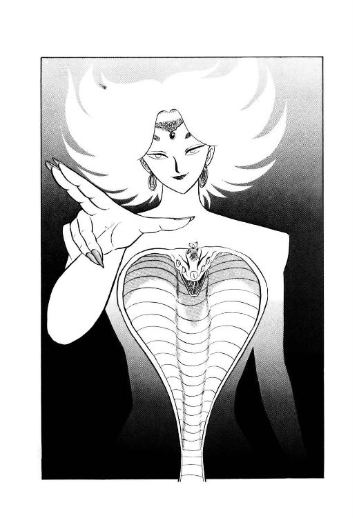
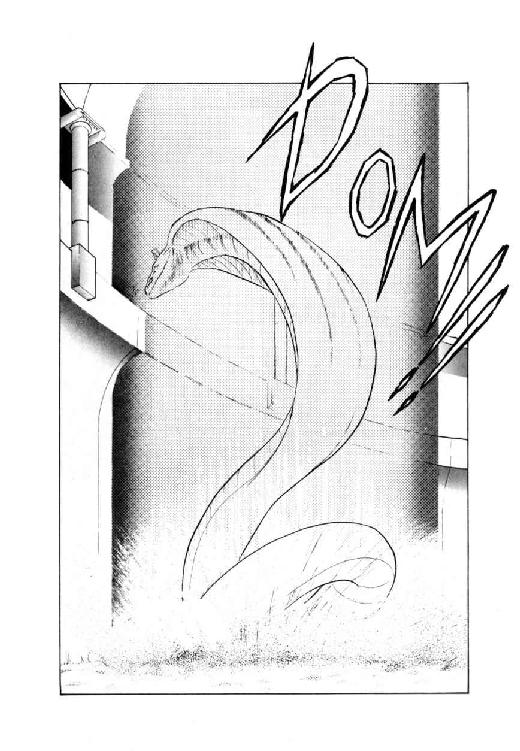

| 魔獣戦士ルナ・ヴァルガー＜５＞探索 | |
| 秋津 透 | |
| (2014) | |
魔獣戦士ルナ・ヴァルガー
⑤探索
秋津 透
本作品の全部または一部を無断で複製、転載、配信、送信したり、ホームページ上に転載することを禁止します。また、本作品の内容を無断で改変、改ざん等を行うことも禁止します。
本作品購入時にご承諾いただいた規約により、有償・無償にかかわらず本作品を第三者に譲渡することはできません。
本作品を示すサムネイルなどのイメージ画像は、再ダウンロード時に予告なく変更される場合があります。
本作品は縦書きでレイアウトされています。
また、ご覧になるリーディングシステムにより、表示の差が認められることがあります。
目 次
口絵・本文イラスト あろ ひろし
登場人物
ルナ・ド・リムズベル リムズベル公国の第二公女。魔獣と合体中。
魔獣ヴァルガー 伝説の大魔獣。無敵の威力を誇る。
ロ コ 有翼黒猫。ルナの使い魔。
バト・ロビス ダンバス帝国の元部隊長。獣人族に大将と仰がれている。
ミル・ユード 貿易商兼帝国青年貴族。バト・ロビスの甥。
レイピア・ロナ ミル・ユードに忠誠を誓う女戦士。
リア・ファルル 獣人族の豹娘。死霊術師の素質を持つ魔道士候補生。
ルネ・ニグス 獣人族出身の魔道士候補生。つまらなそうな顔が特徴。
リム・ガーグ 獣人族の山羆男。頭は悪いが、忠実で怪力の持ち主。
グレゴール・クライシス 魔獣を狙う狂的死霊術師。倫理観念がない。
チャフ グレゴールの使い魔の黒蝙蝠猫。口が悪いが性格も悪い。
ザグ・ロビス グレゴールに従う狂戦士。バト・ロビスの大伯父。
ヒュレーネ 死の魔獣の頭脳体。千年以上生きている白き巫女。
第一章 黒蛇魔獣の洞穴にて
１
「お帰りなさいませ、バト様」
獣人谷の入口でリムズベル公女ルナたちの一行を出迎えた獣人族の巫女リム・リオネルは、先頭に立つ巨漢戦士に向かって深々と頭を下げた。
「先刻、烏猫さんが先着されまして、御伝言は伺っております。何でも、魔道都市の危機を救うため、大至急、聖なる洞穴をくぐり抜けなくてはならないそうですね」
「うむ、その通りだ」
行軍用のマントに身をかためたバト・ロビスは、峡谷の中天に昇った太陽をちらりと見上げ、厳しい表情でうなずく。早朝に魔道都市を出て、昼前に獣人谷、昼食をとってすぐに地下通路に入る、ここまでは予定通りだ。
「館の大広間に、御昼食の準備を整えてあります。エルザ、皆様を御案内して」
「はい、お姉さま」
同母姉と同じく巫女の衣装をまとった漆黒の髪のリム・エルザが淑やかに頭を下げ、一同に背を向けて案内に立つ。続いて歩き出しかかった巨漢のマントを巫女がついっと引いて、囁くような声をかけた。
「バト様、あの、少しお話ししたい事が......」
「ふむ？」
バト・ロビスは軽く眉を寄せ、すぐ背後にいる甥っ子を振りかえる。
「カルバドク卿、先に行っていてくれ」
「はい」
長身の青年は小さくうなずき、けげんそうな表情の公女をうながして案内者の後に従った。二人に続いて、口元を堅く引き締めた女戦士と背負い袋を担いだ山羆男、そして魔道士見習いのマントを羽織った土竜男と豹娘が巨漢と巫女の横をぞろぞろと過ぎて行く。
「中年さん、どしたの？」
ルナ公女が、軽く首をかしげてミル・ユードに訊ねる。長身の青年は、小さく肩をすくめて答えた。
「さあね。どうやらリオネルさんが、何か叔父上に用があるらしいけど。だけど公女殿下、気がついたかい？ 巫女の杖持ってるの、リオネルさんじゃなくて、妹さんの方だよ」
「え？ あら、本当」
前を歩いている少女の手に、二匹の蛇をかたどった神聖杖があるのを見て、ルナは少々意外そうな表情になる。
一方、峡谷の入口では、巨漢と巫女が、まだそのまんま見つめ合っていた。男性は不審げに眉を寄せて腕を組み、女性は思い詰めたような表情ではあるが、濃紫の瞳に不安と躊躇をたたえて口を開きかねている。その表情をじろっと見すえ、とうとう巨漢が低い声で訊ねた。
「話があるのでは、なかったのか？」
「はいっ、いえ、その、申し訳ありません」
いささか狼狽気味に、リオネルが頭を下げる。
「あのう、その、バト様、実は私、もしお許しいただけるなら、バト様のお側に従って、微力なりともお役に立ちたいと思うのですけれども」
「ふむ？」
バト・ロビスは、いよいよ不審そうな表情になった。
「俺に従って来るのは今更構わんが、おぬし、獣人谷をどうする思惑だ？ 巫女が居らんでは、統率がとれなかろうが」
現在、獣人谷には族長がいない。前族長のリム・ドゥドルは妻たちとともに軟禁状態になっており、巫女が単身で谷の全部を統治している。この状態で巫女が谷を留守にするのは、いくら何でも無謀というものだ、と無謀戦士は自分の事を完全に棚に上げて思った。
と、巫女はわずかに頬を紅く染め、顔を伏せ気味にして首を振る。瞳と同色の濃紫の髪が顔にかかって揺れ、奇妙に艶っぽい。
「巫女の地位は、妹に譲ります。と言うか、その、つまり、譲らなくてはならない状態になってしまったんです」
そう言って、彼女はすっと顔を上げた。白い頬に血が昇って、ほとんど真紅になっている。そして、振り絞るような、泣くような声で、誇り高い獣人族の巫女は叫んだ。
「私、妊娠しました！ あなた様の、バト様の子ですっ！ そんな前例、そんな道理、絶対にないのにっ！」
「ほう」
わずかに眉を上げ、バト・ロビスは思わず小さく唸る。リオネルは紅潮した顔を再び伏せ、囁くような声で呟いた。
「そうなんです。そんな道理がないんです。長い獣人族の歴史の中には、人間と性交したり、結婚した前例も少なからずあります。でも、子供が産まれた前例は、ただの一度もありません。だから私、てっきり獣人と人間とに子供はできないものだと、決めてかかっていたんです。でも、それがこんな、前代未聞の状態になってしまって、私、いったいどうしたらいいのか......」
「まあ、良い。とにかく大殊勲だぞ」
不意にぐわっと豪快な笑いをうかべると、バト・ロビスは愛人に歩み寄って勢いよく抱きかかえる。一瞬、あっけにとられたように見開かれたリオネルの瞳を、男はまっすぐに見すえてうなずいた。
「前代未聞の状態で妊娠した子供なら、必ずや、前代未聞の勇者となろう。うむ、これは楽しみな事だ」
「バト様......」
ほっとしたような、気の抜けたような表情で、リオネルは旦那様の鬚面を見上げる。と、その顔が再びぐっと引き締まり、巨漢は腕の中の愛人に、やや厳しい声で訊ねた。
「しかし、リオネルよ。おぬし、妊娠中の体で、俺に従って来るつもりだったのか？」
「はい。身籠ってしまったからには、バト様だけが私の頼りですもの。せいぜいお役に立って、見放される事のないよう努めようと思ったのです」
半ば放心したような声で答える愛人を見おろし、バト・ロビスは珍らしく苦笑じみた表情になる。
「馬鹿者。つまらぬ覚悟をする暇があったら、体を大事にして良い子を産むことを考えろ。このバト・ロビス、傍に居ろうが居るまいが、頼ってくる女を見放すような不心得はせん。絶対にせんから、安心して子を産め」
「はい......」
童女のような表情で、リオネルはこっくりとうなずいた。巨漢は大きくうなずき返し、愛人の肩を抱くような姿勢でのしのしと歩きだす。
「当分は、獣人谷でゆっくりしていろ。俺に従って、右往左往する必要はない。余計な心配をせずに健康な子を産むのが、何にも増して俺の役に立つ方法なのだ。わかったな？」
「はい。仰せの通りにいたします」
これ以上ないほど素直な口調で答えると、リオネルはもう一度こっくりとうなずいた。十七年間胸の中で張りつめてきた何かが、不意に緩んで、溶解したような気がする。自分でも意識しないうちに、彼女は紫の瞳からぽろぽろぽろぽろと涙をこぼしていた。
「さあ、急ぐぞ。もたもたしていると、昼食を喰いそこねてしまうからな」
愛人の涙に気付いているのかいないのか、無謀戦士は真剣な口調でそう言うと、わき目もふらずに他の連中の後を追い始めた。
２
「へえっ、巫女さんが、妊娠ですって？」
紺色の目をまん丸く見開いて、ルナは長身の青年の顔をまじまじと見つめた。
「相手はやっぱり、バト・ロビの中年さん？」
「まあ、そういう事らしいね」
ミル・ユードは、案外謹厳な表情でうなずく。
「何でも、本来人間と獣人の間で子供ができた前例は、今までまったく無かったんだそうだ。それが、どういう理由かいきなり身籠っちゃったんで、リオネルさんもずいぶん狼狽したようだね」
そう言って、青年は先に立って進む叔父貴の巨体を見やり、感心したのと呆れたのが混じったような声で呟いた。
「しかし、さすがと言うか何と言うか。叔父上の子供は、僕が知ってる範囲で、これで九人、いや十人目になるぞ。それも、十人全員母親が違うらしいんだから、大変なもんだよな、これは」
「そ、それは確かに、大変ね」
ルナは思わず、溜息混じりに大きくうなずく。無謀戦士の子供が十人ぞろぞろというだけで充分頭の痛くなる情景だが、その上母親が全員違うなんて、あの中年の家庭生活って本当にどーなってんだろ？
「そーすると、まさか、バトさんの家庭では、十人......じゃなくて九人の奥さんが、それぞれ自分の子供を育ててるわけ？」
「さすがに、そこまでは行ってないよ」
ミル・ユードは肩をすくめて苦笑する。
「でも、考えようによっては、それ以上に凄まじい状態かも知れないな。アイーナ叔母上はなさぬ仲の子供を九人、単身で育てているんだから。正直なところ、叔母上こそは、叔父上をしのぐ超人じゃないかと思う事もあるよ」
「へーえ......」
他人が産んだ夫 の子供を九人までも育てあげるなんて、いったいどんな女性だろう、と十七歳の姫君は再び溜息をついた。と、そこへ当の無謀戦士の怒鳴り声がとんでくる。
「くぉら、後方っ、もっと距離を詰めんかあっ！ 万一はぐれても、待ってなどやらんと言っただろうがっ！ もたもたしとると、放置して先に行ってしまうぞっ！」
「はーい、ごめんなさーいっ！」
洞穴内にうわんうわんと響きわたる蛮声に思わずちょっと首を縮め、ルナは慌てて叫び返した。青年も小さく肩をすくめ、公女をうながして歩調を早める。
獣人谷の奥から黒蛇魔獣が封じ込まれていた洞穴に入った一行は、土竜男の案内のもと、比較的順調に進んでいた。バト・ロビスの計画ではだいたい二日半でこの地下通路を抜け、大山脈の西の高原に出る予定になっている。かなりの強行軍ではあるが、一行の力量を考えればそれほど無理というわけでもない。
「とにかく、稼げるうちに時間を稼いでおかねばならん。この先、どこで時間を喰われるかわかったものではないからな」
厳しい表情で呟きながら、無謀戦士は先頭に立つ土竜男のすぐ背後を、ほとんど追いたてんばかりの歩調で進む。まったくうっとうしいったらありゃしないぜと土竜男は腹の中でぶつぶつ呟くが、もちろん声に出しはしない。目いっぱいつまらなそうな渋面をして、彼は分岐した細い横穴にすたすたと入って行った。そして、すぐさま先頭に続いた一行の目の前に、青白く輝く巨大な光の壁が現われる。
「これが、大ザシャム師の障壁ですか」
初めて障壁を目にする烏猫が、感動したような嘆声をあげた。魔道都市を出て以来、ずっと険しい表情で黙りこくっていた女戦士も、琥珀色の瞳にもの珍らしげな色をうかべる。
「この障壁は、魔獣の力でも突破できないそうですね？」
「ええ、試した魔獣戦士が言うんだから、間違いありません」
実際、あの時は大変な目に会ったわよねー、とルナは光の壁を見上げて苦笑した。黒蛇魔獣も確かに手強い敵だったけど、あの闘いで魔獣戦士に最大の損傷を与えてくれちゃったのは、疑いもなくこの光の壁である。
「しかし、改めて見るとこの光の壁の輝きは、斬魔獣剣の光芒によく似てるな」
呟いて、ミル・ユードが足を止めて光の壁を見つめる。
「もしかするとこの障壁、特に対魔獣用に作られてるのかも知れない。だとすると......」
「くぉーらぁーっ!! 距離を開けるなと言うのが、わからんのくあーっ!!」
かなり先の方から無謀戦士の怒声が轟きわたり、青年は思わず跳びあがった。
「し、しまったっ。済みませんっ！」
「まったく、カルバドク卿だろうが、リムズベル公女だろうが、もたもたしとると遠慮なく放置して行くぞおっ！ とっとと走れーっ！」
叔父上の怒鳴り声にはじかれたように、ミル・ユードは慌てて走り出す。公女と女戦士は一瞬顔を見合わせ、どちらからともなくくすっと笑って、青年に続いて走り出した。その頭上を、鳥猫がばさばさっと羽音をたてて飛んで行く。
と、真顔に戻ったレイピアが、ごく微かな声で横を走るルナに囁きかけた。
「気付いてますか、公女殿下？」
「尾行者ね」
ルナも真顔でうなずき返す。この地下迷宮の中では魔獣感覚は効かないが、それでも彼女には鍛えられた戦士の感覚がある。
「うまく気配を消してるけど、確かに何か尾行して来てるわ。多分、例の性悪猫だと思うけど」
「ですね」
よくできました、というような感じで女戦士は小さくうなずいた。
「で、どうします？」
「とにかく、無謀戦士に報告しなくちゃ」
この女性あたしの判断力を試してるんじゃないかな、と思いながらルナは即座に答える。
「勝手な行動して分裂状態にでもなったら、それこそ大馬鹿だもの。攻撃するにしろ撒くにしろ、このまま尾行させるにしろ、全員で方策示し合わせておかなくちゃね」
「そうですね。私もそう思います」
謹厳な顔で、レイピアは再びうなずく。公女は思わず、マントの下で小さく肩をすくめた。
一方、魔道都市からずーっと一行を巧妙に尾行していたグレゴール・クライシスの使い魔、性悪蝙蝠猫のチャフは、洞穴の天井にへばりつくような姿勢で皮膜を広げ、音もなく滑空しながら尾行を続けている。洞穴を歩いてて背後の天井に気を払う奴はまずいないもんねーっ、と彼女は内心ほくそ笑んでいた。奴らが連れてる有翼猫が飛び上がってきた時にはちょっとぎくっとしたけど、どーやら尾行者を見つけたわけでもなさそーだし。
「それにしてもこいつら、いったいどこ行こーってーのかしら。いきなり洞穴の中もぐり込んだと思ったら、そのままどんどんどんどんどんどんどんどん進んでっちゃって。これじゃ御主人様に報告しに戻ることもできないじゃない。まったくもー、魔道都市ほったらかして、どこ行くの、どこ行くの、どこ行くの、よーっ」
光の壁に沿ってとっとことっとこ進んで行く目標を追いながら、蝙蝠猫は少々苛立たしげに口の中で呟いた。とは言うものの、この一行の中に御主人様が御執心の魔獣娘がいる以上、とにかく行方を突き止めておかなくてはならない。魔道都市などもはや二の次三の次、とにかく魔獣から目を離すな、とグレゴール様から厳命されている。
「でもまあそれにしても、こんなにぞろぞろ連れ立って、いったいどこに何しに行くんだろ......あれっ？ あれれっ？ あれはいったい、何っ？ 何っ？ 何何なにっ？」
わずかに曲線を描く光の壁の陰からそれが視界に入ってきた瞬間、蝙蝠猫の紅玉色の瞳が大きくまん丸く見開かれた。それがいったい何なのか、彼女にはちょっと判断がつかなかったが、とにかくやたらに巨大で、黒くて、うねうねと長く、そして何となく生物じみた感じがする。
「何かの管？ お化け黒蚯蚓？ 頭を取られた大蛇？ わかんない、わかんない、わかんないなーっ。いったい何なのよ、これっ？」
何であるにしても、もし生物だとしたら、これは途方もない大怪獣ねっ、と彼女は首をかしげながら呟いた。長さだけなら、例の尻尾女が変身する二足直立竜の魔獣を十分しのいでるんじゃなかろうか。とにかく根っから好奇心の強い蝙蝠猫が性分で、チャフは目標を一応視界に入れながらも、正体不明の巨大な何かに注意を向ける。と、その瞬間、彼女の耳に鋭い叫びがとびこんできた。
「発見ーっ！」
「えっ？ えっ？ え......ひえーっ!!」
まったく唐突に洞穴の中の空気がぶわっと渦巻き、光の壁が青白く明滅する。そして、ほとんど腰を抜かしかかった蝙蝠猫の目の前に、巨大な魔獣戦士がずずーんっと立ちはだかった。まさかの魔獣変身に、彼女は思わずぶっ飛びながら絶叫する。
「ひわわわわわわわわーっ!! 出たあっ、出たあっ、出たあっ、怪獣が出たあーっ!! 助けてっ、助けてっ、殺されるーっ!! ぎゃーっ!! わーっ!! ひーっ!! 誰か誰か誰かーっ!! 誰か助けてーっ!! お願いっ、お願いっ、助けてよーっ!! ひゃーっ!! わーっ!! ひぎゃあーっ!! どひゃーっ!!」
「あーっ、やかましーっ！」
腹立たしげに呟くと、魔獣戦士はぎゃんぎゃらぎゃんぎゃんと喚きながら逃げてゆく蝙蝠猫を追い始めた。足元に転がっている黒蛇魔獣の首のない胴体をぽんっと跳び越し、光の壁に触れないよう注意しながら前進する。だが、何しろ崩れ易い洞穴の中、近くにいる仲間のことを考えれば破壊叫は使えない。どすっ、どすっと魔獣戦士が前に出る間に、相手の方は全速力で宙を飛んで遠ざかり、たちまち黒い蝙蝠猫の姿はルナの視界から消える。
「あーあ、やっぱり逃がしちゃったか」
さほど深追いせずに、頭脳体は肉体を反転させて、元の場所に戻って行った。さほど口惜しそうでもない感じで、ルナは小さく呟く。
「魔獣って、結局のところ、とことん機動力ないもんね」
「本来有翼猫イッピキ、追ッカケ回ス用途ニハデキテナイ」
肉体が、やや不満げな調子で答える。頭脳体はくすっと笑って目を閉じた。
「まあ、いいわ。とにかく追っ払えれば、とりあえず目的達成なんだから。念のため、ちょっと遠観力を使うわよ」
「ホイ......東南東ダナ。距離ハ近イガ、敵サン、必死デ遠ザカッテルヨウダゾ」
確かに、遠観に映った蝙蝠猫はほとんど宙を泳ぐように皮膜と四肢をばたつかせ、全速力で洞穴の出口へぶっ飛んで行く。あれでは再びここに戻って来るまで、かなり時間がかかるだろう。それも、戻って来る気になればの話だけどね、と呟きながらルナは掛け戻し錠を取り出した。
「ま、これで尾行者は振り払った、と。あと、問題なのは行く手の敵ね」
死の魔獣か、と彼女は小さく呟く。同時に、肉体が声は出さないがびくっと戦慄する。死の魔獣ヒュレーネに関して肉体は何も記憶していなかったが、なぜかその名が出るたびごとに、反射的にびくりと戦慄してしまうのだ。良い兆候とはとても思えない。
「たとえ頭脳体が生きてるにしたって、死の魔獣がうろうろしてない以上、封印されてはいるのよね。だからあたしが変身しなけりゃ、何とか封印解かずに事を済ませ......られないかなあ」
錠剤を指先につまんだまま、ルナはあれこれと思案をめぐらせる。しかし、前方の敵だけに神経を集中するには、まだちょっと時期が早過ぎた。
３
「グレゴール様あーっ！ 只今っ、只今ただいま戻りましたあーっ！」
例によって目いっぱいけたたましく喚きながら、蝙蝠猫が洞穴に跳びこんで来る。銀髪の死霊術師グレゴール・クライシスは、氷のように冷たい目を使い魔に向けた。
「遅かったな。何があった」
「はいっ、はいっはいっ、それがですねっ、今朝早く、例の魔獣女が、南方の戦士やら魔道士見習いやら、クラウドが複製元にした女戦士やらと連れ立って、魔道都市からぞろぞろぞろぞろと出て来たんですっ！」
興奮した口調で言いながら、チャフはくるりと体を回転させて少女の姿に変わる。
「これはもー絶対見逃しちゃいけないっ、と思いましたんで、あたし即刻連中の後をつけましたっ。ところがまー奴ら、何考えてんだか知りませんけど、そのまーんまぞろぞろぞろぞろぞろぞろぞろと魔道都市を離れて、どんどんどんどん北へ行っちゃうんですよねーっ。でもって、半日ぐらい歩いたかしら、そこで連中小さな峡谷の村に入りまして、峡谷の奥から地下通路にもぐり込んじゃったんですっ。こーれにはあたしも驚きましたけど、そこはそれ、みすみす諦めるわけにはいきませんよねっ。危険はもとより承知の上っ、あたしは連中を追いかけて、敢然と洞穴の中に入って行きましたーっ！ もう必死っ、必死っ、必死の強行偵察でしたよーっ！ もちろん怖くなかったって言ったら嘘になりますけどねーっ、ですけれど何事もグレゴール様のためっ、ここが忠義の見せ所っ、使い魔チャフはただひとり、敵のアジトの洞穴へ、迫る危険もかえりみずっ......」
「わかった、静まれ」
ごくわずかに眉を寄せ、グレゴールは猫少女の長広舌をさえぎった。
「それで、洞穴の中に入って、どうした」
「はい。洞穴に入った連中を追ってしばらく行くと、青白っぽい光の壁に行きあたりましたっ」
やや声をおとし、猫少女は真剣そのものの表情で報告を続ける。
「壁は東西方向に、ちょっと北にカーヴする感じでずーっと延びてるんです。連中はそこから壁に沿って、西へ進んで行きました。あたしは慎重にかつ細心に、可能な限り用心を重ねて、気くばり目くばり尻尾くばり、もーこれ以上ないってーぐらい注意しながら尾行してったんです。グレゴール様だって、もしその場にいらっしゃったら、きっとあたしの努力を認めていただけたと思いますよお。そりゃあもうあたし、本当にいっしょーけんめー頑張って......」
「言い訳はそれぐらいにしておけ」
グレゴールが、凍りつかんばかりに冷ややかな声を出した。猫少女の身体と表情が、一瞬のうちにびっくーんっと硬直する。
「あ、あの、その、あの......」
「尾行を察知され、大慌てで逃げ戻って来た事ぐらい最初からわかっておる」
冷淡な口調で言いながら、死霊術師はじろりと使い魔を見やった。
「余計な弁解は要らん。とにかく正確に、状況を報告するのだ」
「は......はい、はいです。申し訳ありません」
首をすくめ身を縮め、紅玉色の瞳を上目遣いにして、彼女はおずおずと言葉を続ける。
「それで、その、光の壁に沿ってしばらく西へ行ったところで、あたし奇妙なものを見つけましたんです。とてつもない大きさの、黒い管状のうねうねで、表面は鱗に覆われてまして。そーですね、頭部を取っちゃった大蛇とゆーか巨大鰻みたいな感じなんですけど、とにかくそれがまー長いこと長いこと、例の魔獣を二巻き半か三巻きぐらいはできるんじゃないかしら」
「ほう」
グレゴールのごく薄い片眉だけが、わずかに上がった。魔獣に匹敵する巨大な存在、というところに興味を覚えたらしい。
「それで、どうした」
「ええ、で、それをもうちょっとよく見ようと思いまして視線を少おしだけ動かしたら、そーのとたんに尻尾女が魔獣に化けまして、あたしの方へぐおーってんで迫って来るじゃあありませんか。いっくら何でも魔獣と喧嘩はできませんから、あたし、とりあえずその場を離れまして、こうしてお知らせに戻ったわけなんです」
そう言って、彼女はそーっと御主人様の顔を見上げた。彼はかすかに眉を寄せ、口をぎゅっとへの字に曲げ、何やら考えこんでいる。と、その薄い唇がほんのわずか動き、小さな呟き声を発した。
「なるほど......だいぶ、解けてきたぞ」
「解けたって、何がですか？」
使い魔の問いを冷然と無視し、グレゴールは洞穴の反対側の壁に目を向けた。そこには、女戦士の姿をとった複製体魔奴屍人クラウドが控え、ほとんど熔解してしまった狂戦士を再生している大甕が置いてある。その二つを見比べるように視線を動かし、グレゴールは冷ややかな声で命じた。
「クラウド、姿を変えよ。その大甕と細工台、薬品箱を同時に運ぶことのできる、筋力ある姿に変わるのだ」
命令を受けた魔奴屍人は、小さくうなずくと変化服を脱ぎ、棺のような漆黒の箱の蓋を開いて横たわる。グレゴールはつかつかと箱に歩み寄ると、透明な薬を取ってびしゃっと注ぎかけた。そして、蓋を閉めると猫少女の方へ振り向く。
「チャフよ、お前はすぐにその洞穴へ戻れ。そして、首のない黒い大蛇 の傍で、これを広げるのだ」
厳粛とさえ言えそうな口調で命じると、グレゴールは棚から小さな函を取り出した。彼が短い呪文を呟くと、小函はぱかんと自然に開き、中からやはり小さな巻物が二本現われる。片方は白、片方は黒い布で表装が張ってあった。死霊術師は表装の白い巻物を取って猫少女に渡すと、再び素早く函を閉じる。
「よいか。巻物の軸が白く輝くまで、絶対に封紐を解いてはならん。そして封紐を解いて巻物を広げたら、すぐにその場を離れるのだ。もたもたしておったら、確実に生命はないと思え」
「は、はいっ、はいっ、わっかりましたっ」
平常時でも迫力にはまったく事欠かない御主人様だけど、とチャフは性格にもなく多少声を震わせながら思った。これはまた、一段と凄い迫力がある。何だか知らないけどこの巻物、とにかく平凡な魔道具じゃないらしい。
「それであの、その巻物を広げると、いったい何があの、起きるんでしょうかっ？ もしも、あの、その、支障がなければ、あたしも知っといたほーが、その、好都合じゃないかと、あのそのそのその......」
「それこそ、お前の知った事ではない」
グレゴールは、手にした函を見すえたまま、冷淡そのものの口調で言い放った。
「どうせそのうち、いやでも知る事になるのだ。つまらぬ質問を口走っておる時間があったら、さっさと洞穴へ向かうが良かろう」
「はい......わっかりましたっ」
そう言うと、猫少女は白い巻物を口にくわえ、くるりと身体を回転させて蝙蝠猫の姿になる。皮膜翼を大きくばさりと動かし、彼女はそのまま外へ飛び出して行った。死霊術師は、まだじっと暗い目つきで小函を見すえている。
「久々に......これを使う事になったか」
半ば呻くような声が、グレゴールの唇から洩れた。この二本の巻物がいかに有用で、いかに怖ろしい魔道具であるか、彼は骨身に染みるほど良く知っている。忘れもしない百三十八年前、グレゴールの導師であり養父でもあった死霊術師フォン・クライシスは、この巻物のために百六十歳の若さで生命を失ない、グレゴール自身も危うく身を滅ぼす寸前だった。その後一回だけ、彼は単身でこの巻物を使った事があるが、その時も生き延びられたのが不思議なぐらいの目に遭っている。それ以来グレゴールは、この小函を常に身辺に置き、魔道都市脱出の時も使い魔に持ち出させたが、使った事はない。それほどまでに、危険な魔道具なのである。
「......しかし、今度は魔獣の秘密を手中にできるや否やの瀬戸際だ。あえて危険も冒さずんばなるまい」
それに、この使い方ならまだ危険は少ないはずだ、と死霊術師は陰気な声で呟いた。この程度の危機乗り越えられずして、魔獣の秘密に挑戦しようなどとは、烏滸がましいもはなはだしかろう。
と、その時、魔奴屍人が入っていた漆黒の箱の蓋が、はじき飛ばされるような勢いで開いた。中から丸太のような腕と、筋肉で盛り上がった肩、そして鬚に覆われたいかつい顔がぬっと出る。グレゴールは、わずかに不審気に眉を寄せた。
「ザグ・ロビス、ではないな。お前が記憶している最も筋力に秀れた人間は、それか」
漆黒の箱からずんっと踏み出し、バト・ロビスの姿をとった魔奴屍人は無雑作にうなずいて変化服を取る。身にまとった瞬間、ローブの外見は重甲冑に変化した。
４
「ゆくぞ、クラウド」
呪文を唱え終えたグレゴール・クライシスは、確認するように背後を振りかえった。複製元が見たら激怒するだろうが、無謀戦士そっくりの姿になった魔奴屍人は、大甕を縄でくくって背負い、細工台を左肩に担ぎ、右手に薬品や器具を詰めた箱を吊げている。ほとんど荷物運びの強力おじさん、といった風情だ。その巨体を黄色っぽい靄が包むのを見て、グレゴールはうむ、とうなずく。死霊術師自身も、ほとんど同じような靄に包まれている。
「よし」
声に出して低く呟くと、グレゴールは小函から黒い巻物を取り、やはり黒く染められた封紐を解く。同時に巻物の軸が、漆黒の中からぼんやりと鈍い輝きを放ちはじめる。使い魔は打ち合わせ通り白い巻物を広げただろうか、とグレゴールは珍らしくも、やや危惧に似た感覚で呟いた。
だが、今さら躊躇したところで始まらない。時間がかかればかかるほど、それに応じて危険度は上がってゆく。グレゴールはぐっと口元を引き締め、冷厳そのものの表情で一息に黒い巻物を広げた。
その瞬間、小さな巻物の内側から漆黒の空間が凄まじい勢いで噴き出る。闇はたちまちグレゴールとクラウドの周囲を覆い、包みこんだ。と、その闇の中に、一条の白く光る通路が、細く差し込むように姿を現わす。自分が通路の上に乗っているのを見定めて、死霊術師は背後を振り返った。黄色い靄の凝固物のように見える魔奴屍人が、それでも確かに光の通路の上に突っ立っている。
「よいか、クラウド、私に続いて前進するのだ。途中さまざまな妨害物が出現すると思うが、絶対にこの通路から足を踏み外してはならん。何とか妨害をやりすごし、通路から離れずに出口まで行きつくのだ。では、行くぞ」
ほとんど感情のない声で言うと、グレゴールはやや足早に光の通路を進み始めた。すると、彼が動き出したのに呼応するように、闇に覆われていた空間に、鮮やかな紅色の鬼火魂が数個出現する。ヂヂヂ......とわずかな唸りを発しながら、鬼火魂は不規則に跳び回り始め、そして不意にグレゴールとクラウドめがけて襲いかかった。死霊術師は軽く上体を沈めて、この攻撃をやり過ごす。と、同時に、今度は銀沙のようなものが闇の中に無数にうかびあがり、きらきら光りながら渦を巻き始める。一方では、更に十数個の鬼火魂が空中を跳ね回り、黄金色の流星のようなものも、凄い速度で飛び交ってゆく。思わず目を奪われそうな鮮やかな光の乱舞が、漆黒の空間を背景に繰り広げられる。
しかしグレゴールはその絶景にちらりとも目をくれず、ひたすら光の通路を進んでゆく。鬼火魂や渦を巻く銀沙が次々とグレゴールめがけて突っ込んで来るが、彼は巧みに妨害物をかわし、やり過ごしていった。しゅっ、しゅっ、しゅっと死霊術師の周囲で色彩とりどりの光が舞い、離れてゆく。彼はあえて振り返るような愚行はしなかったが、背後ではバト・ロビスの姿の魔奴屍人が、飛び来る光を同じように避け、かわしている。
そしてしばらくそのまま二人は前進を続けたが、やがて、無秩序に飛び回っていた鬼火魂や銀沙の渦が、それぞれいくつかに大きくまとまり始めた。そして、まとまって膨張した紅や銀の光の中心部に、ゆらゆらと奇妙な画像がうかびあがる。そのとたん、グレゴールの表情が目に見えて険しくなり、頬がぴくぴくっと震え始めた。
「見ないぞ。私は、見ない」
視線を前方に延びる光の通路にすえ、彼はきしむような声で呟く。
「これを見るために、巻物を使ったのではない。無用、無用だ」
呟きながら、グレゴールはほとんど無理矢理に足を前に進める。と、彼の真正面からかなり大きな銀沙の渦が、まっすぐに突っ込んで来た。避けようとした瞬間、グレゴールの目が渦の中心部に釘づけになる。同時にその唇から、鋭い叱声が一言飛ぶ。
「馬鹿者っ！」
自分で自分を叱りつけ、グレゴールはかろうじて画像から目を離して身体を低く沈めた。まさに間一髪、彼の銀髪をかすめて渦は後方へ流れてゆく。画像に気を取られる事のない魔奴屍人は、余裕をもって渦をかわした。
「......馬鹿者が」
苦い口調で呟きながら、グレゴールは再び体勢を立て直して前進を始める。いくら上位世界の叡智を我が所有にできたとしても、自分自身がこの空間で消滅してしまっては話にならない。重々承知していたはずなのに、自分は上位世界を映した画像に、一瞬とはいえ心を奪われた。馬鹿者としか言いようがない。
「導師のように、そのためにここに来たのならまだしも、単に通路に使うつもりの私が、ここで消滅したら完全な大馬鹿者ではないか。しっかりせい、グレゴール・クライシス」
はっきりと声に出して呟きながら、死霊術師は飛び来る鬼火魂を避けるため上体を左に動かした。そして更に顔を左にそむけ、画像に視線が向かないようにする。その脳裏に百四十年余り前に聞かされた導師の声が、いやになるほど鮮やかによみがえってきた。
「よいか、グレゴォルよ。この巻物の造り出す空間はだな、通常の世界と上位世界の接点にあたるものなのであるぞ。従ってこの空間の中でのみ、我々は上位世界を垣間見る事ができ得るわけなのだ。むろん、ただ見たところで理解する事はもちろん、表現する事もできないが、それでも上位世界の画像を見る事により、確実に我々の精神は数段向上するのであるぞ。そして精神向上を積み重ねれば、いつかは上位世界の画像を理解することができるようになるであるであろう。おおう、それを思えば多少の危険が何だというのであるのか。儂は死などは怖れはせんのであるのであるぞっ！」
「私は、怖れる」
記憶の中から叫びたてる導師の声に水を掛けるような口調で、グレゴールは冷ややかに呟く。「しかもこの空間での死は、死ではない。消滅だ。招霊を行なって、知識を継承することすらできん。それではいったい、何のための知識だ」
私がこの空間を使うのは、単なる超空間通路としてであって、精神向上のためではない、とグレゴールは足を前に進めながら呟いた。それは確かに、他の魔道士や死霊術師たちに比べ、私の精神はまさしく超越している。その原因の一つが、若い頃導師につき合わされて怖る怖るのぞきこんだ上位世界の画像の力だというのは否定しない。しかし、あの画像を見る時には、常に消滅の危険がつきまとう。画像に心を奪われている間に、鬼火魂や渦に致命的な一撃を喰らわずに済むか。それはまさに命懸けの博打で、しかも確率はきわめて悪い。グレゴールはごく若い頃から、博打、それも運任せの不利で危険な博打は、勝った時の賞がいかに大きくても手を出さない性格だった。
「危険に挑むのは厭わぬが、才覚と実力で克服できる危険でなくてはいかん。運だけに頼らねばならんのでは、何のために精進を重ねたのかわからんではないか」
いささか苛立たしげにぶつぶつぶつぶつぶつぶつぶつと呟きながら、グレゴールは脇目もふらずに光の通路を進んでゆく。やがて、まとまっていた鬼火魂や銀沙の渦が再び細かく散り始め、中心部の画像も消えていった。紅や銀の光がさらさらと流れ、ひゅんひゅんと飛び交う黄金色の流星とまじり合う。だが、グレゴールの視線は周囲の光を完全に無視し、通路の正面を見すえている。そこには、闇を矩形に切り取ったかのように、呟く輝く白い出口があった。
５
「あららっきゃっきゃっきゃっきゃっきゃっきゃっきゃっ何っ何っ何っ？ いったいいったいいったいいったい、何がどうしたのっ、何事なのーっ!?」
けたたましい声で喚きながら、蝙蝠猫はぱたぱたぱたぱたぱたぱたっと洞穴の壁ぎわまで大慌てで後退する。同時に白い巻物から、爆発するような勢いで光の粒子が噴き出した。
「わっわっわっわっわっわっわっわっ何何何何どーなるのっ!? 爆発するのっ吹っ飛ぶのっ!? どーなってんだか、誰か教えて、教えて教えて教えてよおーっ!!」
「静まれ」
光の奔流から黄色い靄に包まれた姿を現わすが早いか、グレゴールは冷たい声で使い魔に命じた。続いてバト・ロビスに変身した魔奴屍人の巨体が、大荷物とともに現われる。目をまん丸く見開いたチャフの前で、御主人様は抑揚をつけずに小さく呪文を呟いた。それに応じて光の奔流が徐々に勢いを弱め、やがて静かに消えてゆく。完全に光が消えたのを確認した上で、グレゴールは白い巻物を拾いあげ、手早く巻いて封紐をかけて閉じた。その傍へ蝙蝠猫がすたたたたたたっと走り寄る。
「グレゴール様、ようこそ洞穴迷宮へいらっしゃいましたっ！ ほらっ、これっ、これっ、これがあたしが報告した例の巨大物体なんですよーっ！ ねっ、ねっ、あたしが言った通りでしょう？ この長さ、この大きさ、どー見たって只事じゃありませんよねーっ！」
「うむ」
うなずいて、グレゴールは目の前にごろんと横たわっている、黒い鱗に覆われた巨大な物体に近づいていった。使い魔と魔奴屍人が、彼の両側に従う。魔奴屍人は一言も口をきかないが、蝙蝠猫はひっきりなしに喋りまくっている。
「ねーねーねーねーグレゴール様。グレゴール様はこの巨大物体、いったい何だと思われます？ あたしはやっぱり、大蛇じゃないかと見てるんですけどね。うん、でも何であるにしろ、とんでもない事に間違いはないな。ね、グレゴール様、そう思われるでしょう？ あたしが発見したから言うわけじゃありませんけど、この巨大物体、すごいでしょ、すごいでしょ、すごいでしょ、ねー凄いですよねーっ！」
「静まれ」
うねうねとのたくる巨大な黒い物体に目をすえたまま、グレゴールはほとんど氷水をぶっ掛けるよーな口調で言った。チャフはびくんと身を震わせ、首を縮めて上方を見やる。と、御主人様の薄い唇がもう一度動いた。
「だが、確かに凄い」
「そ、そ、そ、そーですよね凄いですよね。確かに確かに、確かに凄いですよね、この大きさ。いったい何がどーしてどーゆーわけで、こーんな化物みたいな大きさの奴が生まれたのかしらねーっ。親がいるものなら、一回見てみたいもんだわっ。きゃはははははははははははは......は......」
どーにか調子を取り戻し、甲高い声で笑いだしかかったとたん、御主人様の鋭い視線がじろっと使い魔の方へと動く。別に制止をかけられたわけではないが、彼女は思わず哄笑に急制動をかけ、そのまま口を閉じた。そこへグレゴールが、冷ややかとしか言いようのない声で命じる。
「チャフよ、いったん前の洞穴へ戻り、黒い巻物を持ってまた現在地点へ来るのだ。すでに危険は減じておるはずだが、軽はずみな行為をすれば間違いなく生命をおとす」
「は、はいっ、わっかりましたっ。十分に気をつけて、黒い巻物を持って参りますっ！」
叫ぶが早いか、チャフは大きく翼を広げて宙に舞いあがった。そして、掛け値なしの全速力であたあたふたふたとその場を飛び去ってゆく。一方、死霊術師は大荷物を担いだまま突っ立っている魔奴屍人を振りかえり、あまり抑揚のない口調で命じる。
「クラウド、持って来た荷物を配置せよ。すぐにでも、実験を始められるようにするのだ」
そして、無謀戦士の姿をした魔奴屍人が重々しくうなずくと同時に、グレゴールは彼に背を向け、巨大物体の方へ歩み寄って行った。例によって大きく表情を変える事はないのだが、物体を見すえる眼光が尋常ではない。その口元から、彼にしては異様なまでに熱情のこもった呟きが洩れる。
「......確かに......凄い。これは、間違いなく、魔獣の死骸だぞ。凄い......素晴しい」
それからしばらくして、黒い巻物をくわえた蝙蝠猫がばさばさと皮膜翼を鳴らして戻ってきた。細工台の上にすとんっと着地すると巻物を置くが早いか、けたたましい声で騒ぎ始める。
「グレゴール様っ！ 只今っ、只今ただいま戻りましたーっ！ グレゴール様っ！ あれっ、グレゴール様、どこですかあっ？ 只今、チャフが戻りましたあっ！ 戻りましたったら戻りましたあっ！ グレゴール様っ、どちらにいらっしゃいますかあっ？ グレゴール様っ、グレゴール様っ、グレゴール様ったらあっ!!」
「静まれ」
冷ややかな声とともに、グレゴールが黒い巨大物体の陰から姿を現わした。両手に、赤黒い肉塊のようなものを抱えている。
「騒いでおらんで、すぐに人間形態をとるのだ。実験のために人手が要る」
「はいっ、はいはいっ、すぐにお手伝いいたしまーっす！」
くるっと体を回転させ、チャフは少女の姿に変わって御主人様に走り寄った。
「えーと、肉塊、お持ちしましょっか？」
「うむ。あの甕に投げ入れよ」
そう言ってグレゴールは猫少女に肉塊を渡し、ザグ・ロビスの再生を行なっている大甕を示す。そして、彼女がどぼんと肉塊を放り込むと、死霊術師は甕をのぞきこんで腕を組み、わずかに首をかしげる。
「いま少し、必要か。......うむ、そうだな、惜しむことはない。やや多目に使ってみるとしよう」
呟いて、グレゴールは使い魔を見やった。
「チャフよ。このとぐろの中央で、クラウドが魔獣を解体しておる。行って、肉を一塊り取って来るのだ」
「はいっ」
うなずいて走り出しかかった猫少女が、急につんのめったかのように足を止める。そして、真紅の瞳をくわっと開いて、御主人様の顔を見すえた。
「と、ととっ、グレゴール様っ。今、あの、何ておっしゃいましたっ？ もしかすると、あの魔獣を解体してるとか、その......」
「言ったぞ」
冷ややかな声で、グレゴールは当然のように応じる。
「この巨大物体は、まず間違いなく魔獣だ。脳の部分が失われているのが返す返すも残念ではあるが、得難い素材には違いないからな。ちょうどクラウドが剛力の蛮人戦士に変身しておるので、ザグの斧剣を使って解体させているのだ」
「でも、あの、その、魔獣ていうのは、その、不可侵なんじゃないんでしたっけ？」
おそるおそる訊ねる猫少女に、死霊術師はやや苛立たしげな口調で答える。
「不可侵の存在など、私は認めん。侵すのが難しい存在は、あるだろうがな。魔獣といえど、しかるべき方法を用いれば必ず意のままにできるはずだ。ましてや、この魔獣は頭部を失った死骸だぞ。それを解体するぐらいの事で、いちいち驚くでない」
「はあ......」
さしもの性悪猫少女もやや毒気を抜かれた表情で、御主人様を見返した。やはりさすがと言うべきなのだろう、この凄まじいばかりに傲岸な信念、とても使い魔なんぞの及ぶところではない。
「......だけど、あの、いったいどこの誰に、魔獣の首斬りおとして殺すなんて真似が、できるんでしょーかねー？」
「私は知らん。だが、想像はつく」
そっけない口調で言いながら、グレゴールはわずかに眉を寄せた。
「魔獣を殺せるほどの実力を持つのは、いるのかいないのかわからぬ伝説の大ザシャムを除けば、同類の魔獣だけのはずだ。おそらくは、例の巨竜型魔獣のしわざだろう。しかし、それは私には関係のない事だ。お前にとっても同じだぞ、チャフ」
そう言って、死霊術師はじろりと使い魔を見すえる。彼女の全身の毛がざわわっと逆立った。
「あ、あの......」
「余計な話は、これまでだ。急いで作業にかかるがよい」
何か言いかかった猫少女に、グレゴールはぴしゃりと命じる。
「もたもたしていて、良い時期ではないぞ。わかったか」
「は、はいっ！ わかっておりますっ!!」
いささかひきつった声で返事をすると、チャフは大慌てで黒蛇魔獣の死骸の方へすっ跳んで行った。
６
「だいぶ洞穴が、狭くなってきたわね。光もずいぶん弱まってるし」
ルナが、ちょっと心配そうな口調で呟いた。するとミル・ユードが、事もなげに応じる。
「それだけ前進したって事だろ。洞穴にもぐってもう二日だもの、多少なりとも変化がなけりゃ、逆に奇妙だよ」
「まあ、それはそうね」
うなずいて、彼女は周囲を見回した。光の壁の近くでは眩しいほどだった蒼白い光が、現在では洞穴の岩壁にまとわりつくごく淡い輝きに衰えている。もっとも、その程度の光でも、この一行は歩くのに不自由する事はない。しかもルナの場合、光が衰えるのに応じて魔獣感覚が回復して来ている。
と、その戻りつつある魔獣聴覚に、何か堅い物体を軽く擦り合わせるような音が触れた。性悪猫の羽音かしら、とルナはわずかに眉を寄せて耳を澄まし、同時に聴覚の水準が一気に鋭く上昇する。今やはっきりと聞こえるようになった、シャッシャッ、シュッシュッという無数の擦過音を判断しかねて、彼女は首をかしげて呟いた。
「何の音かしら？」
「蝙蝠猫ノ羽音ジャナイ事ハ、確カダ」
魔獣が重々しい声で、あんまり役に立たない情報を提供する。
「何ダカ知ランガ、前方カラモ後方カラモ聞コエルナ。遅速デハアルガ、接近シテクルヨウダ。敵ダトスルト、挟撃ヲクラッタコトニナル」
「そうね」
うなずいて、ルナは近くにいるミル・ユードとロコ、レイピアに声をかけた。
「何かいるみたい。前方と後方で、似たような擦過音がするわ。だんだん接近してくるみたいよ」
「えっ!? ほ、ほんとですかっ!?」
烏猫が慌てて、ぴんと立てた耳を動かす。と、ほぼ同時に、前方で豹娘が鋭い叫びをあげた。
「ふみーっ！ みみみゃおっ！ にゃお、みにゃお、ふみゃーみっ!!」
「ちっ、岩百足かよ」
土竜男が苦々しげに舌打ちし、傍の無謀戦士を不承不承といった感じで見やる。
「大将、ちょっと厄介な代物に出くわしたようです」
「敵かっ!!」
ほとんど躍り上がらんばかりの勢いで、バト・ロビスは咆哮した。
「道中、あまりにも何事もないので、実はいささか退屈しておったところだ。敵はどんな奴だっ？ 強いのかっ？」
「それほど上等な敵じゃありません」
ニグスは例によって素っ気ない声で答える。
「洞穴によくいる、岩百足っていう節足虫ですよ。大きさは人間の腕ぐらい。頭部がでかくて顎が張ってるもんで、百足ってより鯰みたいに見えます。並の剣で楽に斬れますし、別に特殊な能力もない。毒もありません」
「なんだ、つまらん」
あからさまに不機嫌そうな表情になって、バト・ロビスは低く唸った。
「いったい、そんな下等動物のどこが厄介だと言うのだ？」
「数ですよ」
これまた大将に劣らないほど不愉快そうな口調で、土竜男はぶすっと答える。
「岩百足って奴は、時々百や二百じゃきかない大群を作って移動する事があるんです。どうやら、俺たちの前方に大群が居坐っているらしい。塵も積れば埃っぽいって奴でね、単体ではどうって事ない岩百足も、うじゃうじゃ寄り集まると始末に悪いんですよ」
そう言って、彼は細っこい目で無謀戦士を見すえた。
「どうします？ 俺一人だったら、迷わず回れ右しますがね。何しろ百足と闘って勝ったところで、苦労ばかりで自慢にもなりゃしない」
「うーむ......」
眉をしかめ、バト・ロビスは腹立たしげに唸る。百足だろーが蚯蚓だろーが、敵に背中を見せるのは、もちろんこの巨漢の好むところではない。しかし、闘い甲斐のない敵なら、いったん退くのもまた戦術だ。ましてや今は時間が惜しい。百足と闘っている暇があったら、さっさと迂回して進んだ方が良いに決ってる。
「......と、頭脳ではわかっているが、な」
無謀戦士がそう呟いた時、いきなり背後から声がかかった。
「回れ右しても、だめだわっ！ 岩百足っていったっけ、この音の主、とにかく来た方の洞穴にも、うじゃうじゃ集まってるわよっ！」
「そうか」
うなずいたバト・ロビスの顔に、ぐわっと牙のような歯がのぞく。挟撃されたとなれば、むしろ方策は簡単だ。とにかく前方へ斬り破って行くしかない。
「ガーグ、俺の脇を固めろ。カルバドク卿、後方を頼む。レイピアと小娘は卿の援護だ。猫は宙に上って状況を報告。ニグスとファルルは内側に入れっ！」
今や誰の耳にもはっきりしてきた擦過音を引き破るような大声で、無謀戦士が隊形を指示する。と、そのとたん、豹娘が勢いよく叫んだ。
「ふみゃーみーみーにゃ、みにゃおっ！ にゃみーっふーみにゃっ！ にゃお、ふみーにゃ、にゃおっ！」
「仕方ないだろ、俺たちは仮にも魔道士なんだ。武装は禁止だし、獣変身して闘う種類の敵でもない」
ニグスがいささか投げやりな口調で、ファルルをなだめる。どうやら彼女は、自分も闘いたいと叫んでいたらしい。一方、隊形の後方でも、ルナが傍のミル・ユードに意見を申し立てていた。
「これ、あたしが変身して一気にカタをつけちゃった方が、良くないかしら。破壊叫とか使わなくたって、百足を蹴っ散らかすぐらいなら朝飯前にできるわよ」
「うん......できれば変身は、避けた方がいいと思うな」
長身の青年は小さく首を振って答える。ルナは、ちょっとけげんそうな表情で訊ね返した。
「どうして？ 一昨日性悪猫を追っ払った時には、とにかく変身して威嚇すればいいって、提案してくれたじゃない？」
「あの時はね。だけど、今は条件が違うんだ」
そう言って、ミル・ユードは思慮深そうな濃灰色の瞳で、ルナをまっすぐ見やる。その真剣な視線に、公女の胸のどこかがどきん、と鳴った。
「じょ、条件って、なあに？」
「まず、洞穴の大きさだよ。見ての通り、この場所は魔獣の巨体には狭すぎる。まともに行動しようと思ったら、周囲全体を崩すことになる。それじゃ人間が危険だ」
洞穴の低い天井を見上げ、ミル・ユードは苦笑と微笑の中間ぐらいの笑いをうかべる。
「それにもう一つ。西に進むに従って、僕らは確実に喪われた神殿に近づいている。そこには死の魔獣という、あまりお付合いしたくない怪物が封じられているらしい。で、もしも君の魔獣変身が、死の魔獣を呼び起こしてしまったら、これははっきり言ってどうもこうもないだろ」
「それはそうだけど......」
呟いて、ルナは小さく首をかしげた。
「でも、喪われた神殿って、まだずいぶん遠くなんでしょ？ 影響ないと思うんだけどなあ」
距離を考えれば、現在地と神殿より、魔道都市から獣人谷の方がはるかに近い。そして、魔道都士で魔獣態に変身しても、獣人谷の黒蛇魔獣の封印は解除されなかった。あれを考えれば、よほどの至近距離で変身しない限り、大丈夫なんじゃないかなとも思える。しかし、青年はもう一度静かに首を振った。
「影響があるかどうかは、やってみなけりゃわからない。各々の魔獣が、どんな具合に封印されていて、どの程度の刺激で覚醒するのか、互いに全然違うらしいからね。とにかく、どうにもならない状態以外は、危険は避けた方がいいよ」
そう言って、ミル・ユードは今度ははっきりと苦笑をうかべる。
「以前にずいぶん威勢のいい事、言ったことがあったけどね。今度ばかりはどうにも状況が悪いみたいだ。節操に欠けるとは思うけど、前言を撤回して安全策に走る事にする」
「前言？......ああ、他の魔獣が覚醒しても、退治しちゃえばいいって言ってた、あれね」
くすくすっと笑って、ルナは小さくうなずいた。
「ま、仕方ないわよね。あの時は、封印されてる魔獣は全部頭脳体抜きだと思ってたんだもの。まさか千年を生きぬく非常識な女性がいるなんて、あたしだって考えてもみなかったわ」
「......まあ、そうだろうね」
自分の非常識を完全に棚上げしたルナの言葉に、さすがのカルバドク卿も苦笑まじりに肩をすくめる。これって、五十歩百歩って言わない？ と、レイピアが半ば呆れ顔で呟いた。が、次の瞬間、女戦士の表情がきりっと締まる。
「我が君、公女殿下、のんびり会話してる場合じゃないみたいですよ」
「わかってるさ」
うなずいて、青年は甲胄の左脇背中側に差してある短剣をすらっと抜いた。腰の斬魔獣剣は、通常の戦闘にはまるで役に立たない。
「ミル、あなたの武器は地這い相手には短かすぎるわ」
淡い光の中、ゆっくりと視界に入ってきた岩百足を魔獣視力で見すえ、ルナは熟練の戦士の口調で言った。
「最後尾は、あたしがやる。ミルとレイピアさんは、手元に跳び込まれないように援護して。その方が、つまんない負傷しなくて済むわ」
「いや、それは......」
ミル・ユードが抗弁しかかったが、レイピアが素早くうなずき我が君と公女の間に入りこむ。そのとたん、先頭の無謀戦士が凄まじいばかりの声で怒鳴った。
「よおっしっ！ 一気に突破するぞおっ！」
「ぐおーっ！」
バト・ロビスの傍で、棍棒を構えたリム・ガーグがまさしく山羆の咆哮をあげる。同時に二人は目の前に迫った岩百足の群れに、どっとばかりに突っ込んだ。遅れじと、他の連中も二人の巨漢に続く。と、まるで突進に呼応するかのように、岩百足の方もいきなり一行へと突っ込んできた。無数の足を素早く動かして、足元から殺到してくらいつく一群、長い胴体をぐっと縮めて、ばねのようにぱあんと撥ね上って襲いかかる一群、それこそ前後から一斉に、もの凄い数の岩百足が押し寄せて来る。
「こ、こりゃちょっと、危いかなっ!?」
背後から次々と跳びかかって来る岩百足を、半分振り返った姿勢で叩き斬りながら、ルナは思わず口の中で呟いた。
７
「グレゴール様あ、ただいま、戻りましたあ」
大きな包みをぶらさげた蝙蝠猫が、いささか息切れしたような声を出して御主人様の傍に着地した。
「お申し付けの薬品類、これで残らずぜーんぶ持って来ましたよーっ！ もー旧拠点には、ほとんどなーんも残ってないんじゃないかしら」
あーしんど、と彼女は大きく溜息をつく。本来有翼猫という使い魔は、機動性には優れているが持久力に欠ける。闇魂の活力を持つチャフは並の有翼猫の十倍近い持久力を誇るが、それでも今日の作業はきつかった。吊げて飛行できる重量ほぼ限界の荷物を、休む間もなく五往復にわたって、旧拠点から運んで来させられたのである。その上、できるだけ急げという御命令つきだったから、もー皮膜翼が抜けちゃいそーに痛い。
「うむ」
へたこんとへたり込む蝙蝠猫には目もくれず、グレゴールは彼女が運んで来た包みを開いた。いくつかの瓶と袋をざっと確認し、その中の一つを取って、大甕の中にぱっぱっと振りこむ。シュウッと青白い煙があがり、銀髪の狂的死霊術師はゆっくりとうなずいた。
「よし、これで安定するだろう」
呟くと、グレゴールは細工台の方へ向き直り、何やらかりかりと作業を始める。蝙蝠猫が、ひょいと上体を持ち上げてのぞきこんだ。
「グレゴール様、何やってらっしゃるんですか？ 先刻からずーっと、ずーいぶん、ずーいぶん、ずーいぶんまた御熱心みたいですけど」
言いながら、彼女はくるっと体を回して少女の姿になり、好奇心いっぱいの瞳で御主人様の手元を見やる。細工台に乗っているのは、紡錘型の黒い板を何枚も継ぎ合わせた、大きな長円型盾だった。
「あ、これ盾ですね。また魔力とか何か、そーゆーの持たせてあるんですか？」
「いや、特にない」
素っ気ない口調で答えると、グレゴールは傍の薬瓶を取る。そして慎重な手つきで盾の端の部分に塗りつけ、続いて別の薬液をぽたりと垂らす。その手元を見ながら、猫少女は小さく首をかしげた。
「それじゃ、あの並の盾なんですかあ？ どーしてまた、わざわざそんな並製品、グレゴール様ともあろーお方が、一所懸命造っちゃうんでしょうか？ 変ですよ、変ですよ、ぜーったい変ですよっ。どーせ何か、悪質な細工、してあるんでしょう？」
「別に細工など、しておらん」
グレゴールは、わずかに眉を寄せながら、盾の端にぎりぎりぎりっと錐をねじ込む。
「ただ、素材が並ではないだけの事だ。見てわからんか、これは魔獣の鱗だぞ」
「あああっ！ あっ！ あっ、そーかっ！」
猫少女が大仰なくらい驚いた声を出し、おまけにぱんっと両手を拍つ。
「そーかそーか、そーですか、魔獣の鱗製盾ですかーっ！ なーるほどなるほどなるほど、こーれは凄いわっ！ もともと不可侵、じゃないにしたって、それに近いって言われるくらい強固な魔獣の鱗ですもんね。そーれで盾造ったら、こりゃもう、最強っ、最強っ、無敵無敵無敵ーっ!! 無敵の盾じゃありませんかーっ！ こーれは凄い、こーれは見事っ、さすがはグレゴール様、素晴らしいわーっ！ 素晴らしーっ、素晴らしーっ、本当に素敵っ、きゃーっ！」
「こら、静まれ」
踊り出しかねない勢いで囃ぎたてる使い魔を、グレゴールは例によって冷たい声で制止する。だけどこの制止にはちょっと照れたよーな感触があったよーな無かったよーな、とチャフは内心ぺろっと舌を出した。ま、もちろん猫少女の思い過ごしかも知れないけどね。
と、そこへ相変わらず蛮人戦士の姿をしている魔奴屍人が、大きな板のようなものを担いでやって来た。その先端に鋭く尖った白い牙が二本並んでいるのを見て、グレゴールは細工の手を止める。
「顎があったか。期待はしていなかったが、これで魔獣の牙が使えるな」
「そ、そ、そ、そーするとっ、最強の盾に続いて最強の太刀ができちゃうわけですねーっ!!」
猫少女が興奮しきった声で叫び、両脚をそろえてぴょんぴょん跳ねはじめた。
「凄ーいっ、凄い凄い凄い凄い凄い凄い凄ーいっ!! 凄いの他には形容しよーがなぁーいっ!! 魔獣よっ、魔獣の牙で作った剣よっ!! 斬れないものなんか、この世にないんじゃないかしらっ!? 凄ーいっ凄い凄い凄い凄い凄いっ、本当に凄ーいっ!!」
「静まれ」
常人の片脚ぐらいの大きさがある、無気味なほどに白い黒蛇魔獣の牙を顎ごと手にとって、グレゴールは呟くような声を出す。
「一応、言っておくが、この牙は長剣にするのはいささか難しい素材だ。私は牙を、槍に細工しようと思う。人間の技術による防御なら、ことごとく貫き通す魔獣の槍だ」
そう言って狂的死霊術師は、黒蛇魔獣の顎を静かに傍に置いた。そしてはじめて、猫少女の方へ視線を向ける。
「しかし、チャフよ。魔獣の槍も、魔獣の盾も、しょせんは道具。それを使う戦士がいなければ、物の役には立たん。その意味では、私が真に作ろうとしている戦士は、まだ姿を見せていないのだ」
「は、はあ......」
何だか良くわからないが、例によって御主人様の凄まじい威圧感に半ば硬直し、チャフはかろうじて返事らしきものを洩らした。グレゴールはゆっくりとうなずき、大甕に歩み寄って軽く叩く。
「私は、ザグ・ロビスの再構成に魔獣の力を加えることに、ほぼ成功している。もう半日もすれば、彼は魔獣狂戦士となって復活するだろう。騒ぎ立てるならば、チャフよ、その姿を目にしてからにするが良い」
「わ......わかりました......」
でも、そーなったらあたしと言えども、あまりの凄さに声が出ないんじゃないかな、と彼女は内心、本当に冗談抜きで呟いた。
８
「ちょっと、中年さんっ！ 岩百足ってもしかして、本当に限度がないんじゃないのっ!?」
斬っても斬っても次から次へと押し寄せて来る岩百足の大群を防ぎながら、ルナは大声で先頭のバト・ロビスに問いかけた。ぶんぶんぶんと斧剣を振り回しながら、無謀戦士が意外に落ち着いた声で応じる。
「うむ、そうかも知れん。だったら、何だ？」
「何だじゃないわよっ！ 岩百足の方は無限に押してこれるのかも知れないけど、こっちは永遠に防いでるわけにはいかないんだからっ！ 早いとこ何とかしなくちゃ、本気で危いわよっ！」
右に左に長剣を薙ぎ払いながら、ルナは鋭い口調で叫んだ。すでに彼女は、完全に後方を向いて、押し寄せ跳びかかる岩百足を斬り払っている。バト・ロビスの方も、まさしく怒濤の如く殺到する岩百足を防ぎ止めるのに忙しく、もはや突進どころかほとんど前進していない。進んで進めない事はないがな、と巨漢は数匹の岩百足をまとめて潰しながら唸った。そうすると確実に、後方の連中との間に隙があき、岩百足どもがなだれ込んで来る。死者は出ないまでも、全員ばらばらにはぐれる事は間違いない。
「それはちと、厄介だな。しかしこのまま岩百足と闘っているわけにもいかんだろうし、さて、どうするか」
呟いて、バト・ロビスは洞穴の天井を見上げた。そこへ、烏猫がばさばさっと羽音をたてて戻って来る。押し寄せる岩百足を蹴とばし、叩き潰しながら、巨漢は烏猫に声をかけた。
「おいっ、この先はどうなっとる？」
「どーもこーも、岩百足の洪水ですよ」
黄金色の瞳を光らせ、烏猫は大きく首を振る。
「前方も後方も凄い数の岩百足が押しかけて、二重三重にうねってます。まだまだ数は増えてるみたいだし、これ、突破するの無理じゃないかな」
「冗談じゃないわよっ！」
ルナが、憤然とした声で叫んだ。空中で烏猫が、思わず首を縮める。長剣を、いささか腹立ちまぎれ気味に振るいながら、彼女は宣言するような調子で言葉を継いだ。
「あたし、変身する！ それがこの場合、一番てっとり早いわっ！」
「待ってくれ、公女殿下っ！」
間髪を入れず、ミル・ユードが叫ぶ。リムズベルの公女は、一瞬、ぎゅっと眉を寄せた。
「どうしてっ？ もうこうなっちゃったら、危険も仕方ないでしょうっ？」
「いや、まだ万策尽きたわけじゃない。僕にひとつ、策があるよ」
そう言うと、長身の青年は相手の返事を待たず、さっと身を翻す。
「ガーグさん、あなたの背負い袋の中に、長目の縄は入ってませんか？」
「あ？ あ、有りまずげど」
無謀戦士と並んで棍棒を振るっていた山羆男は、不意の質問に当惑したように答えた。
「ぞいづが、何が？」
「有難い、ちょっと借ります。烏猫くん、こっちに降りて来てくれ」
ガーグの背負い袋から縄の束を取り出すと、青年は続いて上空のロコを呼んだ。烏猫はちょっと御主人様の方を見たが、彼女が何も言わないので、素直に翼を鳴らして降下する。
「何ですか？」
「天井の、あそこのとこに枝穴みたいなのが見えるだろ？ この縄の端を、枝穴の中、できれば抜けた先に結びつけてほしいんだ。もし抜けてなければ、できるだけ奥に。わかるね？」
青年は濃灰色の瞳で烏猫を見すえ、縄の端を渡した。ロコは縄を口にくわえ、小さくうなずいてばさりと翔び立つ。その姿は、たちまち枝穴とも単なる窪みともつかない、天井の穴の中に消える。相変わらず押し寄せる岩百足をぶっ飛ばしながら、バト・ロビスが太い声をかけてきた。
「なるほど、前後を封じられたなら、上方へ抜けるか。言われてみれば当然の策だが、ちと思いつかんかったな」
「まあ、飛行できる仲間が居ますからね」
そう言って、ミル・ユードはちらっと公女の方を見やる。彼女は後方の岩百足を撃退しながら、視線を上方に向けていた。と、上方から、ばさばさっと烏猫が降りて来て、空中で停止しながら報告を始める。すでに縄はくわえていない。
「縄の端、固定して来ましたっ！ でも、枝穴は途中でちょっと狭くなってて、僕以外の人は通れるかな？ ファルルさんぐらいなら、何とかなると思いますけど」
「いや、大丈夫だ。心配は要らないさ」
にこっと笑って答えると、青年は傍の土竜男の肩をぽんと叩く。
「出番だよ」
「やれやれ、来るかと思ったらやっぱり来たか。まあ、この際仕方もないがね」
ぶつぶつ言いながら、ニグスはけっこう機敏に縄を登り始めた。そして、天井に着いたところでマントを外して烏猫に放り、襟巻土竜に変身して枝穴にもぐり込む。少し間をおいて穴からばらばらっと岩片がこぼれ、ニグスの不愛想な声が聞こえる。
「抜いたぞ」
「よーし、御苦労さん」
快活に答えると、ミル・ユードは今度は豹娘の肩をぽんと叩いた。にこっと笑ってうなずくが早いか、少女はするするするするっと縄を登る。
「よし、次はレイピア、それから公女殿下、急いで登って」
「いいえっ、お先にどうぞっ！」
長剣と細鞭でそれぞれ忙しく岩百足を防いでいる二人の女戦士の声が、期せずしてきれいに唱和した。一瞬顔を見合わせた二人の女性を見やり、青年は小さく苦笑をうかべ縄をつかんだ。「じゃあ、先に行くよ」
こんな場合に譲り合いしてても始まらない。カルバドク卿は素早く縄を登り、そのすぐ後からあと押しをするような形でレイピアが続く。ルナはばっさばっさと長剣を振るいながら、自然と背中合わせになった無謀戦士に声をかけた。
「中年さんっ！ あなたや山羆さんの体重、この縄で支えられると思う？」
「さあな。一人ずつなら何とかなるとは思うが、やってみなくてはわからん」
跳んで来る岩百足を斧剣でばしばしと叩き飛ばしながら、バト・ロビスは真剣な表情で応じる。
「とにかく、小娘、おぬしは先に行け」
「あたしは大丈夫、援護するわ。山羆さんをまず行かせれば？」
ルナの提案に、山羆男は小っこい目を丸くした。
「お、俺は、一番重いがら、最後に......」
「いや、先に行け」
バト・ロビスが有無を言わさない口調で命じ、山羆男はなかば反射的に縄にとびつく。そのままえっちらおっちら登って行くのを、ルナは岩百足を叩き飛ばしながら、ちらっと見やる。「大丈夫かしら、縄？」
「それこそ、心配したところでどうにもなるまいが。......おっ！」
斧剣を振りかざした無謀戦士の視線が、思わず上方を向く。天井近くまで登っていた山羆男の巨体がぐらっと揺れ、ずずっと下へずり落ちかかる。先に登りきって下を窺っていた女戦士が、鋭い声で叫んだ。
「縄がっ！」
縄の、枝穴の縁にかかった箇所が岩角で擦れ、ぶつぶつぶつっと見る見る千切れる。急いでレイピアが身を乗り出し、山羆男も慌てて腕を伸ばすが届かない。細鞭を、と女戦士が右腰に手をやった瞬間、山羆男の巨体が何かに突き上げられるように、どんっと枝穴の中に飛びこんで来た。
「ぐわんっ！」
「きゃっ！」
思わず背後にずり退ったレイピアの鼻先に、山羆男の痛そーに顰められた顔面が突き出される。と、その巨体の向こうから、あっけらかんとした明るい声が聞こえて来た。
「ちょっと悪いけど、早いとこ奥に進んでくんない？ さすがにこっち、余地ないのよねー」
「公女殿下!?」
奥へ体を移動させながら、女戦士は驚いたような、あきれたような声を出す。
「いったい、どうやって天井の穴へ!?」
縄は切れたんじゃなかったんですか、と訊ねかかった時、彼女の背後、穴の奥の側からミル・ユードが声をかける。
「おーい、いったい何がどうしたんだ？」
「山羆さんが登ってる途中で、縄が切れちゃったのよ」
間にレイピアとガーグをはさんで、ルナが大声で返答した。
「で、あたし、とっさに跳躍して体当たりかけて、山羆さんの事枝穴の中に押し込んだの。結局、勢い余ってあたし自身も跳び込んじゃったけどね。まあ、手間が省けていいんじゃない？」
「なるほど......」
洞穴の天井まで軽々と跳躍するのみならず、その勢いで山羆男の巨体を突き上げて枝穴に押し込んでしまうとは、さすがは魔獣公女殿下、とミル・ユードは小さく肩をすくめる。
「そうすると、あとは叔父上が残っているわけだね。縄を降ろし直そうか」
「その必要は、なさそうよ」
ルナの声に、明らかに笑いが混じった。
「おっさん、単身になったとたんに岩壁に向かって突進始めてるもの。ありゃ岩壁を登って来るつもり......あ、来た来た。おっさーんっ、手を貸そーかっ？」
「要らんわいっ」
むっつりとした叔父上の声を耳にして、ミル・ユードは微笑をうかべて前進を始める。どうやら今回の危機は、公女殿下を変身させずに切り抜ける事ができたらしい。
しかし、岩百足の大群なんぞは、実は危機どころか障害の内にも入らない些事だった。それをこれから、彼らは思い知らされる事になる。
第二章 総力攻撃！ グレゴール軍団
１
「は？」
大甕がばりっと割れ、逞しい黒い肉体が姿を現わしたのを見て、猫少女はけげんそーに首をかしげた。
「これが、グレゴール様が精魂こめて作った魔獣狂戦士なんですかあ？ 以前のザグ・ロビスと、あの、どこが、どこが、どこが違うんでしょーか？」
浅黒い肌に白い髪、白い鬚。発達しまくった筋肉はそれだけで凄まじく威圧的だが、別に以前のザグ・ロビスだって、それは同様だったはず。魔獣狂戦士というほどの凄味は、特に感じられない。
と、グレゴールは猫少女にも復活狂戦士にも目をくれず、傍の魔奴屍人を振り返った。彼はまだ無謀戦士の姿のままで、手には巨大な斧剣を握っている。
「クラウドよ。ザグ・ロビスを討て」
冷ややかな声で命令が下されると同時に、バト・ロビスの姿の魔奴屍人は、疾風のように狂戦士に襲いかかった。鎧は変化服だが、斧剣はザグ・ロビスが使っていた本物である。ぶんっと重い唸りをあげて迫って来る攻撃を、復活したばかりのザグ・ロビスは避けようともしない。いくら斬られても平気な闇魂の所有者だからって、こりゃ戦士として情ないんでないの、と猫少女が思った時である。いきなりがきっと硬質な音があがった。
「つ......角おっ!?」
チャフが、魂消た声で叫ぶ。いったいいつの間に生えてきたのか、ザグ・ロビスの額、後頭部、そして両耳にあたる部分から、四本の角がにゅーっと伸びているのだ。バト・ロビス魔奴屍人の、本物と同等の力をこめた斧剣の一撃は、この角を折る事もできず、あっさりはじかれてしまったのである。
だが、狼狽しない事では本物以上の魔奴屍人は、はじかれた斧剣をそのままの勢いで相手の肩に振りおろす。しかし、そこで再びがきいんっと斧剣がはじき返され、魔奴屍人もやむなく後方へ跳びさがる。
「どど、どーしてどーして？ いったいどーして斬れないの？」
紅玉色の瞳を丸くして、チャフは不思議そうに口走った。すると、その疑問に答えるかのように、ザグ・ロビスの両肩と腰の周囲の皮膚が、鱗状になって盛り上がってくる。肌がそのまま鎧になっているらしい。
しかしそれでも魔奴屍人はあきらめず、斧剣をまっすぐ構えて突っ込んでゆく。と、その両手首をザグ・ロビスの両手が、がっきとばかりに把み取った。両者の太い腕に、ぎりぎりぎりっと力が入り、筋肉がぐぐっと膨れあがる。
そしてその次の瞬間、チャフは思わずあんぐりと口を開けてしまった。何と、魔奴屍人と組み合っているザグ・ロビスの両腋から、更に二本の腕がぬーっと出てきたのである。
「な、な、な、な、な、な、な、何なのよ、何なのよ何なのよ、何なのよこれはーっ！」
「これが、魔獣狂戦士ザグ・ロビスの戦闘体制だ」
金切声をあげて叫ぶ猫少女に、グレゴールは素っ気ない口調で言葉をかけた。
「四角四腕のこの姿、狂戦士と言うよりは、むしろ鬼神に近いかも知れん。そして、見よ、これが新生ザグ・ロビスの必殺技だ」
狂的死霊術師はばさりとマントを翻し、己の会心作を指し示す。ザグ・ロビスは四本の腕でがっちりと魔奴屍人を押さえこんでいたが、不意にその頭部が、角と角の間を境にして、ぴっと裂けた。猫少女が思わず、甲高い声で叫ぶ。
「こっ、こんなっ、こんなのっ、こんなのっ、こんなのって、ありなのーっ!?」
もう大抵の事じゃ驚かないつもりだったけど、と彼女は悲鳴をあげながら思った。正直、これには腰が抜けた。あまりと言えばあんまりのような気もするが、こんな凄まじい技、確かに今まで見たことない。
何しろ、ザグ・ロビスの頸部がいきなりにょろっと伸びたかと思うと、十字型に裂け目の入った頭部が、ぱかーっと四方に開いたのである。並の神経の持ち主だったら、冗談抜きで発狂しかねない、悪夢のような攻撃だ。
そしてザグ・ロビスは四つに割れた頭部からそれぞれ伸びている角で、身動きできない相手の頭を、四方からがっちりと挟みこむ。本来恐怖を感じないはずの魔奴屍人だが、この時ばかりは顔面が蒼白になってひきつりまくる。そして更に次の瞬間、四本の角が相手の頸部をぐさっと貫き、易々と頭部を千切り取った。ほとんど、大蛇の動きである。
「よし、それまでだ」
グレゴールが冷ややかな声をかけ、ザグ・ロビスは仇敵の顔をしたクラウドの頭部を無雑作に放り出した。そして、四つに割れていた頭部を一つに閉じ、頸部を縮めて広い肩の上に元通り収める。四角四腕はそのままだが、それでもどうにか人間に近い姿にはなった。一方では、頭部をもがれた魔奴屍人の体が、放り出された自分の頭部を求めてうろうろと歩き回っている。
魔奴屍人には目もくれず、グレゴール・クライシスは怖るべき実力を見せたザグ・ロビスの方へつかつかと歩み寄った。手には、魔獣の槍と魔獣の盾を持っている。
「魔獣の力を得て真の超戦士となったザグ・ロビスよ。おぬしにこの二つの武具を与える。魔獣の牙で作られた槍と、鱗で作られた盾だ。存分に使うが良い」
「有難ク、モラッテオクゾ」
死霊術師から武具を受け取ったザグ・ロビスは、以前通りの聞き取りにくい発音で答えた。
「今ノ小僧ッ子ハ、魔奴屍人カ。斧剣ヲ返シテモラオウ」
「やはり、慣れた武器が良いか。まあ、腕は四本ある。三種の武具を同時に使う事も、容易にできよう」
素っ気ない口調で言うとグレゴールは、やっと頭部を拾い上げて肩の上にすえ直した魔奴屍人に声をかける。
「クラウド、その鉄のかたまりをザグに渡してやれ。そして、元の姿に戻るのだ」
命令を受けた魔奴屍人は、何となく気が進まないよーな足取りで魔獣狂戦士に近寄り、斧剣を差し出した。そして狂戦士が無言で斧剣を受け取ると、素早く後方に退がり変化服を脱ぐ。バト・ロビスの姿で裸体になった魔奴屍人は、少しの間周囲を見回していたが、やがて洞穴の岩壁の窪みにどっかと坐り込んだ。一瞬、けげんそうに眉をかすかに寄せたが、グレゴールはすぐに薬瓶を持って魔奴屍人に歩み寄り、びしゃっと注ぎかける。たちまちバト・ロビス魔奴屍人の逞しい全身からしゅうしゅうと煙があがり、筋肉と骨格がどろりと溶けだす。
「変身の箱を持ってこなかったからな。多少時間はかかるだろうが、やむを得まい」
呟いて、グレゴールは炙られた蝋人形のようになった魔奴屍人に背を向けた。そして、先刻からちょっと呆けたよーに立ちつくしている猫少女に、冷ややかな声で命令を下す。
「チャフよ、準備は整った。この洞穴を抜けて西へ飛び、魔獣女たちの一行を探して来るのだ」
「は、はいっ！ はいっ！ はいーっ！」
ほとんど跳ね上がるよーな勢いで返事をすると、彼女はくるっと体を回転させ、蝙蝠猫の姿に変わる。
「探す方角は、西、西、西ですねっ？ あの、いったい何か、根拠があっての御指示ですかっ？」
「一応はな」
グレゴールは、面白くもなさそうな表情で、ぼそりと呟いた。
「私の推察が正しければ、奴らは高原地帯を西方に進み、秘密の名の内陸湖を目指しているはずだ。隠れる場所はほとんどないからな。上空から探せば、発見は容易だろう」
そう言って、死霊術師はじろりと蝙蝠猫を見すえる。
「よいか。奴らを発見したならば、余計なちょっかいを出さずに、すぐに戻って来るのだぞ。わかったか」
「はいっ、わっかりましたっ！」
蝙蝠猫は、ぶるっと震えあがって答えた。できれば御主人様の推察というのを聞かせてもらいたかったが、どーやらその気はないらしい。
「それではっ、行きまーっす！」
「うむ、行け」
ばさばさばさばさっと羽音をたてて飛び立つ蝙蝠猫を、グレゴールは珍らしく暫時見送った。そして振り返ると、そこではザグ・ロビスが新しい武器をぶんぶんと振り回し、体慣らしの最中である。その凄まじい動きを見つめる死霊術師の目がわずかではあるが細くなり、口元から小さな呟きが洩れた。
「これなら......魔獣に勝てるやも知れんな」
２
「えーっと、あのへんが内陸湖かな」
昇ってきた太陽を背に、烏猫は黒い翼を大きくはばたかせて西へ飛んでいる。昨日の夜半、喪われた神殿探索隊は地下洞穴を抜けて大山脈の西、高原地帯に出た。これから西へ進み、秘密の名の内陸湖の畔にある神殿に向かうわけだが、目算もなくのんびり探し回っていられるほど日数に余裕があるわけじゃない。と、いうわけで機動力のある烏猫が、まず先行偵察に出たのである。
「けっこう距離があるみたいだけど、四日で着くのかな。......まあ、皆さん尋常じゃないメンバーだから、大丈夫とは思うけど」
とにかく僕の役目は、神殿の正確な位置を調べて来る事だ、と烏猫は力いっぱい大気を切り裂きながら呟いた。非力な分だけ、有翼猫の飛行力は並はずれたものがあり、飛行竜や火焔鳥などの滅多に見られない召喚怪物を除けば、まず最高級と言っていい。天候や気流が順調で、余計な荷物が何もなければ、人間が十日以上かかる行程を一日で飛びきってしまう事もある。
「まず内陸湖まで行って、と。それから湖畔を回ってみるか」
西の地平線にだんだん大きくなってくる緑色の一群を見すえ、烏猫は翼の角度をわずかに変えた。倒した耳の上を風がすべり、翼と背中の間をなめらかにすり抜ける。
太陽が天頂をわずかに過ぎた頃、彼は秘密の名の内陸湖の畔に到着した。たまに藪が散在する程度しか植物のない高原地帯に比べ、湖畔には大小さまざまな樹木や草が生い茂っている。
「動物は、いないのかな」
少年の姿になって草地に腰をおろし、持参した食事を頬ばりながら、彼はきょろきょろと周囲を見回した。普通こういった水辺には付近全体の動物が集まり、たいていは人間たちも寄ってきて集落とかを形成するものなのだが、この湖畔には妙に動物の気配がない。
「ミル・ユード様の話だと、けっこう隊商とかも通る場所らしいけど......やっぱり、死の魔獣様とやらの影響力かな」
呟いたとたんに背筋をぞわっと悪感が走り、猫少年は慌ててもう一度左右を見回した。特に怪しいものの気配はしないが、何だか自然に体毛が逆立ってくる。
「こ、こりゃあ、長居は無用だな」
早いとこ神殿を確認して戻った方が良さそうだ、と猫少年は食事の残りを口に放り込んで立ち上がり、くるっと体を回転させた。そして烏猫の姿になるが早いか、ばさばさっと翼を鳴らして上昇する。ある程度高度をとって、彼は湖水の上をゆっくり旋回し始めた。相変わらず動物の気配はしないが、ぞわぞわっとするような感じはむしろ強くなってくる。
「東岸......じゃなさそうだな。南岸の森の中だと、ちょっと厄介だけど......。それとも北岸......あっ、あれかな？」
北岸に連らなる低い丘の上に、何やら白い物体を認め、烏猫は翼をばさりと動かして方向を変えた。全身の体毛がちりちり鳴りそうに鋭く逆立つが、これは確認しないわけにはいかない。
「これだけ変な感じがするんだもの、普通の場所じゃないっていう証拠だよ」
自分に言いきかせるように呟きながら、彼は北岸の丘に向かう。近づいてみると、白く見えた物体は半ば以上崩れた大理石の建物だった。一つの丘だけではない。周辺の丘や草地いちめんに、大理石の円柱や石材がごろごろと転がっている。崩壊する以前には、さぞかし美しく壮大な大理石造りの建物群があったのだろう。
「喪われた神殿かぁ......」
いつでも飛び立てるように体勢を整えたまま、烏猫は崩れた建物群の間をゆっくりと歩き回った。総毛立つような感覚は相変わらずだが、動くもの、生命あるものの気配は、ほとんどまったく何もない。これは墓地だな、と烏猫は小さく呟いた。生きた者が、用もないのに立ち入っていい場所じゃない。
それでも、彼はいくつかの崩れた建物を通り抜け、廃墟の中で最も大きな、ほぼ中央に位置する長円型の建物に入って行った。この建物には屋根がなく、他の建物ほど崩れが目立たない。周辺部が高くせり上ったすり鉢状の構造で、鉢の底にあたる平らな部分の中央に、塔のような建物が造られている。烏猫はその塔の前まで進み、黄金色の瞳でしげしげとながめた。
「これは......扉みたいだな」
塔の大きさは魔獣態になった時のルナ様ぐらいあるのだが、その一面いっぱいに巨大な扉がついている。そして、扉を封じるような感じで、蛇の浮き彫りが塔を巻くように作られ、その先端は上部に鎮座する白広胸毒蛇の巨像につながっている。こりゃあ、嫌でも獣人谷の蛇神様の像を思い出しちゃうよ、と烏猫は小さく首をすくめた。
「もし封印が解けたら、ここから死の魔獣がとび出して来るのかな」
総毛立つ感覚にもやや慣れてきたためか、彼はちょっと不用意に口をすべらせる。その瞬間、彼の頭の中に形容し難いほど硬質で平板な、そのくせ妙な威圧を感じさせる女性の声が響いた。
「誰か、妾の名を呼んだかえ？」
「ぎゃーっ、でたーっ！」
思わず悲鳴のような絶叫をあげ、烏猫はほとんど全力で空中へぶっ飛ぶ。今にも塔をぶち破って、死の魔獣がとび出て来るんじゃないか、と恐怖に満ちた瞳で地上を見降ろすが、遺跡はしんと静まり返って何の気配もない。とりあえず空中で停止しながら、彼はほーっと溜息をついた。
「あーっ、びっくりしたーっ。いったい、何だい、今のは」
空耳かな、と呟いてはみたが、とてもそうとは思えない。やっぱり死の魔獣は、封印されてるにしても、頭脳体もろともに生きている、と烏猫は確信した。
「そうとわかれば、急いで戻って報告しなくちゃ」
神殿の廃墟に長居は無用っ、と烏猫は翼に力を込める。再び太陽を背に、しかし今度は東に向かって彼は飛び立った。総毛立つような感覚も、神殿から離れるに従ってすうっと消えてゆく。
東に向かって飛んで行くうちに太陽が沈み、周囲が闇に包まれ始めた。しかし、彼の猫目にはほとんど影響はない。荒地と、たまに藪があるだけの単調な高原地帯の上空を、烏猫は黒い矢のようにまっすぐに飛び続ける。
そして、そろそろ夜明けも近くなった頃、彼はやっと松明の小さな光を見つけて、ほっと溜息をついた。さすがに長距離を飛び抜いたので、いささか翼がだるい。一行と合流したら、山羆さんの背負い袋の中ででも眠らせてもらお、と彼は小さく欠伸をしながら呟いた。あの袋は、見かけよりずっと容量のある魔法の袋だから、僕一人ぐらいどうにか......。
「うっ!?」
その時、空中に何かが羽撃く気配を感じ、烏猫ははっとして全身を緊張させた。上昇して来るあの影は、鳥とも蝙蝠とも明らかに違う。
「......あいつだ」
呟いた烏猫は、一瞬、逃げるか仕掛けるか迷った。位置はこちらが上位、飛びかかって攻撃するには都合がいい。皮膜翼に一撃かましてやれば、相手は墜ちる。逃げるとなると、かえって後尾から喰いつかれるかも知れない。
しかし彼は、土竜男の忠告をしっかり覚えていた。蝙蝠猫の攻撃力は並じゃない。組み合ったら最後、あっという間にずたずたにされるだろう。
結局、烏猫はまるで蝙蝠猫に気付かなかったかのように、そのまま東へ飛び続けた。追って来たらばその時はその時、知らん顔で行き違えればそれでいい。
この相手の態度に、今度は蝙蝠猫がややためらった。普段の彼女なら十中八、九、追っかけてって攻撃するところだが、今回は御主人様に一本釘を刺されてる。敵が仕掛けて来たり逃げ出したりしたんなら攻撃のかけようもあるが、こっちに気付いてもないかも知れないものを、わざわざ追っかけるわけにはいかない。持久力は抜群の彼女だが飛行速度は普通の蝙蝠猫とそれほど違わないし、烏猫は蝙蝠猫より速度があるとされている。わざわざ追っかけて、気付かれて、逃げられたりしたら、それこそ大馬鹿だ。
「ふんっ、ふんふん、ふんっ！ 今度だけは、まあ、見逃がしてやるわっ。まあーったく、命冥加な猫ねっ！」
口の中で小さく毒づいただけで、蝙蝠猫は南東へ向かって飛び去って行く。そしてその呟きは、本人が思っている以上に重大な真実を含んでいた。
３
「読まれたな」
蝙蝠猫がこちらを窺っていたという烏猫の報告を聞いて、ミル・ユードは珍らしく渋い表情になって呟いた。
「考えてみれば、当然かも知れないな。グレゴールだって死霊術師なんだ。喪われた神殿のことも承知しているはずだし、だとすれば、こちらの行動を読むぐらい簡単だろう」
「確かに」
ニグスが、例によって面白くもなさそうに同意する。
「で、どうします？」
「ここまで来て、どうするもこうするも無かろう」
腕組みをして考え込む甥っ子に代わって、バト・ロビスが豪放とも無雑作とも言えそうな口調で言い放った。
「前途に立ちふさがる者あらば、妖死霊術師だろうが死の魔獣だろうが、断固粉砕してこれを突破し、こちらの目的を果たすのみだ。どうだ、違うか？」
「違いやしませんけどね......」
腕を組んだまま、長身の青年は眉を寄せて呟く。
「どうも、グレゴールの狙い目が読めないんですよ。ほとんど持ち駒を失くしてるはずの奴が、いったい何をやる気なんだか。単なる足留めなのか、それとも......」
「まあ、考えていても始まるまい。今はとにかく前進する事だ」
無謀戦士が、いかにもその仇名にふさわしい意見を述べる。
「それに、俺はむしろ、グレゴールがこちらに攻撃をかけるのは歓迎したいぞ。我々のいない魔道都市に手を出されるよりは、よほど始末が良いわい」
「確かにね」
うなずいて、ミル・ユードは腕組みを解いた。すでに夜は明けかかっており、ほのかな旭光が荒地に射し始めている。
「ようし、とにかく出発だ。猫の偵察で、目的地の位置もはっきりしたからな。後はとにかく、前進あるのみっ！」
毎度のことながら気迫のこもった大声をあげ、バト・ロビスが先頭に立つ。その背後に一同ぞろぞろと続き、まだ何やら考え込んでいるミル・ユードと、彼を見守る二人の女戦士が最後尾になっている。
「我が君、やはり死霊術師の動き、気になられますか？」
「うん。......どうもね」
足早に進みながら、青年は難しい表情でうなずいた。
「叔父上はああ言ったけど、ロコ君が見たのは敵の有翼猫だけだ。もしかすると、僕らが西に向かったのを確認した上で、魔道都市攻略にかかる気なのかも知れない。可能性としては少ないと思うけど、あり得なくはないよ」
「そうねえ......でも、それは考えても仕方ないんじゃない？」
ルナが紺色の瞳を長身の青年に向け、軽く首をかしげる。
「あたしたちが留守の間に攻撃受けても大丈夫なように、魔道都市の方、ちゃんと手配りして来たんでしょ？」
「ちゃんと、じゃないんだ。一応、ぐらいがせいぜいだな」
呟いて、彼は小さく苦笑した。
「とは言っても、引き返すわけにはいかないんだから、公女殿下の意見が正しいんだ。正しいのはわかってるけど、グレゴールの動きをあれこれ考えてるとね。どうも味方の弱点ばかり見えてくる。せめて、奴の狙いがもう少しでも絞れりゃいいんだけどな」
「グレゴールの、狙いかあ......。そういえばあいつ、何でわざわざ百年ぶりに魔道都市に......ああっ!!」
不意にルナが、びっくりするような大声をあげる。ミル・ユードとレイピア、それに前方を歩いていた土竜男や豹娘、山羆男からバト・ロビスまで、何事かと足を止めて振り返った。
「どうした、小娘っ！ 何か出おったかっ？」
「い、いえ、別に、そーゆーわけじゃないのよね」
公女はばつの悪そーな表情で、ぽりぽりとこめかみのあたりを指で掻く。巨漢は腹立たしげにぐいと眉を寄せた。
「何だ、まぎらわしい。敵襲でもないのに、行軍中に騒ぎ立てるな」
「はーい」
肩をすくめて答えると、ルナは傍の青年に小声で囁く。
「行軍中、だって。まるっきり帝国軍指揮官ののりね」
「仕方ないさ、指揮官なんだもの」
にやりと笑って、ミル・ユードは歩き出した。が、すぐに再び真剣な表情に戻る。
「それでいったい、何でいきなり声張りあげたんだい？」
「それがね、ころっと忘れてたんだけど、実はグレゴールの目的って、どうやらこのあたしらしいのよね」
「えっ!?」
思わず高い声を出した青年を、バト・ロビスが振り返ってじろりとにらむ。ちょっと肩をすくめ声を低くして、それでも彼は勢いよくルナに訊ねた。
「グレゴールの狙いは君、つまり君と合体している魔獣なんだねっ？」
「え、ええ。狙ってどうする気なのかは知らないけど、とにかくそういう事らしいわ」
やや気押されるような感じで、ルナがうなずく。青年の濃灰色の瞳に、幾分かの鋭さが加わった。
「狙ってどうする気か......そうだな。それが問題だ。グレゴールの奴、不可侵とまで言われる伝説魔獣を相手に、いったい何を企んでいるんだ？」
「我が君、考え込まれるのは結構ですけれど、足を止めてはなりません」
レイピアが小声で、しかし鋭く注意する。
「敵には、複製能力者がいるんですから。全員が一団になって行動しないと、危ない上にややこしいことになりますよ」
「そうだな。わかった」
真剣な表情でうなずき、ミル・ユードは足を早めた。ルナとレイピアも、彼の両脇を固めるように続く。
「だけど、荒野っていうのは、こういう時は好都合ね。敵が近づいて来れば、すぐ感知できるし。都市の中なんかだったら、誰が敵だか見当つかなくなりかねないもんね」
「油断は禁物ですよ、公女殿下」
レイピアが、またまた考え込み始めたミル・ユードの肩越しに、ルナに硬い声をかけた。
「敵が化けられる相手が、人間だけとは限りませんしね。私は、烏猫君の単独偵察も、もう止めにした方がいいと思います」
「そうね......敵の有翼猫に遭遇したりするかも知れないし、危険だわね」
うなずく公女を見やって、レイピアは内心ちょっと肩をすくめる。理解しろと言う方が無理かも知れないが、この公女全然理解してない。正直なところ、彼女は先刻戻ってきた烏猫が本物かどうかだって、疑わしいと思っている。複製体が一体だけなのか、どの程度複製元の能力を真似できるのか、詳しい事はまるで解明されていないのだ。
「とにかく、太平楽のギルバートはとにかく、用心深くて機敏なはずのリム・リリスまで倒されているんです。警戒してしすぎって事はないと思いますよ」
レイピアの言葉に、ルナは真剣な表情で大きくうなずく。でも、実感としてどこまでわかっているかしら、と女戦士は少し冷淡に呟いた。
４
「そーらっ、始まった、始まった、始まったよーっ！」
白い巻物から爆発的に光の奔流があふれ出るのを見るが早いか、蝙蝠猫はぴょーんと後方に身を避け、同時にけたたましいー声で叫び始めた。
「そーらそらそら、出て来る出て来るっ、世界最強の魔道士、グレゴール・クライシス様とその軍団よーっ！ 凄い、凄い、凄いでしょーっ！ なーんたって、かーんたって、もー最強なんだからーっ！ 最強っ、最強っ、さいきょーの軍団よーっ！」
「静まれ。見世物小屋の呼び込みでもなかろうに」
光の奔流の中から姿を現わした狂的死霊術師が、例によってチャフを制する。だけど、今日は御主人 様、上機嫌みたいねっ、と彼女は口を閉ざしながらも内心にやりと笑う。何か大きな事をやろうとする時、グレゴール様は普段よりちょっと口数が多くなる。無表情な顔貌も、冷淡な口調もちっとも変わらないけれど、これは上機嫌の証拠なんだ。
グレゴールに続いて、白光の中から四角四腕の魔獣狂戦士ザグ・ロビス、フードで半分以上顔を隠した見慣れた姿の魔奴屍人が現われる。クラウドが現われると同時にグレゴールは呪文を唱え、白い光を消して巻物を閉じた。
「さて......」
白い巻物 を手に取り、グレゴールはわずかに思案した。現在、黒蛇魔獣の洞穴には超空間通路の入口にあたる黒い巻物が、開きっ放しで置いてある。一応、出口の白い巻物を閉じているため超空間は封じられているが、本来なら一刻も早く使い魔か誰かを行かせて、黒い巻物を閉じて回収しなくてはならない。
「しかし、もう半日もすれば魔獣女たちがここに現われる。使い魔を洞穴に送れば、往復に一日以上かかるはず。これは完全な無駄になるな」
蝙蝠猫の機動力は捨て難い価値があるし、それに何よりいざ決戦という時には、一枚でも多くの駒を手元に置いておくのが常識である。グレゴールは、とりあえずの決着がつくまで黒い巻物を放置する事に決めた。
「なに、三日や四日放っておいても、支障はあるまい。......無いはずだ」
小さく呟くと、狂的死霊術師は少し離れてかしこまっている使い魔に、冷ややかな声をかける。
「チャフよ。東へ飛び、目標の存在を確認して来るのだ。夜明けまで探して発見できなければ、戻って来い。よいな」
「はいっ、はいっ、はいはいはーいっ、はいっ！ 行って参りまーっす！」
調子良く叫ぶと、蝙蝠猫はばさばさばさっと皮膜翼を鳴らして夜空に舞い上った。その黒い影を見送ったザグ・ロビスが、不意にぼそっと口を開く。
「ばと・ろびすノ小僧、確カニ来ルノダロウナ？」
「そう聞いておる」
ごく素っ気ない口調で、グレゴールは答えた。
「今、チャフが偵察して来るだろう。だが、ザグ・ロビスよ、勘違いはするな。お主が闘うべき相手は、あくまで魔獣ヴァルガー。バト・ロビスとか言う蛮人などは、さっさと始末してしまえば良し。蛮人が逃げ出すようなら、目もくれる必要はない。よいな」
「ワカッテオル」
ザグ・ロビスは、いささかうるさそうな表情で唸る。
「ダガ、奴ハ逃ゲンダロウ。少ナクトモ、俺ノ一太刀ヲ浴ビルマデハナ。ソシテ一太刀ヲ浴ビレバ、奴ノ最期ダ」
「ならば良いがな」
冷ややかに言い放つと、グレゴールは東の荒野に目をやり、そしてふと背後を振り返った。さほど遠くないところに、丘と木立ちに囲まれた湖水、そして大理石で造られた建物の遺跡が見える。
「喪われた神殿か」
二日ほど前に烏猫が呟いた言葉を、もちろんそれとは知らずに彼は繰り返した。この神殿については、若い頃導師から伝承を受けた憶えがある。
「よいか、グレゴォルよ。魔道都市の西、秘密の名の内陸湖の畔に、喪われた神殿というものがあるのである、という伝承があるのであるぞ。この神殿は、我ら死霊術師の発祥地とも伝えられるほどに、きわめて神聖な場所であるなのだ。伝承によれば、選ばれし者がこの神殿に入ると、生と死を司る女神より宝玉を授けられ、死霊術師の力を得たというのであるぞ。もっとも、最近はこの神殿におもむいて、戻った者は一人として無いとも言われておるのであるなのだ。まあ、どちらにしても我々は、既に死霊術師の力を得ておるからして、あんまり関心はないのであるのであるぞ」
「それはそうだな」
確かこの伝承を聞いた時には、ずいぶんつまらん話だと思ったものだ、とグレゴールは言葉にせずに呟いた。しかし、こうして目の前に当の神殿を見てみると、探求心を刺激されない事もない。もし、その宝玉とやらの力で、彼の死霊術師としての能力を封じている封印が解ければめっけものだし、また、生と死を司る女神というのが、実は魔獣だという話も耳にした事があるような気がする。
「まあ、いずれにしても後日の事だ」
いささかとりとめ無く広がりかかった自分の思考を、グレゴールは冷静に現実に引き戻した。と、それを待っていたかのように、東からばたばたばたっと羽音が近づいて来る。そしてすぐに、けたたましい声が響きわたった。
「グレゴール様っ、たーだいま只今、ただいまもっどりましたあーっ！」
紅玉色の瞳を、曙光の射す直前の濃い闇の中に光らせながら、チャフは比較的ゆっくりと御主人様の前に着地する。
「見つけましたあっ！ 見つけました見つけました見つけましたよ、グレゴール様っ！ あいつら、大っきな天幕張っちゃって、篝火たいて野営してるんですけど、位置はまだかなり東ですっ！ あれだと、夜明けに出発して、ここに着くのは昼過ぎかな。下手すりゃ、夕方ですねーっ。まぁったく本当に、のろいのなんのったらありゃしないっ！ のろまっ、のろまっ、のろまの亀の子ーっ！ きゃーはははっ、きゃーはははっ、のろのろのろのろうすのろまーっ！ きゃーはははっ、きゃーはははは......」
「静まれ」
甲高い声で笑い出した使い魔を、グレゴールは例によって冷然と制した。
「目の前にいない相手を、嘲笑したところで仕方あるまい。とにかく奴らは、半日旅程強の距離をおいて東にいるわけだ」
「はいです......」
蝙蝠猫がこっくりとうなずく。と、狂戦士がぶんっと魔獣の槍を一振りして訊ねた。
「討ッテ出ルカ」
「いや、半日旅程離れていては行き違う怖れがある。ここはやはり、待つべきだ」
そう言ってグレゴールは、冷ややかに首を振る。ザグ・ロビスはむっつりとした表情で、それでも一応うなずくとどかんと坐り込んだ。と、いつの間にか少女の姿に変わったチャフが、御主人様のマントの裾をつんつんと引く。
「何だ」
「あのう、ちょっと伺いたい事があるんですけれども......」
普段とはうって変わった囁き声を出しながら、猫少女はグレゴールに身をすり寄せた。
「だから、何だ」
「あのですね、こんなこと伺うのは、ちょーっとまずいよーな気もするんですけど」
ますます声を低くして、彼女は御主人様の耳元で囁く。
「あのお、ザグ・ロビスは、本当に、あの魔獣、それも本性出した奴に勝てるんでしょうかあ？」
「勝てん事もなかろう」
グレゴールは、事もなげに答える。チャフは小さく首をかしげた。
「ですけど、相手は、あの大怪獣ですよ。そりゃザグも十分化物ですけどね。勝ち目がない、とは言いませんけど、負ける可能性だって......」
「それはあるだろう」
再び事もなげに、グレゴールは答える。
「だが心配するな。ザグ・ロビスが勝てばよし、負けた時には一応、もうひとつ切札を用意してある」
「そうですかっ。さっすがはグレゴール様、やっぱりそこまでお考えだったんですねっ」
ザグに聞かれないよう声をひそめながらも、チャフは嬉しそーにぴょこんっと跳ねた。そこへグレゴールが、素っ気なくつけ加える。
「この切札も、確実に効くとは言えん。だいたい、確実なものならザグを出す前に使うに決っておるだろう」
「はあ......」
けしょん、とした表情になった猫少女に、グレゴールは鋭い目を向けた。
「しかしチャフよ。切札を使うにせよ、ザグが魔獣に勝つにしろ、私としては魔獣が本性を出していなくては困るのだ。女の姿の魔獣などに、勝ったところで意味がない」
「はあ......？」
けしょんからきょとんに、チャフの表情が変わる。魔獣を倒すなら、尻尾女の姿の時に不意をつくのが得策だと思ってたんだけど。
「あの、それはどうして......？」
「簡単なことだ。私が魔獣を狙う目的の第一は、魔獣の脳を手に入れる事なのだからな。人間にすぎない頭脳体ではなく、生体組織としての魔獣の脳、それが手に入れば魔道士の脳から作る闇魂など、足元にも及ばぬ優れた闇魂ができるのだ」
「ひっ......」
その瞬間、グレゴールの顔に怖るべき微笑がうかび、猫少女の全身が見事なまでに硬直した。だが狂的魔道士は気にもとめずに、言葉を続ける。
「何しろ、魔獣こそは究極の『力有ル者』に間違いないからな。魔獣の闇魂をこの身に受ければ、むろん封印などは瞬時に吹き飛び、千年どころか、万年、億年単位の寿命が得られるはずなのだ。これなら、賭ける価値がある」
それにしても、黒蛇魔獣の脳組織が失なわれていたのは、かえすがえすも残念だった、とグレゴールは昇ってきた太陽に向かって呟いた。
５
「昨夜も、結局無事だったわね」
いささか太平楽な口調で、ルナはミル・ユードに話しかけた。
「ロコの話じゃ、喪われた神殿まではあと一日だって言うし、うまくすればこのまま行き着けるんじゃないかしら」
「それはどうかな」
青年は小さく苦笑して、首を振る。
「グレゴールは、こっちの目的地を知ってるらしいからね。僕が奴だったら、終点近くで待ち伏せるよ。奴の戦力はそれほど多くないだろうし、一発勝負を仕掛けるなら、確実に相手を捕捉できる場所を選ぶはずだ」
「つまり、危ないのはこれからってわけね」
うなずいて、ルナは前方を見やった。地平線上の緑の帯が、かなり大きくなってきている。あそこが秘密の名の内陸湖で、その北岸に喪われた神殿があるわけだ、と彼女は口の中で呟いた。そして、死の魔獣もそこにいる。
「ね、グレゴールの事はとにかく、死の魔獣の方、どう思う？ ロコが声聞いたって言うんだけど」
「どうだろうな。死の魔獣の件は、僕よりニグス君に訊いた方がいいかも知れないよ。とにかく、判断しようにも既知の事が少なすぎる」
そう言って、彼はわずかに眉を寄せた。
「とりあえず言える事は、残留念の形かも知れないけど、何にせよ死の魔獣の頭脳体は確かに存在するらしいって事ぐらいだな。ニグス君の推理が、一部実証されたわけだ。とにかく間違っても、封印を解きたい相手じゃないな」
「そうね」
軽くうなずいて、ルナは小さく首をかしげる。
「死の魔獣の頭脳体、白き巫女のヒュレーネとか言ったっけ。いったい、どんな女性かしらね」
「おいおい、公女殿下。妙な好奇心は起こさないでくれよ」
ミル・ユードが半分苦笑をまじえ、それでもまんざら冗談でもなさそうな口調で言う。
「できれば、死の魔獣なんぞとは御対面せずに、宝玉を手に入れられれば言うことないんだからね」
「わかってますよ。バト・ロビスの中年さんじゃあるまいし、あたしにはわざわざ強敵を求める趣味なんてないもんね」
笑って答えた瞬間、ルナの魔獣感覚に何かがひりっと触れた。たちまち引き締まる公女の表情に、ミル・ユードがやや緊張した声で訊ねる。
「何か、出たのか？」
「みたいね」
短く答え、彼女は知覚の水準を上げ、神経を鋭く研ぎ澄ませた。視覚でも聴覚でもない、強いて言えば触覚に似た感覚で、何か凄まじいものが感じられる。
「前方かっ！」
呟いて、ルナは隊列の前方へ走った。ミル・ユードとレイピアも彼女に続く。当然、先頭のバト・ロビスが、不審げな表情で振り返る。
「どうした？」
「前方に敵よっ！ それも尋常の敵じゃあない。凄まじい力を持っている、怖るべき強敵だわっ！」
ルナが鋭い声で告げたとたん、無謀戦士の口元で牙のような歯がぎらりと光った。どうやら、彼は微笑したらしい。
「そうか、強敵か。うむうむ、やっと出おったな。もうそろそろ、出ても良い頃とは思っとったのだ。よおーっし」
大きくうなずくと、巨漢はずんばらりんと斧剣を抜いた。そしていきなり、耳をつん裂かんばかりの咆哮をあげる。
「その強敵、俺がもらったあーっ!! 誰にもやらんぞーっ!!」
「あーっ、待ってよ、おっさーんっ！」
いきなり怒濤の如く突っ走り出した無謀戦士を、ルナは慌てて追っかけた。他の連中も、何だか良くわからないながらも、一斉に走り出す。
「火に油を注いじゃったみたいだな、これは」
遅れる者が出ないか目を配りながら、ミル・ユードが苦笑まじりに呟いた。その傍を走りながら、女戦士が渋い表情で言う。
「叔父君様ったら、分散するような行動はするなよって、御自分でおっしゃってらしたのに、もうっ！」
「そこが、無謀戦士の無謀戦士たる理由さ。理性ではわかってても、肉体が勝手に闘いめざして突っ走っちゃうんだ。......おやっ？」
その時、叔父貴の背中を見やったミル・ユードの表情から苦笑が消えた。無謀戦士はどういうわけかいきなり暴走を止め、仁王立ちになって前方をにらみすえている。その目は視界の中の一点、ゆっくりと近づいて来る黒い影に集中していた。
「小娘、強敵というのは、あれか？」
眉をぐっと寄せ、バト・ロビスは真剣な口調で傍に立つルナに訊ねる。彼女も、黒い人影に目をすえて、うなずいた。魔獣の視力はすでにその姿を、しっかりと捕捉している。
「そう、あれよ」
「なるほど」
うなずいて、無謀戦士は左手で差し添えの白熱剣をすらりと抜いた。
「確かに、強敵だ」
６
「マタ会ッタナ、小僧ッ子、ばと・ろびすヨ」
底光りのする目で相手を見すえ、四角四腕の狂戦士は金属がきしむような声を出した。
「先日ノ借リ、返サセテモラウゾ」
「要らんわい」
険悪そのものの表情で、バト・ロビスが唸る。
「それより、さっさと成仏したらどうだ、大伯父御。迷い迷ったその姿、正直言って見苦しいぞ」
「姿ナンゾニ構ッテラレルカ。ドンナ姿ニナロウガ、トニカク俺ハ、勝ツ」
傲然と言い放って、ザグ・ロビスは右の上腕と左の下腕で、まっすぐに槍を構えた。
「ろびす家ノ家訓ニ曰ク『勝ツマデ、負ケルナ』ムロン、知ッテオロウナ？」
「知らいでかっ」
斧剣と白熱剣を構え、バト・ロビスはじりじりと間合いを詰める。槍が相手なのだから、普通は敵の手元へ跳びこむのが定跡なのだが、この場合は盾と斧剣に阻まれるだけだ。四本腕の敵とどう闘ったらいいのか、バト・ロビスほどの戦士でも目算が立てられない。
「家訓ニ従イ、俺ハ勝ツ。貴様ハ、家訓ヲ破ルコトニナルナ」
「何をほざく、死に損ないが。戻って来なくなるまで、何度でも冥土に送ってくれるわ」
言い返したものの、バト・ロビスの表情はいかにも渋い。そこへ、ザグ・ロビスの槍が、ぶんっと唸りをあげて突き込まれる。
「ぬおっ！」
跳びのきざま、バト・ロビスは斧剣で槍の穂先を払った。そのとたん、がきっという鈍い音がして、斧剣の斧の部分が大きく欠ける。
「うっ!?」
「グワハハハハハハハハハ。コノ槍ヲ阻メルモノハ、コノ世ニナイッ！」
魔物そこのけの哄笑をあげ、ザグ・ロビスは魔獣の槍を振るう。バト・ロビスは再び跳びのいて避けたが、かわしきれずに右肩をかすめられた。そのとたん鎧の肩当てがばくりと裂けて、肌が破れて血がほとばしる。凄まじいまでに鋭い攻撃だ。
「死ネイッ！......ムッ？」
今度は胸元めがけて突きかかった槍の穂先が、一瞬何かにがくっと引かれる。そのわずかの間に、バト・ロビスは身を翻して難を逃れた。狂戦士の白い眉が、ぐいっと寄る。
「細鞭カ？ ムンッ！」
ザグは力まかせに槍を引いたが、わずかに早く穂先にからまった細鞭は解かれ、レイピアの手元に戻った。シュッと鞭を鳴らし身構える女戦士を、ザグ・ロビスは厳しい表情でにらみすえる。
「女、余計ナ手出シヲスルナッ。俺ハ今、ばと・ろびすノ小僧ト勝負シテオルノダ。邪魔立テスルト、容赦ハセンゾッ」
「勝負ですって？」
長身の女戦士は、凄まじい形相の狂戦士に向かって、何と軽く嘲笑し返した。とんでもないまでに、いい度胸ではある。
「勝負っていうのは、人間と人間がするものよ。お前みたいな怪物は、勝負なんて言わない、退治されるだけなのっ。怪物退治に、余計な手出しだの邪魔立てだの、なにを寝呆けたこと言ってるのよっ！」
「グヌヌヌ......ヨカロウ、束ニナッテ掛ッテコイッ！ 一人残ラズ叩キ潰シテクレルッ！」
咆哮をあげて、ザグ・ロビスはぶんぶんぶんっと槍を振り回しはじめた。これにはちょっと手が出せず、バト・ロビスもレイピアも後退して間合いをとる。それを見やって、ルナは大きくうなずいた。
「そーよねっ。レイピアさんの言う通りよねっ。あんな怪物相手に、公正だの不公正だの言ったって始まんないわよ。怪物を倒すんだから、こっちも怪物しちゃえばいいんだわっ。と、まーそーゆーわけで、ヴァル......」
「待てっ!!」
いきなりミル・ユードが、これ以上ないぐらいの、大きくしかも鋭い声でルナを制止する。彼女は、いっそきょとんとした表情で、青年を見返した。
「どうして......」
「どうしてもこうしても無いよっ。変身をしちゃだめだっ。グレゴールの思惑通りだし、死の魔獣まで解放しかねないっ。世界が破滅しちまうぞっ！」
普段の穏やかな態度からは想像もできない激しい口調で、ミル・ユードはルナに向かってまくしたてる。
「グレゴールは、君が魔獣の力を持ってるのを承知の上で、ザグ・ロビスをさし向けて来たんだ。これは、どう見たって君を引っぱり出すための罠だよっ。奴の狙いは、君だ。君以外、僕も叔父上も魔道都市も、奴の眼中にはないっ。それがわかってて出てったら、必ず奴の罠にはまるっ」
「わ、罠って何？」
かろうじて訊ねたルナに、長身の青年は今まで見せたことのないほど厳しい表情で首を振った。
「それがわかれば、対策を講じてるよ。だけど、存在するのは確実だ。でなければ、グレゴール・クライシスは只の大馬鹿って事になる」
「案外、そうなのかもよ」
あなた、敵を過大評価してるんじゃないの、と彼女はあえて軽い口調で言ってみる。だが、ミル・ユードは再度首を振った。
「少なくとも、この短かい日時のうちに、ザグ・ロビスをあそこまで強化して復活させる能力の持ち主なんだ。狙った相手を我が物にする手段もなしに、事を起こすとは考えにくいよ。それに加えて、死の魔獣の件もある」
そう言って、青年はルナの紺色の瞳をひたと見すえる。
「いいかい、公女殿下。君が変身すれば、最悪の場合、倫理観念なしのグレゴールが魔獣の力を手に入れ、しかも不死の頭脳体を持った魔獣が自在に世界をうろつき回ることになる。変身しなければ、最悪でも僕らが全滅するだけだ。頼む、わかってくれ」
「わかった......とは言えないなあ」
ルナは、ミル・ユードの濃灰色の瞳を見返し、にこっと笑う。
「でも、あなたが頼むなら。いいわ、変身しない。約束するわ」
「済まん......有難う」
ほんのわずかだがほっとした表情になって、ミル・ユードは軽く頭を下げた。と、今度はルナがきっぱりした口調で続ける。
「変身はしないけど、あたし、このままの姿でザグ・ロビスと闘うわ。それなら、いいでしょう？」
「うーん......あんまり良くないけど、仕方ないね」
渋々、といった感じで青年はうなずいた。
「だけど、約束してくれよ。叔父上が殺られようと、レイピアが殺られようと、僕が殺られようと魔獣変身だけはしないでほしい」
「約束するわ」
そう言いながら、彼女はすらりと長剣を抜く。
「たとえ死んでも、この場で変身はしない。とおりゃあっ！」
鋭い気合とともに、ルナは狂戦士の盾のない方の側から斬りかかった。ザグは、右の下腕に握った斧剣でこの攻撃を受け流す。彼女に続いて山羆男も棍棒を持って出かかったが、大将に一喝されて引き退った。
実際、戦闘は一瞬の隙もなく熾烈をきわめ、ガーグ如きが出てきても、たちまち槍の餌食にされたのはまず間違いない。バト・ロビス、レイピア、ルナの三人がかりの猛攻を、狂戦士は平然と受け止め、かつ反撃し、まさしく鬼神の如き闘いっぷりを見せている。ザグの巨体に傷ひとつついていないのに比べ、ルナはとにかくバト・ロビスとレイピアは、かなり手痛い負傷を何か所かくらった。今はまだ致命的ではないとは言え、このまま戦闘が続いたらどうなるかわからない。
「ドウシタ、ドウシタッ！ 三人ガカリデ、俺ヒトリニ敵ワナイノカッ？」
「んな事言ったって、これ、無茶よーっ！」
跳び上って槍を避けながら、ルナは思わずぼやき声をあげた。何てったって、武器の強度がまるで違う。下手にまともに打ち合おうもんなら、一撃で粉砕されかねない。
「いったい、何でできてんのよっ、あの槍と盾っ！」
ぼやきながらも、ルナは得意の跳躍力を使って、敵の頭上から果敢に長剣で斬りつけまくった。これなら盾での防御はされにくいが、しかし一方、四本の角がしっかり防御物になっている。この角がまた異様なまでに堅牢な代物で、まともに打ち当てたら長剣ぐらいぽきりと折られかねない。彼女は、角と角との問を巧みに狙って、力いっぱい長剣を振りおろした。
と、その瞬間、長剣が触れるより早く、ザグ・ロビスの頭部がグワッと開く。そして頭部を四方に開いたまま頸部がにゅーっと伸び、まっこうからルナに襲いかかった。
「きゃーっ！ な、な、な、何よこれーっ！」
さすがの魔獣公女も、これには思わず悲鳴をあげて、長剣を振り回しながら相手の肩を蹴ってとび退がろうとする。だが、一瞬早く狂戦士の右の上腕が槍の柄を放して、彼女の足首をがっきと捕えた。同時に、伸びた頭部がぶんっと回転し、ルナの長剣を角ではじき飛ばす。あっと言う間もなく彼女は完全に平衡を崩し、把まれた左足首を支点にして宙吊りの姿になってしまった。
「小娘っ！」
「公女殿下っ！」
バト・ロビスとレイピアが、それぞれ左右から殺到する。しかし、狂戦士は左の下腕いっぽんで魔獣の槍をぶん回し、バト・ロビスめがけて鋭く突きこむ。危うく避けて串刺しはまぬがれたが、続く横なぐりの一撃で胴中をまともに打たれ、無謀戦士は文字通りふっ飛ばされた。女戦士は細鞭を細剣に換えて斬りこんだが、堅牢無比な魔獣の盾に阻まれる。しかも、狂戦士の開いた頭部がぎゅるるるるんと頸部を伸ばして襲いかかり、一瞬ひるんだ彼女の細剣を易々と叩き折ってしまった。慌てて跳びさがる女戦士には目もくれず、ザグ・ロビスは十字顎蛇さながらの頭部をぐりんと反転させ、捕えた獲物を引き裂こうと迫る。もちろんルナはじたばたと暴れるが、この化物に足を把まれて宙吊りにされては、これはもうどうにもならない。もちろん、唯一手段があるには、ある。
「オイッ！ 何ヤッテンダッ、本態に戻れ、本態ニッ！」
肉体が、ルナの頭の中でかなり切迫した調子で喚く。
「コノママダト、冗談抜キデ、修復不能ノ破壊ヲ受ケカネナイゾッ！ 早ク、本態ニ戻ッテクレヨ、頭脳体ッ！」
「だめよっ、約束したんだものっ！」
ほとんど半べそをかきながらも、それでもルナは頑として叫ぶ。リムズベル大公家の人間は、守るつもりでかわした約束は、たとえ死んでも守り抜く。まして、約束した相手が相手、これで死んでも悔いはない。迫り来る醜怪な十字顎を見すえ、ルナはぎりっと奥歯を噛みしめた。
と、その瞬間、吊り下げられたルナと狂戦士のうねる頭部の間に、躍りこむように長身の青年が跳びこむ。ルナの紺色の目が、驚きで大きく見開かれる。
「ミルッ！」
「一人では死なせないっ！」
鋭く叫ぶと、ミル・ユードはほとんど捨身の構えで短剣をかざす。ルナと、事態に気付いたレイピアが、ほぼ同時に叫んだ。
「だめーっ！」
しかし、同じ叫びでもレイピアの声は悲痛そのもので、ルナの声にはわずかに甘やかな響きがあったのは、聞いたミル・ユードの気のせいだろうか。ごめん、と口の中で小さく呟き、青年は襲い掛ってくる狂戦士の頭部に、短剣を構えて体ごと突っ込む。
そしてその次の瞬間、いきなり蒼白い閃光がミル・ユードの全身から噴きあがった。音とも衝撃波ともつかないものが、ばしっといった感じで空間を貫き、爆発的に広がる。ザグ・ロビスとルナが、別々の方向にまともに吹っ飛ばされ、それぞれ地面に叩きつけられた。ルナを把んでいた狂戦士の右の上腕は、引きちぎられて、そのまま彼女の足首を握っている。
７
「あれれれれれれれっ!? ど、どーなってるのよ、これーっ!?」
丘の上で狂戦士と尻尾女たちの激闘を観戦していたチャフが、目を丸くしてけたたましい声をあげる。
「何よ、何よっ、何何なになに何なのよーっ！ いきなりピカッて光ったと思ったら、みーんなころころ吹っ飛ばされちゃってーっ！ 何なのよ、何なのよ、どーなってるの、よーっ!?」
「静まれ」
例によって、グレゴールが厳しい声を出す。
「魔獣狂戦士ザグ・ロビス、普通尋常の攻撃では損傷は受けぬ。黙って見ておるがいい」
「でもでも、あの、でもでもでも、何かあのこれ見ると腕一本もげちゃってるみたいですよー。動きも、なんだかそのずいぶん苦しそーだしー......あっ、こっち戻って来るっ！」
制止をかけられたのにも関わらず、蝙蝠猫はますますけたたましく叫びまくる。
「退却よっ、退却よっ、狂戦士が退却しちゃってるーっ！ こんな、こんな、こんな事ってあるのかしらーっ!? 信じられない、信じられないっ、あたし、どーにも信じられないわーっ、いったい全体、どこで何がどーゆー事になってるのーっ!?」
「やかましい、静まれ」
再度の制止をかけられて、チャフは不承不承ながらも口をつぐんだ。と、グレゴールの口元から、続いて低い唸りとも呻きともつかない声が洩れる。
「しかしこれは......不可解」
「！！！」
さすがに声は出さなかったが、蝙蝠猫は紅玉色の瞳をこれ以上はないほど大きく見張った。御主人様ともあろーお方が、不可解ですってえっ!?
しかし、彼らの目の前で起こっている光景は、確かに不可解の連続だった。いきなり蒼白い閃光が輝いて闘っていた連中が吹っ飛ばされたのも不可解だが、それ以上に、その後の狂戦士の行動が不可解きわまりない。
「どういう事だ。腕を一本もがれたぐらいで戦意を失うような戦士では、どう間違ってもないはずなのだが」
グレゴールの声に、微妙にではあるが苛立ちの響きがある。相手が魔獣の姿をとったというなら、一時退却もわからなくはない。しかし、魔獣女は彼同様吹っ飛ばされて失神しているし、蒼い閃光を放ったと思われる若い戦士も苦しげに膝をついている。にもかかわらず、ザグ・ロビスは魔獣の槍と魔獣の盾で他の二人の戦士を牽制しながら、半ばよろめくような足取りで後方へ戻って来るのだ。
「外からは見えない損傷を受けたのか？ しかし、それにしても......」
「変ですね、変ですね、どー考えたって変ですよ、ねーっ。退けっつったってなかなか退かなかった狂戦士が、勝手に退却しちゃうなんて。まさか、再生に使った魔獣が原因じゃないでしょーね？ あの蛇魔獣、実は逃げるのが得意な種類だったりして......まさかね」
実は、彼女の当て推量はかなり正鵠に近かったのだが、さすがにそこまではグレゴールにもわからない。それから間もなく、不審気な、そしてやや腹立たしげな一味の元へ、ザグ・ロビスがのそのそと戻って来た。
「どうしたのだ、ザグ・ロビス。いったい何が起きた」
「俺ニモ、解ラン」
奇妙に精彩のない声で、ザグ・ロビスが唸る。
「アノ若僧カラ蒼イ光ガホトバシッタトタン、全身カラ闘気ガ抜ケテシマッタ。マッタク、俺トシタコトガ、何タル醜態トハ思ッタガ、肉体ガ動カンノダカラ仕方ガナイ」
「ううむ......魔道士とは見えなかったがな」
グレゴールはわずかに眉を寄せ、魔獣女の一団を見やった。
「しかし、我が会心の傑作魔獣狂戦士を一撃のもとに退けるとは、只者ではない。あの若者、何か秘められた能力を持っているという事か」
これはいささか厄介だな、と狂的魔道士は思わぬ伏兵の出現にしばし腕を組んで考えこむ。あの若者がいる限りザグ・ロビスは戦力にならず、魔獣女を変身させる局面にはなるまい。排除せねばならないのは当然だが、しかし、問題はいかなる手段を使って排除するか、という事になる。
「複製体を使う以外、ないか......」
グレゴールは、いささか気が進まないような口調で呟いた。クラウドの複製体能力を使っての攻撃は、すでに魔道都市で一回試みている。同じ攻撃を二回繰り返して、素直に掛ってくれるほど間抜けな相手とも思えない。しかし、他に有効な攻撃手段があるわけでもなし、と死霊術師は薄い眉を苛立たしげに寄せる。せいぜい、巧妙に敵を陥し入れる方策を考えた上で、複製体を使う以外ない。グレゴールは使い魔の方を見やって、冷ややかな声で命じた。
「チャフよ。今から行って、敵の陣営を偵察し、情報を集めて来い」
「えーっ？ え、えーっえーっ、あ、あのー、今から、今すぐ、今この時に偵察に行くんでしょーかあ？」
驚愕をこめて、蝙蝠猫は思わず訊ね返す。そのとたん、御主人様の鋭い視線がじろりと彼女の瞳を見すえた。
「不服か」
「いえっ、いえいえいえっ、決してあの、不服とかあの、そーゆーわけではありませんけれどっ」
声をひきつらせ、チャフは大慌てで弁解する。
「ただあの、そのそのっ、もうすぐ日も暮れますしっ、蝙蝠猫が偵察に行くんなら、夜間の方がいいんじゃないか、なーっ、と思っただけの事なんですっ。はい、それだけですっ。それだけの事なんですよーっ。単にそれだけ、それだけなんですーっ。信じて下さい、決してあの、御命令に不服なんて、そんな大それた事は......」
「わかった、静まれ」
冷然と、グレゴールは使い魔の弁解を遮った。
「今は何より、時間が惜しいのだ。とにかく急いで行って、何かつかんだと思ったらすぐに戻って来い。深入りする必要はない」
「は、はい、わっかりました。それじゃ、すぐ、急いで、大至急、即刻、行って参り......あれっ？」
飛び立とうとしてチャフがばさりと皮膜翼を広げたその瞬間、まるでそれに呼応するかのように、敵の陣営でもばさりと大きな天幕を広げる。ぱん、ぱん、ぱぱん、ぱんと綱を張り、烏猫と魔道士姿の小柄な娘を見張りに残して、他の連中はぞろぞろと天幕の中に入って行った。きょとん、とそれを見送った蝙蝠猫の耳に、御主人様の声が冷ややかに響く。
「天幕に入ったか。上空から偵察するわけには、いかなくなったな」
「あっ、そ、そうかあっ！ そうなのかあっ！ あらららららららら、失敗したあっ！」
これじゃあ偵察できませんねっ、と言いかかったチャフを、御主人様がじろりと見すえる。
「明るいうちから天幕に入るという事は、何か重要な相談があると見た。天幕を遮蔽物に低空で接近すれば、見張りの目を誤魔化して価値ある情報がつかめよう。行け」
「はあ、行きますです」
ここまで言われちゃ、四の五のほざいても始まらない。蝙蝠猫は翼を半開きにすると、四肢が地面に着くか着かないかぐらいの高度で、すべるように飛び出した。藪の陰から見張りの死角を狙って天幕の裏に回り、そのまま影のように音もなく接近する。足で歩くより遥かに素早く、蝙蝠猫の皮膜翼は所有者を天幕際まで運ぶ。
「へっへっへっへっ、案ずるより生むが易してのは、この事ねっ」
言葉に出さずに呟きながら、彼女は天幕の分厚い外布にぴったりと耳を押しつけた。人間より数倍鋭い猫聴覚に、内部の話がしっかり聞こえてくる。
「......現われたら手を出さず、僕を呼んで下さい。あの怪物に対抗できるのは、どうやら僕だけのようですから」
あっ、これ例の若者ねっ、と蝙蝠猫は聴覚に神経を集中させた。例の若者、ことミル・ユードの声はさらに続く。
「今夜の警戒体制はこんなところだと思うんですが、何か意見はありますか？」
「はいっ、立ち番のことですけど」
提案した声を耳にしたとたん、チャフの尻尾がぴょこーんと跳ねる。この声は、魔獣女だ。
「もう身体の痺れも抜けたし、あたし、一晩中立ち番でも大丈夫だから、その分、中年さんとレイピアさん、休ませてよ。おっと、強がりは無しにして。負傷してるのは、事実なんだから。立ち番するより眠ってた方が、回復早いの、当然でしょ？ あたしは元々、寝なくても平気なんだし」
「でも、本当に大丈夫なのかい？」
例の若者が、心配そうな声で訊ねる。
「あの場合やむを得なかったけど、君にもザグと同等か、下手すりゃそれ以上の衝撃を浴びせてしまってるんだ。もし、何か悪影響が出たりしたら、僕の責任だよ」
「大丈夫よ。肉体もそう言ってるもの」
魔獣女ことルナ・ド・リムズベルの声が、陽気にぽーんと弾む。
「ね、ミル、お願いだから責任感じたりしないでねっ。何がどうなってるにしたって、あなたはあたしの生命を救ってくれた。それに間違いはないじゃない」
「やれやれ、ごちそうさまだね、こりゃ」
この呆れたような呟きは誰の声かなあ、と蝙蝠猫は小さく首をひねった。
８
深夜、天幕の出入口からマントを羽織った丸っこい人影が現われた。彼はいかにも面倒臭そうに左右を見回すと、篝火の近くに立っている巨漢を認めてのこのこと歩み寄る。
「ガーグ、交代だよ」
「ニグズが。......そだ、合言葉を言え」
思い出したか、と土竜男は面白くもなさそうに呟いた。複製能力者対策として、立ち番は交代の時に合言葉を交わす事になっている。普通の、単に姿を真似るだけの複製能力者なら、これで見破ることができるわけだ。
「合言葉は五芒星」
「よじ、六芒星ど」
うなずいて、山羆男は天幕に向かう。その背にニグスが無愛想な声をかけた。
「おい、魔獣の姫君はどこだ」
「天幕の裏手におわっじゃるよ」
振り向いて答えると、彼は天幕の出入口に掛かっている布をまくり上げる。大きな身体を屈めるようにして天幕に入った山羆男の背後から、不意に誰かがすべり込むように出入口の布をくぐった。その気配を感じて、山羆男は小さな目をひん剥いて振り返る。
「誰っ......あ？ 公女殿下？」
「ごめん、ちょっと静かにしてて。レイピアさん起こしたくないのよ」
くすんだ金髪に紺色の瞳の乙女は、にこっと笑うと山羆男の腹のあたりを軽く叩いた。ガーグは目を丸くして、小声で訊ねる。
「でごどは、公女殿下、まざが、ガルバドグ卿にあの、夜這いを......？」
「まあね。これ、内緒よ」
肩をすくめてうなずく相手を、ガーグは半ばあっけにとられて見おろす。いやまあ、高貴な方っでのは、大胆な事ずるもんだなあ、と思ったとき、ふと彼の愚直な頭脳に一つの事項が浮かび上がった。
「あの、公女殿下、合言葉を」
「え？ ああ、五芒星、だったわね」
「へえ、六芒星で」
よじよじ、とうなずいて山羆男は自分の割り当てに戻り、毛布にくるまって横になるが早いか、ぐうぐうぐうと嚊をかき始める。一方、金髪の娘は眠っている連中の間をほとんど音も立てずにすり抜けて、目指す相手の脇にすっと屈みこむと、軽く揺さぶった。
「......ん？ あ、公女殿下？」
「しいっ、静かに」
すぐに目を覚ました青年に向かって、金髪の娘は指を一本、自分の唇に当ててみせる。
「話したい事があるのよ。みんなを起こしたくないんで、一緒に外へ出てくれない？」
「わかった」
小声で答えると、長身の青年は静かに起き上がり、佩剣と短剣を素早く身に着けた。
「それじゃ、来て」
「ああ」
甲冑は着けずに、ミル・ユードは娘に続いて天幕を出る。と同時に、寝ていた連中の一人がこれまた音もなく起き上がった。
一方、立ち番のニグスは誰かが天幕から出て来たのに気付き、読んでいた古書から面白くもなさそうに顔を上げる。
「何だ、公女殿下にカルバドク卿か。いったい、どちらへお出掛けだい？」
「ちょっと、話をしてくるだけよ」
先に立っている金髪の娘が、何げなさそうにうなずく。土竜男は細っこい目で、じろっと彼女を見すえた。
「一応、規定だ。五芒星」
「六芒星。じゃあね」
彼女はすたすたと篝火の脇を通り過ぎ、青年もその後に続く。ニグスはふん、と鼻を鳴らして再び古書に目をおとした。と、その口から、ぶっきらぼうな呟きが洩れる。
「大きなお世話とは自分でも思うがね。見ない方がいいんじゃないか、レイピアさん」
「自分でも、みっともないとは思うんだけど」
彼の背後で、溜息まじりの声が答えた。
「護衛役の習性だとでも、思っといてちょうだい。そう、合言葉は五芒星」
「六芒星。ま、いいがね」
得意のセリフを呟いて、ニグスはごくわずかに肩をすくめる。同時に、背後から気配が消えた。先に行った二人は、小さな丘の陰に入って、土竜男からは見る気になったとしても見えない。
「公女殿下、話というのは、何だい？」
足を止めた相手に、ミル・ユードは静かな口調で訊ねた。金髪の娘は、くるりと振り向いてにこっと笑う。
「ね、ミル。昼間あたしが殺られそうになった時、『一人では死なせないっ』て言ってくれたでしょう？ あの言葉、本当の本当に本気なの？」
「あの状況で冗談言えるほど、凄まじい性格じゃないつもりなんだが」
長身の青年は、苦笑と照れ笑いが混ざったような表情で答えた。娘は嬉しそうな笑顔のまま、大きくうなずく。
「これからも、ずっと、本気のつもりでいていいの？」
「僕は、そのつもりだよ。公女殿下」
真顔に戻り、ミル・ユードはうなずき返した。金髪の娘は幸福そうな表情で紺色の目をやや伏せ気味にしていたが、やがて上気した顔を上げて青年を見上げる。
「有難う、ミル。お願いだから、ちょっとあっち向いててくれる？」
「？ いいよ」
わずかに首をかしげたが、ミル・ユードは素直に背後を向いた。と、すぐに、しなやかな手がぽんと肩を叩く。
「こっち向いて、いいわよ」
「ああ」
振り返ったミル・ユードは、一瞬言葉を失った。まるっきり予期していなかったわけじゃないが、そこには抜けるように白い肌の乙女が薄布を一枚だけ裸身に巻きつけた姿で、恥じらいながら彼を見つめていたのである。
「尻尾つきの女でよかったら、全部あげる もらってくれる？」
紺色の瞳を潤ませ、頬を紅く染めて、乙女は青年に右手をさしのべた。薄布がはらりと落ちて、見事な裸身が露わになる。
「ルナ......」
ほとんど意識せずに呟くと、ミル・ユードは相手のさしのべた手をとり、肩を抱きかかった。と、その瞬間、青年の濃灰色の瞳に、はっとしたような表情がうかぶ。
「ルナ、ペンダントを、どうした？」
「えっ？」
狼狽した表情になって、金髪の乙女は青年の顔を見上げる。
「ペンダントって......？」
「掛け戻し錠の入ったペンダントだよ」
ミル・ユードの声に、わずかだが力が籠もった。
「着けてないじゃないか。どうしたんだ？」
「ああ、あれ？ あれは、ちょっと、忘れて来ちゃったみたい」
軽く笑って、乙女は小さく肩をすくめる。だが、青年は対照的に真剣そのものの表情になった。
「ルナ、重要な事だ、教えてくれ。君の御両親の名は、何て言うんだい？」
「どうして、今、そんな事を？」
あっけにとられた表情で、乙女は青年を見返す。しかし、彼は重ねて訊ねた。
「重要な事なんだ。教えてくれよ」
「そんな、急に言われたって......」
相手が困り果てた表情になるのを、ミル・ユードは鋭い視線で見すえる。
「急に訊かれたからって、自分の両親の名がわからなくなる奴はいないよ、公女殿下。いや、少なくとも精神は公女殿下じゃないようだが」
静かな口調で言いながら、長身の青年はだしぬけに腰の斬魔獣剣を抜いた。同時に、全裸の乙女は彼の手を振り払って後方へ跳ぶ。だが、青年はすぐさま剣をおさめ、代って短剣を抜いた。
「斬魔獣剣が光らないって事は、身体も彼女じゃないわけだ。それなら、心おきなくぶった斬れる」
あくまでも静かな口調で呟きながら、青年は短剣を構える。しかし、その濃灰色の瞳には、激しい瞋恚の炎が燃え上っていた。
「察するところ、例の複製能力者だな。レイピアに化けた後は、今度はルナか。どうあっても、生かして帰すわけにはいかないな」
呟きながら、ミル・ユードはじりじりと間合いを詰めてゆく。偽公女はもはや何も言わず、低く身構えて紺色の瞳で青年を見すえる。と、そのしなやかな裸身が、ほとんど無雑作にミル・ユードめがけて跳んだ。
「うぬっ！」
鋭い気合とともに短剣が小さな弧を描き、ルナそっくりの女の右脇腹を深々と裂く。だが、彼女は構わず自分が落とした薄布に跳びつき、その中から細鞭を拾い上げた。脇腹の傷からは一滴の血も流れず、女は裸体のまま細鞭を構えてすっくと立つ。
「......魔奴屍人か？」
ミル・ユードははっきりと険しい表情になって呟いた。死人を短剣で始末するのは、鈍重な生屍人相手でも難しい。
「まあ、少なくとも生かして帰す事だけは無さそうだけど......」
これは応援を呼ぶべきかな、と彼が思った時、不意に頭上から黒い影が襲いかかって来た。
９
「こーの、このこのこのこのっ！ 死ね死ね死ね死ね死んじゃえーっ！」
甲高い声で喚きながら、蝙蝠猫は空中でくるりと一回転して、少女の姿に変わった。そして耳の後ろから黒い刺殺針を素早く抜き、ほぼ真上から標的の若者に襲いかかる。複製体の計略が失敗した以上、もはや手っとり早く任務を達成するには『魂喰らい』刺殺針の一撃を決めるしかない。
しかしもちろん、相手だって大人しく一撃を待ってはいなかった。頭上の敵に気付くが早いか、素早く横に跳んで短剣をかざす。たんっ、と軽やかに着地した猫少女が、ほとんど間髪を入れず刺殺針を突きこむ。
「えいえいえいえい、このこのこのこのっ！」
「うぬっ、こ、こいつっ！」
斬られても死なない身体の気楽さで、チャフはほとんど防御なしで猛烈な突きをかける。一方のミル・ユードは、擦り傷でも受けたら危い。自然に防戦一方になって、長身の青年はじりじりと後退する。と、だしぬけにその右足首に細鞭がぴしりっと絡みついた。あっと思った時はもう遅い。偽ルナ魔奴屍人に凄まじい力で細鞭を牽かれて、青年はもろに体勢を崩して転倒した。猫少女が瞳をぎらりと輝かせ、刺殺針を振りかざして勝利の哄笑をあげる。
「きゃははははははは、やった、やった、やったねーっ！ どーですう、好男子戦士さん。複製体を見破ったまでは良かったけど、これじゃーぜーんぜん意味なしねっ！ きゃーははは、きゃーははは、きゃーはははははははっ！ 意味なし意味なし、全然なあーっしっ！ とゆーわけでー、好男子さん、どーこに刺殺針突き立ててあげましょーかー？ 瞳かなっ、喉かなっ、心臓がいーかしらーっ。そーれとも指先にでもちょいっと傷つけて、生気抜けきるまでのたうち回ってもらおーかなーっ。きゃーはははっ、きゃーはははっ、きゃーははははは......うぐっ！」
ばっちーんっと激しい音をたてて、ミル・ユードの足首に絡まっているのと同じ細鞭が背後から猫少女の首筋に巻きついた。ぎりぎりぎりっと細首を締めあげられ、彼女はたまらず仰向けに転倒する。
「我が君、御無事ですかっ!?」
細鞭を容赦なく手繰り、締め上げながら長身の女戦士は鋭い声で叫んだ。
「何とか大丈夫だっ」
足首に絡む細鞭を短剣で叩き斬り、青年は素早く立ち上がる。やたらにぐいぐいと細鞭を牽いていた偽ルナ魔奴屍人が、自分の力の反動でずってんどうっと転倒した。と、同時にレイピアの細鞭で首を締められていた猫少女が、牽かれる力を利用して敵の方へぱあんと跳ねる。今度は女戦士が反動でのけ反り、ミル・ユードは思わず叫んだ。
「レイピア、危ないっ！」
しかし、彼女は魔奴屍人のように不様に転倒はしない。長身を巧みにしならせて反動を消し、突っ込んで来る敵を迎え撃とうと細剣に手を伸ばす。その瞬間、女戦士の琥珀色の目がかっと見開かれた。細剣がないっ！
「しまったっ......」
昼間の戦闘でザグ・ロビスに折られたんだっけ、と思い出した時には、猫少女の体が正面からどかっと彼女に衝突する。とっさに右腕を上げて急所をかばったが、その腕にぐさりと刺殺針が突き立った。
「あ――っ！」
全身を貫く激痛に、レイピアは思わず鋭い絶叫をあげる。チャフはにやっと笑うと身を翻し、立ち上った魔奴屍人と向き合っている本来の標的に襲いかかろうと走り出しかかった。
ところが次の瞬間、彼女の細首に巻きついたままになっていた細鞭が、ぐいっと背後に牽かれる。えっ!? と思う間もなく、猫少女の小柄な身体は女戦士の力強くしなやかな腕の中に引き戻され、がっちりと捕えられてしまった。
「えーっ、えーっえーっ!? 何で何で何で、どーしてよっ！ どーして『魂喰らい』が効かないのよーっ！ どーしてっ、どーしてっ、どーしてどーして、そんなのありーっ!?」
女戦士の腕の中でじたばたじたばた暴れながら、猫少女は甲高い声で喚きまくる。と、その時、女戦士の膝が片方がくっと崩れた。
「レイピアッ！」
叫んだ我が君を見やって、彼女はにこっと微笑する。その蒼白な笑顔を見て、青年は直観的に悟った。『魂喰らい』は効いている。効いているが、彼女が超人的な気力で激痛と脱力感を押さえ込んでいるのだ。しかしそれも、長くは保たない。保つわけがない。
「レイピアッ！」
再び叫んで、ミル・ユードは乳兄妹の方へ走りかかった。その肩先を、偽ルナ魔奴屍人の細鞭が襲う。かろうじて短剣を振るってはじいたが、この状態ではどうにもならない。
と、その時、誰かが丘の頂上から、ちょっと信じられないほどの跳躍力で戦闘のまっただ中に跳びこんで来た。くすんだ金髪、紺色の瞳、少なくとも外見は、リムズベル公女ルナその人である。
「どうしたのっ、敵襲っ!? 何であたしを呼ばな......あっ!? な、何よあんたっ!?」
跳びこんで来たルナが、自分そっくりの、しかも全裸の相手を認め、それこそ妖怪に化かされたよーな表情になった。そこへ偽ルナ魔奴屍人が細鞭をとばし、彼女は半ば反射的に長剣を抜いてはじく。その瞬間ルナの表情が呆然から憤激に、鮮やかなぐらいに変化した。
「そうか、わかったっ、あんたが複製体って奴ねっ。よりにもよって、このあたしに化けるとはふざけた真似を......許さなあいっ！」
「公女殿下、落ち着いてっ！ 変身はなしの約束だぞっ！」
長剣を振り上げたルナの顔に見る見る血の気が昇るのを見て、ミル・ユードは慌てて叫ぶ。ここで彼女が逆上して魔獣変身してしまったら、何のため今まで苦労してきたのかわけがわからない。実際のところ、これがあるから応援を呼びたくなかったんだよな、と青年は内心小さく肩をすくめた。するとルナが、彼の方を見やって威勢良く叫ぶ。
「わかってるっ！ 変身なんかしなくったって、こんな奴っ！」
「クラウド、逃げなっ！」
女戦士に捕えられている猫少女が、いきなり甲高い声で叫ぶ。ルナの姿をした魔奴屍人は本物のルナに細鞭を叩きつけ、素早く背を向け逃げ出した。短い尻尾がぴこぴこんと、形の良いお尻の上で跳ね動く。当然ながらむかっ腹を立て、ルナは偽者を追おうと跳び出しかかった。
「待てこのっ！」
「いや、待ってくれ、公女殿下」
ミル・ユードの制止の声に、ルナは言葉には出さないが、何よ、またあ？ と言いたげな表情で振り返る。青年は少し早口になって、説明を続けた。
「複製体は魔奴屍人なんだ。炎以外じゃなかなか殺せない。あれを追うより、化猫娘の方を押さえてくれ。レイピアは『魂喰らい』刺殺針にやられて、もう限界寸前なんだ」
「わかったわ、すぐ行く」
うなずいて、ルナは既に両膝をついてしまっている女戦士の方へ走る。彼女を見やって、レイピアは蒼白な顔に弱々しい微笑をうかべた。
「公女殿下......性悪猫娘お渡しします......くれぐれも御用心下さい」
「うん、わかった」
またうなずくと、ルナは猫少女の首と肩をがっちりと捕える。レイピアは腕の力を抜くと、そのまま精魂尽きたようにぐったりと倒れた。ルナが彼女の顔を心配そうにのぞきこんだ時、それまで妙に静かにしていたチャフがくるっと手首を反転させる。その瞬間、ルナの右脇腹に凄まじい激痛が走った。
「くうううーっ！」
「きゃーはははっ、きゃーはははははっ、ばあーっか、ばあーっか、馬鹿馬鹿、ばあーっかあーっ！ あたしが刺殺針持ってるの、忘れちゃってやがんのーっ、馬鹿ーっ！」
敵の脇腹に突き込んだ刺殺針をぐりぐりとこねくりながら、性悪猫娘は甲高い笑い声をあげる。
「そーらそらそら、無理しない、無理しないっ！ さっさとあたしを放り出して、苦痛にのたうち回んなさい、よーっ！ きゃーは、きゃーは、きゃははははは......あっ!?」
いきなり、彼女の手の中で『魂喰らい』刺殺針が、一瞬紅い光に包まれたと思ったとたん、ぱきーんっと甲高い音をたてて砕け散った。さすがのチャフも、これにはあっけにとられて、魚のようにぱくぱくと口を開閉させる。
「ど、ど、ど、ど、ど、ど、ど、ど、どーなってんの、これっー!?」
「忘れてたのは、あんたの方のようね」
すでに普段の表情に戻ったルナが、意外に穏やかな声で言う。
「あたしには『魂喰らい』効かないの。前に一回、使ったことがあったでしょーに」
「......そーだったっけ......しまったあ」
しおたれて、猫少女はがっくりと肩を落とした。
10
「呑みこんではいかん。口に含んで、たまに噛む程度にしておけ」
厳粛な顔で言い渡すと、バト・ロビスは薄い肉片らしきものを一枚、レイピアの口に入れた。すると、彼女の蒼白な頬に、たちまちかーっと血の気が戻ってくる。
「叔父上、これは？」
「料理長特製の、究極の強精料理だ。俺が『魂喰らい』で切られた時、これで治した」
バト・ロビスは、そう言ってわずかに眉を寄せた。
「しかし、俺のために調理されたものだからな。レイピアには、多少強いかも知れん」
「......そのようですね」
はあはあと荒い呼吸をつき始めたレイピアの額に触れ、ミル・ユードは沈んだ表情でうなずく。
「凄い熱だ。まあ、白蝋屍にはならずに済みそうですが」
「どちらにしろ、魔道都市に還す他あるまい。ガーグ、お主に頼む」
腕組みをして、バト・ロビスは山羆男に向かって振り返った。
「すぐに、レイピアを連れて魔道都市に戻れ。道程はわかるな」
「あいっ、大将っ！」
うなずくと、巨漢は軽々と女戦士を抱え上げる。と、レイピアが熱で潤んだ目でミル・ユードをじっと見やった。
「我が君......どうか、どうかお気をつけて......」
「大丈夫だ。また、魔道都市で会おう」
とにかく自信ありげな声を出して、青年は忠実な乳兄妹の手を強く握った。女戦士がにこっと笑うのと同時に、山羆男は東に向かって走り出す。彼の走力は見かけより遥かに速く、二人はたちまち荒野の彼方 に見えなくなった。ルナが、心なしかミル・ユードに寄り添うようにして呟く。
「レイピアさん、可哀そう......」
「少なくとも、彼女は生き延びるさ」
呟いた青年の口調の苦さに、ルナは少しぎょっとして彼の顔を見やった。長身の青年は、濃灰色の瞳に沈鬱な色をたたえ、硬い表情で東の方角を見すえている。と、公女 が自分を見ているのに気付き、青年はやや意図的な感じで表情を緩めた。
「さて、せっかく話のできる捕虜を手に入れたんだ。ひとつ、尋問といこうじゃないか」
「でもねー、化猫女、もの凄く口も悪いし根性も悪いみたいよ」
眉を寄せ、ルナは小さく首をかしげる。
「こっちの質問に、素直に答えるかしらね？」
「答えねば、斬って捨てるのみだ」
無謀戦士が腹立たしげに唸り、斧剣の柄をぽんと叩いた。そういや、この中年さんもあの性悪猫の悪口雑言浴びせられた事があったっけ、と彼女は小さく肩をすくめる。
猫少女は篝火のすぐ傍に、獣人族用の変身しても解けない縄で厳重に四肢を縛られ、御丁寧に猿轡までかまされて転がされていた。ミル・ユードがつかつかと近づき、すらりと短剣を抜くと、彼女は瞳に恐怖の色をうかべて猛烈にじたばた暴れはじめる。
「うーっ、うぐーっ、うぐぐぐーっ、うぐぐーっ、ぐーっ、うーっ、うぐぐーっ、うーっ、ううーっ、うぐぐぐぐぐーっ、ぐーっ！」
「少し静かにしろ」
この男性にこんな声が出せるの、とルナが驚くほど冷ややかにミル・ユードが言い放った。
同時に素早く腰を屈め、短剣で猿轡をぶつっと切る。刃先が猫少女の頬に傷をつけ、彼女は痛そーに顔をしかめて喚く。
「痛ーい、痛ーい、痛ーいっ、何するの、よーっ！ 女の子の顔に傷をつけるなんて、ひどいわひどいわ、あんまりじゃな......」
「お前の世迷い言に構ってられるほど、僕らは暇じゃない」
短剣を猫少女の喉元につきつけ、青年は目いっぱい厳しい声で言い渡した。
「正直なところ、お前が今まで僕らにしてきた悪事を考えれば、即刻八つ裂きにしてやってもいいぐらいだ。まあ、傷から血が出ないところを見ると、お前も一味と同じく死人もどきらしいからな。八つ裂きにしてから火炙りにして、骨を砕いてもう一回焼いてやる」
「ひっ！」
そ、それはまずいっ、とチャフは内心焦りまくる。そんなに念を入れて処理されちゃ、肝心の闇魂まで壊されちゃう。そーなったら、たとえ御主人 様だって、二度と再びあたしを再生できない。冗談じゃあない、あたしの寿命はまだあと百年は保つんだ。
「どっ、どっ、どっ、どっ、どーかどーか、生命ばかりはお助けをーっ！ お助けっ、お助けっ、お助け下さいお慈悲をお願いーっ！」
「今のところ僕らには、お前に慈悲をかけてやらなくちゃならない理由は、何もない」
ミル・ユードは、あくまで冷たく言い放つ。
「今さらじたばた騒ぐんじゃない。悪党なら悪党らしく、潔く覚悟を決めたらどうだ」
「そーんなあ、そんなそんな、そんな冷たい事おっしゃらないでーっ！ 生命を助けてもらえたら、あたし、何でもいたしますっ！ ええ、どんな汚ない事でも悪どい事でも、卑劣な事でも残酷な事でも、平気っ、平気っ、へーいきでいたしちゃいますからっ！ はいっ、グレゴール様を殺してこいとおっしゃるならっ、今すぐにでも行って殺してきちゃいますっ！ 何でも、絶対、御命令のままに働きますから、どーか生命ばかりは、生命ばかりはお助け下さいっ！ どーか、どーか、お願いしますよーっ！」
身も世もなく泣き喚く猫少女を見やって、青年は半ばあきれたように肩をすくめる。そして、傍のバト・ロビスを振り返った。
「どう思います、叔父上？」
「信用できん」
考えるまでもないわい、という口調で無謀戦士はきっぱりと断言する。
「こんな性悪猫を生かしておけば、情況がややこしくなるばかりだ。さっさと始末するに越した処置はない」
「そーんなあ、そんなそんな、そんな事ないですよーっ！ あたし、絶対絶対、ずぇーったいお役に立ちますからーっ！ お願いっ、お願いっ、お願いですから殺さないでーっ！ いやいやいやいやっ、死ぬのいやーっ！」
ぎゃあぎゃあぎゃあぎゃあ泣き叫ぶ猫少女を、ミル・ユードは腕を組んでしばらく見おろしていた。そして、彼女がちょっと息切れしたところで、穏やかな声をかける。
「よし、こうしよう。グレゴールやザグ・ロビス、それにクラウドとか言ったな、あの複製魔奴屍人。その連中について、お前の知ってる情報を教えてもらおう。情報が真実だとわかったら、お前の生命を助けてやってもいい」
「はいっ、はいはいはいはいはいはいっ！ 言います言いますっ、ぜーんぶぜんぶ全部言っちゃいますっ！ だからっ、だからだから殺さないで下さいねーっ！」
「真実を話せば、な」
ミル・ユードは冷たい声に戻って、念を押すような口調で言った。
「では、まず訊こう。グレゴール・クライシスは、どうやって斬首刑から復活したんだ？」
11
「昨夜の作戦、どうやら完全な失敗に終ったようだな」
ほとんど表情を動かさずに呟くと、グレゴールはマントを翻してザグ・ロビスの方へ振り返った。
「どうする。あの若者は排除されておらん。再び出撃すれば、またもやあの蒼い光がお主の戦意を挫く事になるぞ」
「止ムヲ得ナカロウ」
狂戦士はむっつりとした口調で、唸るように呟く。
「昨日ハ不意ヲ突カレタ。ソノ覚悟デカカレバ、アレホドノ醜態ハサラスマイ。トニカク、ココデ奴ラヲムザムザ見逃スグライナラ、死ンダホウガ上等ダ」
「なるほど。確かに止むを得んようだな」
冷ややかにうなずくと、死霊術師は今度は魔奴屍人の方へ振り返る。
「クラウドよ。この場で召喚できる生屍人をすべて呼び出せ。ザグ・ロビスの援護をさせるのだ」
既に本来の姿に戻っている魔奴屍人は、軽く頭を下げ呪文を唱えた。たちまち、二百余体の生屍人が、硬い荒野の土の中からぬぬぬぬぬっと立ち上がる。
「この程度か。まあ、これもまた止むを得ん」
朝の光の中にゆらゆらと半分腐った体を揺らす生屍体たちを見やって、グレゴールはあくまで冷淡な声で呟いた。
「行くぞ」
「オウッ！」
再生した右上腕をぶんっと振って、ザグ・ロビスが気合いの入った声で叫ぶ。四角四腕の狂戦士を先頭に、二百余体の生屍人が続き、死霊術師と魔奴屍人を最後尾にして、グレゴール軍団は丘を下って敵の一行に襲いかかった。
「来たなっ」
濃灰色の瞳に不敵な光を宿し、ミル・ユードは鋭く呟く。
「公女殿下、叔父上、生屍人を頼みます。烏猫君は上空にいて、何かあったら知らせてくれ。ニグス君とファルルさんは松明を持って待機。捕虜に気をつけててくれよ。で、あの怪物野郎は僕が斃す」
「ミル、大丈夫？」
長松明を構えたルナが、ちょっと心配そうな表情で訊ねた。だが、長身の青年は自信ありげな笑みをうかべ、うなずく。
「大丈夫さ。君こそ、変身が禁じ手なのを忘れないでくれよ」
「わかってるわ」
にこっと笑って、彼女は片目をつぶって見せた。ふと、昨夜の偽者の媚態を思い出し、青年はごく小さく苦笑する。まったく、本物があの現場を目撃してなくて、本当に良かった。もし、あれを見るなり聞くなりしていたら、彼女のことだ、その場で逆上の余り魔獣変身していたに違いない。
「......レイピアには、見られちゃったらしいけどな」
彼が口の中で呟いた時、無謀戦士が大声で喚いた。
「よおし、今だっ！ 行くぞ、小娘っ！」
「はーいっ！」
ルナが元気良く叫び、だっとばかりに無謀戦士と並んで走り出る。ミル・ユードは、二人のやや後方に続く。突っ込んで来るルナとバト・ロビスを認め、ザグ・ロビスが生屍人たちを置き去りにして走り出す。
「勝負、ダーッ！」
「うぬぬぬぬーっ！」
ぎりっと歯を鳴らし斧剣を抜きかかる叔父貴に、ミル・ユードは背後から鋭い声をかけた。
「叔父上っ、忘れないで下さいっ！ 叔父上の相手は生屍人、使う武器は白熱剣っ！ そうでしょうっ!!」
「う、ううむっ、しかしっ......」
呻きとも唸りともつかぬ声を出すバト・ロビスに、青年は更に厳しい口調で言いつのる。
「叔父上、あの怪物は僕の獲物です。たとえ叔父上といえど、譲りません。おどき下さいっ!!」
「ええいっ！ わかったっ！」
叩きつけるように叫ぶと、バト・ロビスはいきなり右に針路を変えた。同時に、ルナも左へと突っ走る。一瞬足を止めて左右を見やった狂戦士の正面に、斬魔獣剣を抜き払ったミル・ユードが躍り出た。
「オ、オノレハッ！」
「以前は伝説の勇者、今や地獄の怪物と化したザグ・ロビスよ。カルバドクの正嫡たる、このミル・ユードが引導を渡して進ぜよう。今度こそ、迷わず伝説の中に消えるが良い」
重々しい声で告げると、長身の青年は剣を低く構える。その剣が放つ蒼い光を目にして、ザグ・ロビスは苛立たしげな唸り声をあげた。
「ウヌヌ......ホザキオッテ、若僧メガ......ウヌヌヌヌヌヌ......ダアーッ！」
「むんっ！」
狂戦士が魔獣の槍を突き出した瞬間、剣から蒼白い閃光が稲妻のように飛ぶ。ばしっと凄まじい破壊音があがり、何物をも貫くはずの魔獣の槍の穂先が、粉々に砕けて吹っ飛んだ。
「コ......コ、コレハ......!?」
まさか蒼い光が物理的な破壊力になるとは思っていなかったらしく、ザグ・ロビスの魁偉な容貌に激しい狼狽の表情が現われる。ミル・ユードは構わず、無雑作とも言えそうな動きで歩を進め、剣を振るう。再び蒼白い閃光が走り、今度は魔獣の盾が粉微塵になって吹っ飛ぶ。
「ウヌッ......」
ぎりっと歯を鳴らして、ザグ・ロビスは数歩跳び退がって間合いをあけた。その背後ではバト・ロビスとルナが、生屍人たちを文字通り叩き潰しまくっている。
「これまでだ。ザグ・ロビス」
呟いて、ミル・ユードは斬魔獣剣を振りかぶった。追い詰められた野獣のような表情になって、狂戦士はただ一つ残った武器、使い慣れた斧剣を水平に構える。と、その時、青年の濃灰色の瞳に、わずかに動揺が走った。
「蒼い閃光が、撃てない!?」
剣自体は蒼い光輝に包まれてはいるが、槍や楯を破壊した閃光を撃ち出せる水準まで力が上がらない。
「魔獣の要素が、薄いのか......」
直接斬るしかないか、とミル・ユードは敵をじっと見すえた。と、その気合の変化を感じたのか、狂戦士の斧剣がすっと上がる。来るっ、と青年が身構えると同時に、狂戦士は咆哮を上げて突進した。
「グオオオオオオオオオオオオオオオッ！」
「うぬっ！」
まともに打ち合おうもんなら、斬魔獣剣など斧剣の前にはひとたまりもなくへし折られる。ミル・ユードは素早く体を開いてかわし、反対側から剣を打ち込みかかった。しかし、ザグ・ロビスは瞬時のうちに体をぶん回し、ミル・ユードの正面に斧剣を突きつける。危うく剣を返し、青年剣士は大きく跳びのいた。
「さすが、ザグ・ロビス。隙がない」
「当然ダ」
先刻とは打って変わった余裕のある表情で、狂戦士はにやりと笑う。
「ヤハリ、最後ニ頼リニナルノハ、斧剣ダナ。貴様ノ妖剣ナド、叩キ折ッテクレルワ」
「それは、どうかな」
静かに呟くと、ミル・ユードはゆっくりと斬魔獣剣を鞘におさめた。そして両手を軽く広げ、微笑さえ浮かべてザグ・ロビスを見やる。
「少なくとも、これで剣は折れないだろ」
「......馬鹿ニシトルノカアッ！」
叩きつけるような声で喚くと、ザグ・ロビスは斧剣を振り上げて突進した。青年の左手がすうっと腰のあたりへと動く。しかし、身体そのものは動かない。その頭上へ、避けようのない勢いで斧剣が振りおろされる。
「はっ！」
鋭い気合とともに、ミル・ユードの左手が頭上にかざされた。その手に握られているのは斬魔獣剣ではない。短剣だ。鋼鉄の刃が噛み合って、ガチッと火花をとばす。
しかし、短剣で斧剣を受け止めきれるわけがない。まして使い手は、怪物ザグ・ロビス、一瞬のうちに短剣の刃が、耳障りな音をたてて砕ける。だがその一瞬のうちに青年剣士は、短剣を突き放して前へ踏み込み、同時に右手で斬魔獣剣を抜き払っていた。
「でやああああああっ！」
「グアッ！」
強烈な気合をこめて、ミル・ユードは狂戦士の胴、四本腕のわずかに下の部分を深々と薙ぎ斬る。剣の蒼い光輝が激しく反応し、魔獣狂戦士の太い胴を完全にばっさりと両断した。斧剣を振りおろした勢いで、斬られた上半身が前方へ揺らぎ、どがっと音をたてて地面に落ちる。
しかし、胴体両断で成仏するようなザグ・ロビスではない。四本の腕を使って何とか起き上がろうと、執念深くもがき回る。そこへ斬魔獣剣をさげたミル・ユードが、ゆっくりと近づいて来た。
「今度こそ、これまでだ、ザグ・ロビス。闇魂とやらを打ち砕き、完全に引導を渡させてもらおう」
「キ、貴様、ナゼ闇魂ノ秘密ヲ......」
愕然として呻くザグ・ロビスに向かって、青年は蒼く輝く剣を振り上げる。その瞬間、狂戦士の首がにょろりと伸び、頭部が四つに割れて相手に襲いかかった。青年剣士の口から、烈しい気合がほとばしる。
「見苦しいぞっ！」
気合と同時に剣がぶんっと唸り、ザグ・ロビスの十字顎蛇頭はばっさり斬られて宙に飛ぶ。続いてミル・ユードは剣を下段から薙ぎ上げて、首と下半身を失ったザグ・ロビスの左胸を割った。その切断面から、黒い鉱石のようなものがのぞいている。彼は、半分欠けた短剣を拾い上げ、手ぎわよく石をえぐり出した。同時に、ばらばらになったザグ・ロビスの肉体が、シュウシュウと黒い泡を噴いて溶け始める。
「永遠の生命の素、闇魂か」
呟くと、ミル・ユードは発火油の小瓶と火口紐を取り出し、闇魂に火をつけた。もうもうと黒煙を吐いて、闇魔道の精髄は見る見るうちに灼け熔けてゆく。彼はほっと息をつき、小さく笑った。
「とにかく、ひとつ、片付いたな」
12
「闇魂を灼くとはな。物の価値を知らぬのか。それとも、知っていて怖れたか」
面白くもなさそうに呟くと、グレゴール・クライシスはばさっとマントを翻して戦場に背を向けた。
「ともあれ我が傑作、魔獣狂戦士ザグ・ロビスは斃された。ここはひとまず、退く以外なかろう。クラウド、生屍人どもを壁として追撃を阻み、私に続け」
傍の魔奴屍人に声をかけると、狂的死霊術師は最初から何事もなかったかのような冷静な表情と態度を保ったまま、一度も振り返らずにその場を後にする。ただ、丘のきわまで来たところで一度だけ足を止め、彼は冷ややかな声で呟いた。
「闇魂の秘事、彼らに洩らしたのは、やはりチャフか。しょせん、使い魔は使い魔ということだな」
ごくわずかに頭を横に振り、グレゴールは再び黙々と歩き出す。今や彼に従う者は、もの言わぬ分身クラウド一人、さすがに一気に寒々としてしまったのは否めない。
一方、敵の親玉が立ち去ってしまったのにルナたちが気付いたのは、それからかなり後、二百体の生屍人をほとんど叩き潰してからだった。
「失策だったな。後日に大患を残したか」
最後の一体を白熱剣で文字通り消し飛ばし、バト・ロビスはやや腹立たしげに唸る。
「それにしても兵を放棄して逃げるとは、何たる奴だ。将の風上にも置けんぞ」
「まあ、兵といっても生屍人ですからね」
ミル・ユードが、小さく肩をすくめた。
「どのみち、ザグ・ロビスは斃れ、使い魔はこっちの手中にあります。もう奴さんに反撃の手段はないでしょう」
必ずしも本気でそう思っているわけではなかったが、青年は意図的に軽い口調で言う。
「とにかくこれで、本来の目的地、喪われた神殿に向かう事ができます。それで、その前に片付けなくちゃならない問題が、一つあるんですがね」
「性悪猫めの事だな」
白熱剣をおさめ、バト・ロビスはのしのしと後方へ歩き出した。その横にミル・ユードが並び、少し遅れてルナが続く。無謀戦士は眉を寄せ、不機嫌そうな表情で若い甥っ子をじろりと見やった。
「どうする気だ、カルバドク卿。よもやとは思うが、あの猫めを汚れ仕事に使う気ではあるまいな」
「僕では、無理でしょう」
いかにも育ちの良さそうな穏和な貴公子の顔で、ミル・ユードは軽く首を振る。とても魔獣狂戦士を斃した剣士とは見えない。
「正直言って役不足ですよ。最初の任務に出したとたん、あっさり裏切られるのがおちです」
そうかしら、とルナは小さく首をかしげた。だが、バト・ロビスは眉を寄せたままうなずき、ぼそりと呟く。
「ならば、殺すか」
「そうですねえ......」
思案する口調で言いながら、彼はゆっくり後ろを振り返った。ちょっとどきりとした表情で、ルナは彼の濃灰色の瞳を見返す。と、青年は穏やかに微笑して、叔父貴に目を向けた。
「そうもいかないでしょう。約束しましたからね」
「......ならば、どうする」
ほとんど唸るような声でバト・ロビスが訊ね返す。と、その時、すぐ目の前からニグスが不愛想な声をかけてきた。
「全員戻ったか。で、この性悪猫、どうするんだ。一思いに、殺すのか？」
「うーっ、うぐーっ、うぐぐぐーっ、うぐぐーっ、ぐーっ！」
再び猿轡をかまされている猫少女が、殺すという言葉を耳にして、猛烈にじたばたじたと暴れ出す。
「ぐーっ、うぐぐーっ、ぐうーっ、うぐぐーっ、うーっ、うーっ、うぐーっ、ぐーっ！」
「少し静かにしろ」
冷淡な声で言うと、青年は半欠けの短剣を抜いた。そしてすっと屈みこむと、うぐうぐ呻きながら暴れる少女の縛めをぶつりと絶ち切る。
「う？」
「ザグ・ロビスは闇魂を壊されて、完全に滅びた。確かにお前の言った通りだったよ」
殺されなかったのが自分でも信じられないような表情で立ち上がった猫少女に、ミル・ユードは冷ややかな調子で言い渡す。
「約束だから、お前の生命は取らない。だが僕は、お前のような性悪を配下として使う気は毛頭ない。放してやるから、どこへでも行ってしまえ。もっとも、前の主人はお前の裏切りで狂戦士が斃されたのを知っているからな。僕がお前なら、彼の元には戻らないがね」
「うー......ううう？ う？ う？」
今いち何だか状況が理解できないらしく、チャフはきょろきょろと険悪な表情の一同を見回す。と、ルナが、本人としては抑えに抑えた、しかしそれでも十分以上に激しい口調で怒鳴った。
「今日のところは逃がしてやるけど、今度どっかで悪事やってんの見つけたら、その場で闇魂ぶっこ抜いて往生させてやるからねっ！ それを肝に銘じて、さっさとあたしたちの目の前から消えちゃいなさいっ！」
「うーっ！」
慌ててチャフは体を回転させ、蝙蝠猫の姿に変わる。そして猿轡も外さないまま翼を広げると、あたふたあたふたあたふたとすっ飛んで逃げた。
「これで、良かったのかしらね」
蝙蝠猫の黒い姿が小さくなってゆくのを見やって、ルナが小さく呟く。そのとたん、バト・ロビスが腹立たしげな唸り声をあげた。
「良いわけがなかろうが。賭けても良いが、あの性悪猫は必ずやまた災厄の源になるぞ」
「俺も、大将の方に賭ける」
間髪を入れず、土竜男が応じる。肩をすくめたルナに、ミル・ユードはにやりと笑いかけた。「まあ、仕方ないよ。多少は敵対者がいないと、人生も張り合いがない、と無理にでも考える事にするさ」
それに、それもこれも死の魔獣を突破できればの話だし、と彼は言葉にせずに呟く。
一方、大慌てで魔獣女たちの元から逃げ出した蝙蝠猫は、かなり遠くまで飛んだところできょろきょろと周囲を見回した。そして、追っ手もかかっていない、声の聞こえそーな範囲には誰もいないのを確認した上で、くるっと空中で回って少女の姿に変わる。着地するより早く猿轡をむしり取ると、猫少女は思いっきりの大声で空に向かって喚き出した。
「何さ何さ何さ、なーにさ何さっ！ 約束だから生命は取らない、ですってーっ!? 今日のところは逃がしてやる、ですってーっ!? ふーんっ、ふんふんふんふんふんっ、笑っちゃう、ねーっ!? あまーいあまいあまいあまい甘ーいっ！ お前らみーんな、大甘ちゃん、よーっ!! きゃーはははっ、きゃーはははっ、きゃーはははははははははははっ!! 生きてる生きてる生きてる、あたしは生きてる、生き延びた、わーっ!! わーっ!! わーいわーいわーいっ!! きゃーははははははははっ、きゃーははははははははっ、きゃーっきゃーっきゃーっはははははははははははははははははっ!! 生かしておいてもらったお礼には、お前たち、必ず後悔させてやる、よーっ!! 甘いこと言って、あたしを殺さなかったのを、必ず必ず、かーならずかーならず、かーならず後悔させて、や、るーっ!! 後悔させて、や、る、よーっ!! きゃーはははっ、きゃーはははっ、きゃーっはっはっはっはっはっはっはっはっはっはっはーっ!! 必ず、必ず、か、な、ら、ず、よーっ!! か、な、ら、ず、だ、か、ら、ねーっ!! か、な、ら、ず、こ、う、か、い、さ、せ、て、や、る、う、う、う、う、う、っ、っ、っ、!! !! !! !!」
第三章 死の魔獣
１
「喪われた神殿か」
四日ほど前に烏猫が呟き、二日前の夜には死霊術師が呟いた言葉を、今度は無謀戦士が呟いた。ただし彼の場合は、きわめて率直な感想がその後に続く。
「いやに辛気臭い場所だな」
「そうね」
ルナが、険しい表情でうなずいた。確かにこの大半崩れた大理石の廃墟には、一種の妖気というか、瘴気じみたものが濃厚にたちこめている。ちょうど、黒蛇魔獣の洞穴にはじめて踏み込んだ時みたいな感じね、と彼女は言葉にしないで呟いた。
「ロコ、その、声がしたっていう長円型の建物は、どっち？」
「こっちです」
烏猫の案内で、一行は崩れた建物の間を通り抜け、巨大な長円型の建物の中に入る。建物の中央に立つ塔の前まで来たところで、烏猫は一同の方へ振り返った。
「ここです」
「なるほど。......しかしこれは、どう見ても入口だな」
よく考えるといささか間抜けな感想を、ミル・ユードが真剣な表情で呟く。
「問題は、どうやってこの扉を開くか、だけど......」
「叩き壊すか」
無謀戦士が無雑作な口調で言い放ち、斧剣に手をかけた。だが、青年は小さく首を横に振る。
「それは最後の手段にしておきましょう。間違っても、神殿の主の封印を解くような真似はしたくありませんからね」
「しかし、さほど時間に余裕があるわけではないぞ。魔道都市を出て、もう八日目だ」
太い腕を組み、バト・ロビスはぐいと眉を寄せる。
「帰路のことを考えれば、とてももたもたしてはおられん。日没までに開けられなければ、叩き壊す」
「わかりました」
うなずいて、ミル・ユードはニグスの方を振り向いた。
「と、いうわけなんだが、君の調べた資料の中に、何か参考になる記述はないかな？」
「そんな質問、急に言われても知るわけなかろう。調べた資料すべて憶えてられるほど、容量のでかい頭脳は持ってないよ」
例によって、不愛想の極地みたいな口調で土竜男が答える。
「今から資料調べ直すにしたってかなりの時間がかかるし、だいたい魔道都市からここまで、俺の魔力で文献を呼ぶには遠すぎる。資料がどうの言ってるより、大将が扉ぶち破る方が絶対早いな。賭けてもいいぞ」
「わかった。質問を変えるよ」
苦笑まじりに、長身の青年は首を振った。
「この扉を、何とか壊さずに開ける方法はないものかな？ 案があったら、聞かせてほしいんだが」
「当て推量に近い案でいいなら、ない事もない。ま、やってみて駄目でも、それほど実害はないだろうしな」
ぶつぶつ呟くニグスに、ミル・ユードはにやっと笑ってうなずく。面倒臭そーにうなずき返すと、ニグスは烏猫に声をかけた。
「おい、ちょっとこの塔の上部を見て来てくれないか。何か仕掛けがあると思うんだが」
「はいっ」
素直にうなずくと、烏猫は翼を広げて舞い上がる。と、ルナが小首をかしげて土竜男に訊ねた。
「どうして、塔の上部に仕掛けがあると思うの？ 単なる当て推量じゃないんでしょ？」
「蛇の浮き彫りをよく見てみろ。足掛りがついているだろ」
まったく、説明せにゃわからんのか、と言わんばかりの口調でニグスは応じる。それでも解説してやるだけ、彼にしては大奉仕と言っていい。
「登れるようにしてある以上、上部には何かがある。当然の事だろうが」
「なるほど、確かにそうね」
でも、それが扉の開閉装置とは限らないけどね、と口の中で呟いてルナは上方を見上げた。ばたばたばたっと羽音をさせて、烏猫が降りてくる。
「どうだった？」
「はあ、仕掛けのようなものは、特に見当たりませんでした」
そう言って、彼は軽く首をかしげた。
「上部にあったのは、白広胸毒蛇のでっかい像と、浅い鉢みたいなのが四方の角にひとつずつ。それだけです。鉢は黒く煤けてましたから、多分、灯をつけるものなんじゃないかな」
「ふうむ、わざわざ隠す理由もなし」
特に落胆するわけでもなく、土竜男は普段通りの調子でぶつぶつと呟く。
「大将に任せてぶち破ってもらっても別にいいんだが、一つだけ試してみるか。おい、すまんがもう一度上部に登って、その灯火鉢とやらに火を入れて見てくれ」
「はあ」
一応返事はしたものの、烏猫は横目で女主人の方を見やった。その黄金色の瞳にうなずき返し、ルナは発火油と火口紐の入った袋を使い魔の首につけてやる。再び翼をばさっと広げ、烏猫は塔の上部へと翔び上った。
「灯火をつければ、扉が開くのかしら？」
「これこそ、本当に当て推量だ」
ルナの問いに、ニグスはまたも面倒臭そうに答える。
「まあ、こんな扉、儀式の時にしか開けないだろうし、儀式の時には灯火を点すだろ。その程度の推量だがね。どのみち当たりか外れか、結果はすぐに出る」
彼が不愛想な口調でそう言ったとたん、塔の上部でぼっと燃焼音がして、オレンジ色の炎があがった。そして、その炎が四つになった瞬間、巨大な扉が重々しく唸りをあげて、ゆっくりと左右にずれ始まる。青年がにやっと笑って、ニグスの肩をぽんと叩いた。
「見事的中だね」
「偶然的中だがね。ま、いいか」
別に嬉しそうな様子も見せず、土竜男は得意の台詞を呟く。開き始めた扉は、しばらく重い震動音をあげてずりずりと動いていたが、やがてがったんと大きく揺れて止まった。
「おい、これで終わりか」
バト・ロビスが、意外と腹立ちの中間ぐらいの調子で唸る。大仰な音や震動を発した割には、扉はさほど動いていない。せいぜい、普通の体格の人間一人、通り抜けられるかどうかの隙間ができただけだ。もちろんこれでは、巨漢のバト・ロビスはとうてい通り抜けられない。
「これでは意味がない。叩き壊してくれる」
「待って下さい、叔父上」
斧剣に手をかけた無謀戦士を、例によってミル・ユードが止める。太い眉を不機嫌そうに寄せ、巨漢はじろりと甥っ子をにらんだ。
「また止めだてか、カルバドク卿。おぬし、いささか神経質になり過ぎとりやせんか？」
「そりゃ、まあ、相手が相手ですから」
小さく肩をすくめ、しかしあくまで真剣な表情で、長身の青年は応じる。ますます苦い顔になって、バト・ロビスは扉を軽くばんっと叩いた。
「相手が相手と言っても、その実態も知れんではないか。死の魔獣などと大層な名を......」
「あっ、叔父上っ！」
その名前を言っちゃいけない、と青年が止めかかったがもう遅い。だしぬけに一同の頭の中に、硬質で平板で威圧的な、年齢不詳の女性の声が響いた。
「妾の名を呼ぶ者は、誰じゃ？ 誰か、妾の神殿におるのかえ？」
「ぐ......」
さしもの無謀戦士も、何とも言いよーのない表情で絶句してしまう。ルナも、ミル・ユードも、ロコもニグスもファルルも、全員半ば本能的に呼吸を詰めて身体を縮める。そのまま暫時、石化したかのような沈黙が続いた後、やっとバト・ロビスがふーっと深い吐息をついた。
「あれが、あれか。カルバドク卿よ」
「どうやらそのようですね」
青年も、何だかうそ寒いような表情で呟く。
「しかし、参ったな。なんて声だ」
「確かにこれは、封印されとるのなら解かん方が良かろうな」
無謀戦士が苦い口調で言いながら、半ば無意識に頭を横に振る。
「怖れはせんが、気色が悪い。正直なところ、ああいう声を聞くと虫酸が走りそうになる」
「そうでしょうね」
実感をこめて、ミル・ユードはうなずいた。だが、すぐに表情を引き締め、濃灰色の目で叔父貴を見すえる。
「それでは叔父上、僕らが戻るまでこの場所を確保しておいて下さい。何かが起きた時の対応は、叔父上が良いと思われるように」
「うむ」
あまり面白くなさそうな表情で、バト・ロビスは低い唸り声を出した。青年は構わず言葉を続ける。
「もしかすると、またグレゴール・クライシスが動き出すかも知れません。うまい事彼女を突破できても、退路を断たれちゃ話にもなりませんからね」
「わかっとる。俺の事は心配無用だ」
きっぱり言い放つと、バト・ロビスは甥っ子っ子と小娘を鋭い視線でじろりと見すえた。
「おぬしらこそ、用心せい。おぬしらが相手にせねばならんのは、あの声のぬしだぞ。わかっとるんだろうな？」
「ええ。......一応は」
ややためらいながら、ルナが答える。しかしもちろん言うまでもなく、彼女は全然わかってなかったのであった。
２
「案外、明るいな」
扉の隙間をすり抜けて塔の中に入ったミル・ユードは、がらんとした巨大な空間を見回して呟いた。
「これは、大理石自体が光ってるのか」
「そうみたいね」
ますます黒蛇魔獣の洞穴に似てきたなあ、とルナはわずかに眉を寄せる。あの時は、黒蛇魔獣の封印が解けてはじめて、こういう状況になったはずなんだけど。
「それにしても、この塔、ほとんど内部が空洞みたいですね」
彼女の足元を歩きながら、烏猫が首をかしげる。
「こんな大きな空間、いったい何に使うんだろ？」
「決まってるだろ。ぬし様が外へお出ましになる時、使うんだよ」
後方から土竜男が、ぶっきらぼうな口調で応じた。烏猫の歩みが一瞬止まり、首をすくめ気味にして周囲を見回す。
と、その時、湖畔の廃墟群に入って以来、妙に静かに黙りこんでいた豹娘が、不意に甲高い声で叫びだした。
「にゃーっ！ にゃおにみーっ！ ふにゃーっ！ みにゃにゃおん、にゃーっ！」
「何だとっ!?」
細い目をわずかではあるが見開いて、ニグスが鋭い声をかける。しかしファルルは答えず、そのままだっとばかりに塔の一隅に向かって走り出した。当然、一同は急いで彼女を追う。突っ走りながら、ミル・ユードがニグスに訊ねた。
「おい、彼女、いったい何て言ったんだ？」
「確実にはわからん。半分以上、俺の勘だが」
これももちろん走りながら、ニグスは難しい表情で答える。
「どうも、宥しを求めていたみたいだったな。何に、何を宥してもらう気なのかは良くわからんが」
「宥し、だって？」
ミル・ユードが思わず問い返した時、塔の一隅に着いたファルルが、床石の一つをとんっと強く叩いた。すると、どういう仕掛けになっているのか、別の床石が数個ずりっとずれて大きな穴を開ける。豹娘は何のためらいもなく、その穴の中にぴょーんと跳びこんだ。それから数歩遅れて、一行がどやどやと駆けつける。
「どうしますっ？」
「追うわっ！」
ほとんど反射的に叫んで、ルナが穴に跳びこんだ。穴の中はよく磨き上げられた傾斜路になっていて、彼女の体はかなりの速度で下方へと滑り降りてゆく。
「かなり長いわね、この滑降路」
もし帰路にこれを登らなきゃならないとしたら、これは一苦労ね、とルナはちょっと他人事みたいに思った。そうだ、烏猫を先に行かせて縄を垂らしてもらえばいい。
「とっとっと、それどころじゃないな。今は、前途のこと考えなくちゃ」
呟いた時、不意に傾斜路が終った。人間の身長ぐらいの高さからぽんっと放り出され、ルナは巧みに平衡をとって着地する。そのとたん、横から騒々しい声がかかった。
「にゃにゃっ、みにゃーにゃみーっ、みにゃにゃにゃふみゃみゃ、にゃおふみーにゃおにゃーお、にゃーお、みにゃーっ」
「ちょ、ちょっとちょっとちょっと待ってっ。あたし、あんたの言葉よくわかんないのよ」
にゃーにゃー言いつのる豹娘を、ルナは慌てて止める。と、そこへミル・ユード、ロコ、そしてルネ・ニグスが続いて傾斜路から姿を現わした。見ると、青年は身体に縄を巻きつけており、その一端が傾斜路の上方へと続いている。烏猫はとにかく、土竜男は縄を把んで降りて来たらしい。あたしの考える程度の事は、もう彼も考えてるな、とルナは小さく笑った。
「やれやれ、どうやら底なしじゃなかったか」
呟いて、ニグスがすとんと床に降りる。そこへ豹娘が走り寄り、例によってにゃーにゃーと何やら訴え始めた。いったい何の話なの、と訊ねようとしたルナに、いささか厳しい声がかかる。
「公女殿下、いくら何でも今のは少し無謀だったよ。傾斜路がすぐ縦穴になってでもいたら、どうする気だったんだい？」
「どうする気って......でも、彼女は入ってったんだし、放っとけないでしょ？」
きょとんとして問い返すルナに、青年は身体に巻いた縄を解きながら首を振った。
「彼女の先刻の行動は、明らかに不自然だったろ。だいたい、本来彼女があんな隠し扉のこと知ってるはずもないのに。もちろん放ってはおけないから、わざわざ命縄を着けて降りてきたけどさ。いくら君が、その、並はずれた能力があるからって、いきなり跳び込みは叔父上並みに無謀だぞ」
そう言って、ミル・ユードはややきつい表情になって訊ねる。
「まさか、窮地になったら変身すればいい、なんて思ってないだろうね？ ここは、その、彼女の神殿の中なんだよ」
「わかってるわ。変身すればいいなんて、思ってないわよ、本当」
少し首を縮め気味にして、公女は答えた。でも、言われてみれば、絶対変身しちゃいけないというのも、あんまり意識してなかったような気もする。どっちにしても、彼の言葉が正しい。最大の切り札を封じられてるにしては、あたしの行動は確かにちょっと無謀だった。
「御免なさい。軽はずみだったわ」
「わかってくれれば、いいよ」
うなずいて、青年は小さく溜息をつく。もし、この冒険で万一彼女が死ぬような事態になったら、彼も生きては戻らない覚悟でいる。それを、公女殿下はわかっているんだろうか。彼女の複製体はわかっていたようだが、いや、あれは彼自身の意識投影にすぎない。彼女自身の意志は、まだ未確認のままだ。
「だけど、どうして彼女は知ってるはずもない滑降路に跳び込んだのかしら？」
いささか横道に外れかかっていたミル・ユードの思考を、他ならぬルナの声が現実に引き戻す。青年は、苦笑まじりに首を振った。
「実は、僕もそれを知りたいんだ。彼女はいったい、何て言ってるんだい？」
「そいつが、どうも、支離滅裂に近い事口走ってるんで、また、半分以上俺の推測だが」
ミル・ユードの言葉の後半を受けて、ニグスが相変わらずの難しい表情で答える。
「要するに、死霊術師の素質のある奴だけに聞こえる声みたいなもんがあるらしいんだ。ファルルが硬直しちまってないとこ見ると、例のぬし様の声じゃないようだがね。多分、神殿自体に刻みこまれた順路案内みたいなもんだろう。もっとも、案内っていうより、ほとんど命令、いや、神託に近い感じで頭の中に叩きこまれるらしい」
「なるほど、神託か......」
呟いて、ミル・ユードはわずかに考えこんだ。が、すぐに冷静な口調で、ニグスに訊ねる。
「それで、現在も、神託は彼女に聞こえているのかい？ 何て言ってる？」
「要するに、正面の扉を開いて進めと言ってるらしい。もっとも、扉を通る前に不浄を捨てる誓いを何たらとか、神の宥しを求めてかんたらとか、試練を受ける覚悟をどーたらとか、七面倒臭い事を言ってるようだが」
そう言って、ニグスは面白くもなさそうに周囲を見回した。彼らが降りてきた場所はかなり広い空間になっていたが、出入口らしきものは背後の傾斜路の出口を除けば、正面の金属製らしい扉しかない。
「これじゃ、神託があろうがなかろうが、正面に進む以外なさそうね」
ルナが肩をすくめて扉の前に進み、そしてミル・ユードの方を振り返った。
「開けていい？」
「ちょっと待て」
言うと思った、と彼女は小さく苦笑する。長身の青年はつかつかと彼女の傍へ進み、烏猫と土竜男、それにやや怯えた様子の豹娘も彼に続いて扉の前に並んだ。
「とにかく、分散すればそれだけ危険が増える。よほどの事がない限り、全員まとまって行動しよう。いいね？」
「そうできれば越した事はないが」
ミル・ユードの言葉に、ニグスがちょっと皮肉っぽく応じる。
「俺は、扉を開けたとたん、よほどの事になるんじゃないかって気がするがね。ま、いいか」
「でも、どっちにしろ開けないわけにはいかないでしょ」
少し怒ったような口調で言うと、ルナは最初はゆっくり、そして少し間をおいて様子をうかがってから、今度は大きく扉を押し開けた。だが、別に何が起きる様子もない。
「よし、行くぞ」
ミル・ユードが低い、しかしかなり力の入った声で言った。同時に、一同は一団になって扉の向こうへ踏み出す。周囲を見回して、ルナは思わず呟いた。
「すごい......」
「よく、地下にこんなもん造ったな」
ミル・ユードも、小声で唸る。そこは、地上の建物よりも更に巨大な地下長円型構造物であった。もっとも形状はすり鉢型ではなく、吹き抜け型になっている。ルナたちが出て来た場所は回廊にあたり、そこからかなり下にだだっ広い長円型の平面があるわけだ。天井は平面ではなく、微妙な曲面構造になっている。その天井を含め、大部分の構造は例のほの白く光る大理石製だが、ルナは、下の平面だけがきらきら輝く砂で覆われているのに気付いた。いや、あれは本当に、砂だろうか？
と、その時豹娘がまたみゃーみゃー言いだし、ニグスがやや緊張した表情でうなずく。
「偉大な力を得たければこちらへ来いと、声が言ってるとファルルが言ってる」
「右か」
うなずいて、ミル・ユードは回廊の先を見やった。彼らが出て来たのと同じような扉が、いくつか見うけられる。あの中のどれかが、死霊術師の宝玉の貯蔵庫に通じているはずだ。
「よし、行こう」
「あっ！」
その時、ルナが鋭い叫び声をあげた。
「あれは、何っ？」
「.........木乃伊、か？」
回廊の途中、ちょうど彼らが進もうとした先に、からからに干乾びた人間の体や人骨らしきものが、何人分も折り重なってころがっている。半ば反射的に、一同は死骸の近くへ走り寄った。その瞬間、忘れようったって忘れられない声が、彼ら全員の脳裏に響きわたる。
「おや、珍らしや。どうも、気配がすると思ったら、やはり、妾の神殿を訪う者があったのかえ。ほ、ほ、ほ、ほ、ほ、ほ、ほ、ほ、ほ、ほ、ほ、ほ、ほ。まこと、久方振りの客人よのう」
「で、でた......」
かろうじて呟くと、ルナは瞳だけを動かして自分の左を見た。つい一瞬前まで何もいなかった、砂場の上のがらんどうの空間に、彼女はほの白い光を放ちながら浮遊している。白い髪、白い肌、真紅の唇、黄金の衣装と装身具で身を飾った女王然としたその姿を見たとたん、ルナは直観的に悟った。彼女こそが死の魔獣の頭脳体、古代よりその命を保ち続けてきた生と死の支配者、白き巫女のヒュレーネ本人であると。
３
「じょ、じょ、冗談じゃないわよーっ」
囁くような音量で、しかし思いっきりの力を込めて、ルナは小さな絶叫をあげた。
「死の魔獣ってのは、封印されてたんじゃなかったのっ!? こんなのって、ないわよーっ」
「落ちつけ、ルナッ」
ミル・ユードが、これまた語気は鋭く、小声で囁く。
「よく見ろ、あれは虚像だよっ。実体じゃない。実体はやっぱり、封印されているんだ」
「え？」
言われて彼女は、もう一度白き巫女を見直した。確かによく見れば、彼女の腰から下、つまり本来なら死の魔獣がいるはずの部分は、ぼやっと霞んで半透明になっている。
「な、なあんだ、虚像かあ」
そんなら別に萎縮する事なかったか、とルナは小さく苦笑した。
「だけど、とても虚像とは思えないわね。凄い迫力だわ」
「まったくだ」
渋いと苦いと難しいを練り合わせたような表情で、ニグスがうなずく。
「だいたい、空中に自分の虚像を出すってーのは、移送術師の魔力だぞ。白き巫女は、死霊術師じゃなかったのか？」
「細かい事は後で考えよう」
ミル・ユードが、彼にしてはいささか短気な感じで断言する。しかし、もたもたしていられないのも、むろん事実だ。
「とにかく虚像は虚像だ。怖れる事はない、前進するぞ」
鋭い声で言うと、青年は空中に浮遊する白き巫女の虚像に目を向ける。口元に微笑をうかべ、面白そうに彼らを見やっている古代の死霊術師に、彼は軽く頭を下げた。
「偉大なる白き巫女よ、お騒がせして誠に申し訳ありません。我々は、理由あって死霊術師の能力を求める者で、他に何も異心はございません」
「さようか。まあ、そなたらの目的は、妾のあずかり知らぬところ。能力であろうと、宝物であろうと、別に構わぬ」
そう言って巫女は、長く爪を伸ばした左手を優雅な動作で口元にあてる。
「目的が何であれ、この神殿を訪う者にはすべてそれなりの辞儀をするのが、妾の作法じゃ。そなたらは、実に久々の客人。特に念を入れて辞儀せねばなるまいの。ほ、ほ、ほ、ほ、ほ、ほ、ほ、ほ」
「いえ、我々は先を急ぎますので、これで失礼させていただきます」
背筋にぞわわわわわわと登ってくる悪寒を抑えながら、ミル・ユードはせいぜい礼儀正しく一礼して、回廊を進みはじめた。と、同時に巫女の目が、きらりでもぎらりでもない、強いて言えばぬらりといった感じで妖しく光る。
「おや、妾の辞儀を受けられぬと言うのかえ？ それは、ならぬぞ、え」
「あっ！」
ルナが思わず、短い悲鳴をあげた。え、と言った瞬間、巫女の口元から白い閃光が放たれ、かわす間もなくミル・ユードの長身を包み込んだのである。青年の表情がわずかに歪み、見る見るうちに肌の色が白蝋色に変わってゆく。それこそまったくあっと言う間に、ミル・ユードは一体の白蝋屍と化してしまった。
「ミルッ！」
絶叫をあげて、ルナは青年に走り寄る。そこへ、白き巫女の平板な声がかかり、彼女は血相変えて振り返った。
「待ちや」
「何を、このっ......」
逆上しかかった表情で、ルナは長剣の欛に手をかける。後で考えるとよく魔獣変身しなかったものだが、やはり彼との約束が心のどこかに引っ掛っていたのだろう。と、殺気立った乙女を見やって、ヒュレーネが異様な微笑をうかべた。感覚としては、これもぬたりとでもしか言いようがない。
「待ちやと言うに。大事な客人、誰がかくも易々と命を取ったりするものかえ。今のは、ただの戒めじゃ。それ」
そう言うと、彼女は再び唇がら白い閃光を放った。光を受けて、白蝋屍の肌に生気が戻る。同時に彼の長身がぐらりと揺れ、ルナは慌てて走り寄って支えた。
「ミル、大丈夫っ!?」
「あまり大丈夫でもないな......」
呟いて、青年は額をおさえて眉をしかめる。
「何だったんだ、今のは。ぴかっと来た瞬間に、全身の力を根こそぎ奪われたみたいだが」
「その通り」
ルナの背後から、ニグスが奇妙に淡々とした声で答えた。
「死霊術師の十八番、急速吸精攻撃だよ。もっとも、どんな高位で強力な死霊術師でも、相手に触れもせずに急速吸精できるわけがないんだが」
「それを、彼女はやったのか。それも、封印されたまま、虚像を通してだぞ」
すでに生体に戻っているにもかかわらず、ミル・ユードは全身の血が凍りついてしまいそうな気分に襲われた。この巫女は、どうやら彼の予想を遥かかなたに上回る、とんでもない大妖怪だったらしい。単に強力な魔獣の頭脳体であるだけでなく、彼女本人が、おそらくは大魔道士ザシャム級の魔力を持っている。魔獣の力からは彼を護ってくれる斬魔獣剣も、死霊術師の魔力にはまるで反応しない。
「お手上げだな、こりゃ......」
小さく呻いて、ミル・ユードは微笑をうかべる白き巫女を見やった。攻撃しようにも、虚像相手ではどうしようもない。実体に迫るには封印を解かなくてはならないが、封じられててこれだけ怖ろしい脅威の封印を解いて、いったい何ができるだろう。
「どうじゃ、気分は良うなったかえ？」
溜息をつく青年を見やって、ヒュレーネは背筋がぞわっと来るよーな声で優しく訊ねた。
「そなたは賢そうゆえ、念を押すにも及ばぬとは思うがの。二度と、妾の辞儀を受けずに去るような非礼は、せぬが良いぞえ。ほ、ほ、ほ、ほ、ほ、ほ、ほ、ほ」
「わかりました」
ミル・ユードは苦い表情で答える。この場合、どうやら相手の出方を見る他なさそうだ。辞儀とやらがさっさと済んで、通してもらえれば言う事はないし、難癖をつけて通さないというなら、その時はその時、喧嘩の売り方もあるだろう。
「慎んで、御辞儀を受けさせていただきます」
「そう、そう、それで良いのじゃ」
白き巫女は満足そうにうなずき、ほ、ほ、ほ、ほ、ほ、と甲高くも平板な笑い声をあげる。この、大年増がっ、と口の中で呟きながら、ルナが敵意と憤懣のこもった目でにらみすえるが、もちろんその程度で動揺するよーなヒュレーネではない。
「それでは、辞儀に入らせてもらうぞえ。そなたらには、そうよのう、妾が何故に白き巫女として崇拝され、このような神殿を構えるに至ったか、それを話して辞儀とさせてもらおうかの。これは滅多に話さぬ由来ゆえ、どうか心して聴いてたもれ」
そう言って、彼女はうっとりと夢見るような表情になる。同時に、ルナは対照的に焦燥の極地みたいな表情になった。これはやばい。この話は長くなる。一日や二日じゃ、絶対に終わらない。あたしにはわかる。ニグスじゃないけど、賭けてもいい。
だが、彼女がどうする事もできないまま、白き巫女は遠くを見る目つきになって身上話を始めてしまった。
「あれは、そう、忘れもしない魔獣王紀元の二百三十八年の事であった。その頃、妾は今のような能力も持たず、住まう神殿すらない、哀れな小娘の巫女であったのじゃ。信じられぬかも知れぬがのう、偉大な者とて最初から偉大なわけではない。それは妾とて同じ事じゃ。しかし、無力な小娘とはいえ、妾のすぐれた知性と、極立った美貌は、その当時より巷の評判だったのじゃぞえ。そう、その頃、中原第一と言われた吟遊詩人スレイルーンが、妾を讃えて歌った讃歌がある。ひとつ、これを聞かせて進ぜようぞ。......」
「こらあかん」
ニグスが、さすがにひきつった表情で呻く。即座に、ルナがうなずいた。
「あたしも、そう思う」
「僕もだ」
一呼吸遅れてミル・ユードが呟き、烏猫と豹娘もこっくりとうなずく。満場一致か、と青年は苦い表情で呻いた。
４
「遅い」
塔の前にでんっと坐った無謀戦士は、露骨に苛立たしげな口調で唸った。
「遅いぞ、カルバドク卿。このままでは、たとえ使命を果たして戻っても、手遅れという事になりかねん」
すでにカルバドク卿ミル・ユードが、魔獣娘ルナ・ド・リムズベルたちとともに扉の向こうに消えてから、まる一日以上が経過している。現在は夜、魔道都市を出てから九回目の夜だ。期限まではあと十一日、危機的と言うほど切迫してはいないが、もちろん、もたもたしてはいられない。
気長とか慎重とかいう言葉とはまるっきり縁遠い無謀戦士バト・ロビスとしては、今すぐにでも扉を叩き壊して甥っ子たちの後を追いたいところだが、現在 まではどうにかこうにか辛抱していた。一つには、扉を破ってあの声のぬしを起こしてはまずいという危惧、もう一つは、狂的死霊術師グレゴールの存在である。しかし、その辛抱もそれほど長くは保ちそうになかった。
「えい、遅いぞっ！」
唸ると吠えるの中間ぐらいの声を出し、バト・ロビスはどんっと立ち上がる。そして扉の方を向き、斧剣の柄に手をかけたところで、その鋭い目がぎろっと動いた。
「む......どおりゃあっ！」
次の瞬間、無謀戦士は巨体を半回転させ、塔を背にして仁王立ちになる。右手に握 られているのは斧剣ではなく、火を噴く魔剣、白熱剣だ。その刀身からごうっと炎が延び、闇の中を音もなく近づいて来ていた生屍人を、一撃のもとに灼き熔かす。
「グレゴール配下の、生屍人どもだな」
むしろ嬉しそうに呟くと、バト・ロビスは左手で用意の長松明を取った。そして目の前の焚火に突っ込んで火をつけ、高々と振りかざす。彼と塔を包囲するように集まっている生屍人の大群が、闇の中にぼんやりと浮かび出た。
「さあ、一体二体は面倒だ。束になって掛って来いっ！」
闘いの咆哮をあげて、無謀戦士は白熱剣をぶんぶんぶんと振り回す。それに応じて炎の塊が刀身からびゅんびゅん飛び、生屍人にびしばし叩きつけられる。炎をくらった生屍人は、大半がその場で燃え尽きるが、たまに燃えながらそのまま、のそのそ近付いて来るのもなくはない。そういう奴には、長松明の一閃が引導を渡す。しかし生屍人は恐怖を知らない。斃されても斃されても、次から次へと押しかけて来る。並の戦士では消耗してしまう局面だが、バト・ロビスは今さら言うまでもないが、並の戦士ではない。
五、六百体は確実に片付けたあたりで、彼は生屍人の動きが変わり始めたのに気が付いた。確かに退きはしないが、押して来ないのである。何かの策略か、と無謀戦士が眉を寄せた時、闇の中からよく通る冷ややかな声が聞こえてきた。
「さすがは狂戦士ザグ・ロビスの縁者、見事な闘いっぷりだな」
「死霊術師か」
白熱剣を構え、バト・ロビスは低い声で唸る。
「どこに居る。姿を見せたらどうだ」
「いや、火の玉を叩きつけられるのは御免蒙りたいからな。私は夜目が効くので、これで問題はない」
あくまで冷然とした調子で、グレゴールの声が答えた。バト・ロビスは、面白くなさそうに、ふんっと鼻を鳴らす。
「で、いったい何の用だ。敵わぬと見て、命乞いにでも来たか」
「いや、このまま闘えば、倒れるのはお主の方だ。この廃墟は、一種の墓地だからな。生屍人はほぼ限りなく、召換できる。いかにお主が勇猛かつ頑強とて、無限に寄せて来る敵には勝てる理由がない」
「......やってみなくば、わかるまいが」
眉を寄せながらも、無謀戦士は闇に向って得意の言葉を返した。さすがに呆れたのか、しばらくの間グレゴールは沈黙する。だが、やがて再び冷ややかな声が、闇の中から流れ出た。
「よかろう。私にしても、そこまでの犠牲を払ってお主を倒したところで、何の益もない。そこで、ひとつ提案したい事がある」
「提案だと？」
今さらいったい何の策謀だ、とは思ったが、バト・ロビスは一応問い返してみた。グレゴールの声は、冷ややかに続く。
「さよう。お主らがこんな危険な場所までやって来た目的は、おおむね見当がついている。喪われた神殿の宝玉を使って死霊術師の力を得、私が白蝋屍とした者たちを蘇生させようというのだろう。だが、喪われた神殿に踏み込んだ者は、すべて魔獣の餌食となったとも聞くぞ。あまりに危険な賭けだとは思わんのか？」
「だから、何だ？」
険しい表情で、バト・ロビスが再度訊ね返した。すると、即座にグレゴールの声が答える。
「わからぬか。魔獣に挑むような無謀をせんでも、私が魔道都市の白蝋屍を生身に戻してやっても良いと言っておるのだ。もちろん、条件はあるがな」
「条件とは、何だ？」
バト・ロビスが鋭い声で訊ねるが早いか、ほとんど間髪を入れずに冷たい声が答えた。
「魔獣の頭部」
「ほう」
無謀戦士の目が、わずかに細くなる。
「それでは、魔獣に挑むのと変わらんではないか」
「別に、魔獣を斃せと言っておるわけではない。お主らの仲間の魔獣と、この神殿に棲む魔獣、どちらか負けた方の首をもらえれば良い。もっとも、お主らの魔獣が勝てば、それで宝玉が手に入るかも知れんが」
「ふむ」
小さく唸って、バト・ロビスは考えこんだ。小娘が死の魔獣とやらに勝てばよし、もし負けたら、グレゴールの提案は一考の価値があるかも知れん。もちろん、情況次第ではあるが......。
「貴様の提案、考えておこう。今のところは、それだけだ」
「よかろう。その気になったら、この廃墟の西のはずれに来るが良い」
そう言って闇の中の声は消え、同時に生屍人たちもわらわらと退がってゆく。バト・ロビスはしばらく周囲の様子をうかがっていたが、やがて再び扉を背に、焚火を前にしてどかっと腰を降ろした。そのまま彼は太い腕を組み、黙然と何かを考えこみ始める。
そして、彼の目にはもちろん見えなかったが、グレゴール・クライシスは魔奴屍人を従えて長円型建物から出て行くところだった。その薄い唇がかすかに動き、小さい呟きを洩らす。
「打つべき布石は打った。あとは奴らが失敗して、私の能力をいやでも必要とするようになるよう、祈る他ないな」
そう呟いてから、グレゴールはわずかに眉を寄せた。祈る、などという言葉を使ったのが、いかにも自分に不似合いに思えたのである。使い魔がいたなら、ころげ回ってぶっ飛んだところだろう。
しかし、その不似合いな祈りは、ちょうどその頃聞き届けられつつあった。
５
「......しかし、ナルキソスの君は妾の美しさのみに心魅かれたわけではないのじゃ。ただ単に美しいだけなら、彼の君の周囲には世界中から選りすぐられた無数の美女が侍っておったのだからの。そう、それらの美女の中には、妾に及ばずとも並ぼうかというぐらいの美しさを誇る女も、確かにおったのじゃぞえ。ほ、ほ、ほ、ほ、ほ、ほ、ほ、ほ。しかしのう、ナルキソスの君はこの妾を選ばれた。妾の前では、いかなる美女であろうと、太陽の前の燭火にも等しいとおっしゃられたのじゃぞえ。ほ、ほ、ほ、ほ、ほ、ほ、ほ、ほ。実に嬉しい、女心をくすぐる御言葉とは思わぬかえ。彼の君がこの御言葉をおっしゃられたのは、そう、忘れもしない魔獣王紀元四百八十六年の新年の宴の時であった。思い出すのう、あの盛大なる宴。妾は......」
「あたし、もーだめ。もー限界よ」
ルナが、ほとんど爆発寸前の声で呻く。
「一思いに殺られんならとにかく、惚気話聞かされながら衰弱死なんて、冗談じゃないわ」
「そうだな。どうせ仕掛けるなら、早い方がいい」
土竜男も、何とも形容し難いほど苦り果てた表情でうなずいた。
「このままじゃ、体力もさる事ながら、神経の方が先に参っちまう」
「そうですね。この話をこれ以上聞かされるぐらいなら、白蝋屍にされた方がましです」
切実な口調で、烏猫が呟く。豹娘に至っては、耳をふさいで体を丸めたまま、にゃーとも言わずぴくりとも動かない。確かにそろそろ限界点だな、とミル・ユードは言葉にせずに唸いた。何とかしようと思うのなら、今、仕掛けるしかない。
しかし、仕掛けて何とかなるのか、と彼は何度も自分の中で繰り返した問いを、もう一回呟いた。本気で仕掛けるなら、当然、ルナに魔獣変身してもらわなくてはならない。そうでなければ最初から闘いにもならないのだが、しかし、同時に、魔獣変身をやったら最後、死の魔獣の封印は解けてしまう。そこで死の魔獣を斃せれば良かろうが、斃せなければ彼らは怖るべき魔物を世に解放してしまう事になる。ヒュレーネの長い長い惚気話を聞きながら、ミル・ユードはずーっとその一点を考え詰めていた。どうすれば、どうすれば白き巫女を、死の魔獣を斃せるか。まともに闘ったら、まず勝てない。策を立てようにも、状況が悪すぎる。九割九分、勝算はない。ないとは思うが、しかし......。
「えーいっ、やってみなけりゃ、わかるもんかっ！」
叔父貴みたいな言葉を、青年は鋭い口調で呟いた。南方人にしては慎重で思慮深い性格のミル・ユードではあるが、結局、土壇場の決断では、母方から受け継いだ歴代無謀の血がものを言う。さんざんっぱら惚気話を聞かされて、頭に血が昇っていたのも否定できない。
「やるのっ？」
青年の呟きを聞きつけて、ルナが紺色の瞳を輝かせる。ミル・ユードはいささか複雑な表情でうなずいた。
「さんざん我慢させといて、今さらとは思うけどね。やろう。力ずくで、死の魔獣を突破する。斃すか、斃されるか、総力戦だ」
「総力戦ね」
にこっと笑ってうなずき返すと、ルナはさっさと鎧を脱ぎ始める。
「まかしといて。とにかく、目いっぱい暴れて見せるから」
結果はどうあれね、と彼女は内心呟いた。ルナにしたって、死の魔獣が凄まじい強敵である事はわかっている。しかし、闘うとなったら、全力で闘うのみ。今さら尻込みしたって始まらない。
「ととっ、ちょっと、こっち見ないでね」
少し照れたような声でそう言って、ルナは衣服をすべて脱ぎ去った。すかさず少年形態になったロコから大きめの布 を受け取り、裸身の上にきっちりと巻きつける。何だかお風呂上がりみたいな姿だが、実のところ、これが彼女の最も危険な戦闘体制なのだ。何しろ、いつでも魔獣変身しますわよと言ってるような姿なのだから。
猫少年が彼女の武具や服をまとめ、ニグスが豹娘をこづき起こしたのを確認して、ルナはミル・ユードに向かって目くばせをした。青年は軽くうなずき、すらりと斬魔獣剣を抜く。さあ、戦闘開始ねっ、とルナは白き巫女の方へ向き直り、そしていきなり斬りつけるような声で叫び始めた。
「ねえっ、あんた白き巫女だか黒き巫女だか知らないけど、ちょっと長生きしてるからって大きな顔するんじゃないわよっ！ まあったく、内容のわかんない惚気話をくどくどくどくどくどくどくどくど並べたてちゃって、あんたは気分いーかも知れないけど、ちょっとは付き合わされる方の気分にもなってみたらどーなのよっ！ だいたいあたしたちはねえ、暇もて余してるあんたとは違って、忙しい身の上なんですからねっ、そこんとこ、よーっく考えてちょうだいよっ！ ったく、わかってんのっ？ この、大年増っ！」
「おや、何か言ったかえ？」
さすがに惚気話を一時中断して、白き巫女はわずかに目を細めて、ルナの方を注視した。ぬらりとした視線に、ルナの背筋にぞわわわわわわと悪寒が走ったが、ここまで来て萎縮してたんじゃ話にならない。彼女は、半ばやけっぱち気味に声を張り上げる。
「ええ、言ったわよ、言いましたよ！ あんたの惚気話なんてねっ、長ーいばっかでちっとも面白くない、それどころか、聞いてるだけで頭が痛くなってくるよーな駄話だって言ってんのよっ！ あたしたちにはねっ、あんたのくだらない惚気話につきあってる、義理もなければ暇もないのっ！ 今すぐ駄話を止めにして、お粗末さまでしたってんで消えて無くなるなら、まあ、勘弁してやらない事もないけどねっ。これ以上、四の五のぬかすようだったら、冗談抜きで叩きのめすわよっ！」
「ほ、ほ、ほ、ほ、ほ、ほ、ほ、ほ。元気が良いのう」
勢いよくまくし立てるルナに向かって、ヒュレーネは余裕たっぷりの笑い声をあげた。
「とは言うものの、非礼は非礼、ひとつお仕置きをせねばならぬかの」
ふっ、と白き巫女の紅い唇から白い閃光が放たれる。だが、ルナに命中した閃光は、一瞬ぱっと赤く輝いて、そのまま消えた。ヒュレーネの目が、再びすうっと細められる。
「おや、効かぬのかえ？」
「効くわけないっ！」
叫んで、ルナは白き巫女に向かって突進した。布の裾が翻って、形の良い脚と短い尻尾がちらっと見える。そのまま彼女は低い腰墻をひらりと跳び越して、吹き抜けの空間に身を躍らせた。
「なぜなら、あたしも、魔獣だからだっ！」
ルナが叫ぶと同時に、その姿が巨大な二足直立竜に変わる。閉ざされた空間の中で押しのけられた空気が逆巻き、疾風となって吹き荒れまくる。ミル・ユードたちは思わず腕で顔を防護するが、虚像のヒュレーネはびくともしない。しかし、さすがに、その整った容貌に、驚愕に似た表情が現われている。
「これは、これは......。何と、レギオン公の魔獣かえ。よくもまあぬけぬけと、妾の神殿に入り込んで来たものよの。ナルキソスの君と妾への、そなたの卑劣きわまりなき仕打ち、よもや忘れたとは言わさぬぞえ」
「そんなの、あたしの知ったこっちゃないわよっ！」
魔獣の頭上で、ルナは大声で叫んだ。ちょうど、彼女と虚像が同じぐらいの高さに位置していて、新旧二人の魔獣頭脳体はほとんど顔を見合わせる形になっている。
「レギオン大公は御先祖様だけど、そこまで責任取れるわけないでしょっ！ とにかくあたしは、あんたに邪魔されたくないだけなのっ！」
「ほ、ほ、ほ、ほ、ほ、ほ、ほ、ほ。レギオン公の末裔とあらば、これは何としても邪魔をしてやらねばならぬのう。ナルキソスの君や妾が、あの男にどれほど邪魔をされてきたか、そなたは知るまい」
背筋の凍りそうな笑い声をあげ、ヒュレーネの虚像はすうっと消えた。そして、声だけが大理石の壁に殷々と響きわたる。
「どうやら、わずらわしき封印とやらも解けたようでもあるしの。妾が自ら、相手をしてつかわすゆえ、大人しく待つが良いぞえ」
「誰が、大人しくなんか待つもんですかっ！」
ルナは鋭い声で叫んだ。すでに肉体は、破壊叫の出力上昇にかかっている。低い咆哮が徐々に大きくなってゆく中、ヒュレーネの笑い声が耳障りなほど高々と響く。
「ほ、ほ、ほ、ほ、ほ、ほ、ほ、ほ。さようかえ、待てぬかえ。やはり血は争えんものよのう。レギオン公も、闘いの礼儀を守るような紳士ではなかったからのう。ほんとに、ナルキソスの君とは、大違いじゃ。もっとも、レギオン公は、そなたよりは多少は賢かったかも知れぬのう。何しろ、レギオン公は、妾と直接に闘う事だけは、あらゆる手段を使って避けておったのじゃからの。ほ、ほ、ほ、ほ、ほ、ほ、ほ、ほ」
「うるさいっ」
あたしだって、好きで死の魔獣と闘うわけじゃないやいっ、とルナは口の中で呟いた。ただ、成り行き上こうなったってだけで......。
「頭脳体、下方カラ来ルゾ」
その時、肉体の声が頭の中で告げる。
「向コウノ隅ニ出ルツモリノヨウダ」
「了解。出た瞬間を狙い撃ちするわよ」
ルナは表情をひき締め、肉体の指示した隅をにらみすえた。すでに咆哮の水準は十分以上にあがっている。と、輝く砂がざらざらざらっと動く。
「出ルゾッ！」
「今よっ！」
その必要はないのだが、ルナは思わず声に出して叫んだ。同時に、強力な破壊波が、砂の面から跳び出て来た巨大な白広胸毒蛇に叩きつけられる。やった、とルナが思った瞬間、いきなり凄まじい衝撃が魔獣戦士を襲った。
「グワッ！」
「きゃあっ！」
何が起きたのかわからないまま、魔獣戦士は大理石の壁に叩きつけられ、無数の亀裂を造って半分近くめり込んでしまう。まったく、危うく四肢が千切れ胴が裂けかねないほどの強烈な衝撃だ。
「ど、どうしたっていうのっ？」
「俺ニモ良ク解ラン。......ダガ、ドウヤラコレハ、破壊叫ヲ叩キ返サレタラシイナ」
「な、何ですってえっ!?」
ルナは思わず、ひきつりまくって叫ぶ。魔獣戦士の最強の、ほとんど唯一と言っていい必殺技が、効かないどころか叩き返されてしまうとは。それじゃいったい、どーやって闘えって言うのよっ!?
６
「ほ、ほ、ほ、ほ、ほ、ほ、ほ、ほ。何とまあ、不様な姿よのう」
輝く砂を割って巨大な姿を現わした死の魔獣の額の上で、白き巫女ヒュレーネが嘲笑ともちょっと違う、本当におかしいから笑っているという感じの声をあげる。
「そなたの手の内は、すべて妾に見透しじゃぞえ。それにしても、いきなり破壊叫とは、無作法と言おうか、無邪気と言おうか。ほ、ほ、ほ、ほ、ほ、ほ、ほ、ほ。まさか、一撃で妾を仕止めるつもりだったのかえ？ ほ、ほ、ほ、ほ、ほ、ほ、ほ、ほ。甘く見られたものよのう」

「くうーっ！」
歯噛みしながら、ルナは肉体を大理石の壁からひっぺがした。そして、向こうに鎌首をもたげる巨大な白広胸毒蛇、死の魔獣をにらみすえて身構える。いきなり破壊叫というのが無謀なら、とりあえず爪と牙と、ちょっと短いけど尻尾を使って闘うしかない。それである程度損傷を与えた後なら、死の魔獣とて破壊叫を叩き返すなんて力技は、そうそうできるものじゃないだろう。
「だけど、でっかいなあ......こいつ」
じりじりと位置を変え、間合いを変えて隙をうかがいながら、ルナは思わず呟いた。死の魔獣は、形態としては普通の白広胸毒蛇とさほど変わらないが、とにかく大きさが怖ろしくでかい。胴の太さなんて、下手すると魔獣戦士とたいして違わないのに、長さでは十倍近くうねうねと伸びているのだ。ぱあっと広げた胸の部分に至っては、魔獣戦士の巨体がすっぽり包まれてしまいそうな気さえする。
「でも、でかいって事は、動きはそれほど素早くは......おわわあっ！」
いきなり死の魔獣の巨体が、岩百虫か何かのように軽々と跳ね飛んで来た。慌てて横っ跳びに避けたが避けきれず、胸の鋭く尖った縁で肩口をずばっと斬られる。魔獣戦士は体を開いて爪を叩きつけたが、死の魔獣は長い胴体を巧みに使ってするりと躱し、器用に方向を変えてくわっと牙を剥き出した。どう考えても猛毒を含んでいそうな牙を避け、魔獣戦士は後方へ跳び退がる。これじゃあ、とても格闘戦で損傷を与えるどころの騒ぎじゃない。
「ほ、ほ、ほ、ほ、ほ、ほ、ほ、ほ。どうしたえ、レギオン公の末裔よ。妾の牙が怖いのかえ？」
いかにも楽しげに、ヒュレーネは相手の血を凍らせるような笑い声をあげる。ったくもー、この毒蛇女めっ、とルナは口の中で毒づいた。まったく、あの牙にどんな猛毒が仕込まれているのか、あんまり想像したくない。
「だけど、これ、どーやって闘ったらいいのよ、まったくもう......」
ぼやきながらも、ルナは肉体を油断なく身構えさせ、死の魔獣の再度の攻撃に備える。肩の傷は運良く浅手だったが、あの鋭い縁をまともに叩きつけられたら、冗談抜きで首がとびかねない。
だが、死の魔獣は突っ込んで来る気配を見せず、逆に高々と鎌首をもち上げた。ヒュレーネの位置が、ルナよりかなり高くなる。
「ほ、ほ、ほ、ほ、ほ、ほ、ほ、ほ。さて、次はいかにして攻めようかの。闘いも実に久方振りゆえ、まったく、迷ってしまうわえ」
余裕たっぷりに言うと、白き巫女は両手を顔の前にかざし、すっすっすっと複雑な形に動かした。と、その動きに従って、彼女の両手の爪が紫色にきらきらっと輝きはじめる。
「魔道かっ？」
呟いて、ルナは相手の動きを注視した。ところが、たちまちその視界がくらくらと歪みだす。
「こ、これはっ!?」
「催眠......ダト!? 馬鹿ナ、魔獣ノ防御ヲ、破レルハズガ......」
肉体が信じられないような声で呻いたが、現に、掛ってしまっているのだから仕方がない。魔獣戦士はふらふらっと後退し、大理石の壁にどん、と背をぶつけると、そのままもたれかかるようにして目を閉じた。同時に頭脳体の方も、魔獣の頭の上でくたっと崩れ倒れ、気を失ってしまう。
「ほ、ほ、ほ、ほ、ほ、ほ、ほ、ほ。魔獣催眠の魔道、初めて使うてみたが、思うた以上の威力よのう」
それにしても、何とまあ他愛のない、と白き巫女は意識を失ったルナを見やった。と、回廊の方から長身の若い戦士が走り出て、直立竜魔獣の頭に跳び移るのが目に入る。一瞬、ヒュレーネは急速吸精の呪文を唱えかかったが、ふと戦士が何をしようとしているのかに興味がわき、そのまま成り行きを見ることにした。
「頭脳体の娘を起こそうという気かえ？ しかし妾の催眠を掛けられた者は、尋常の手段で起こす事はできぬぞえ。むろん、魔獣催眠なら尚の事じゃ。......おや？」
ヒュレーネの切れ長の目が、わずかではあるが細められる。若い戦士が手にした剣から、妙に目に痛い蒼い閃光がほとばしったのだ。そして同時に、ルナと直立竜魔獣がぱちっと目を開く。
「あちちち......」
「大丈夫か、ルナ？」
斬魔獣剣を急いで鞘におさめ、ミル・ユードは心配そうに訊ねる。催眠を解くためには止むを得なかったとは言え、彼女に対して斬魔獣剣の蒼い閃光を使ってしまったのだ。だが、ルナは案外元気な声で応じる。
「どうにか。でも、いったいどうしたの？」
「どうやら彼女は、魔獣でも睡らせる催眠の呪文が使えるらしい。まったく、とんでもない妖怪変化だよ、ありゃ」
そう言って、ミル・ユードは真剣な表情でルナを見すえた。
「とにかく、まともに闘って勝てる相手じゃない。さいわい、今のところ死の魔獣はまだ本気になってないようだから、そこを突いて奇襲をかけよう」
「そうね。でも、奇襲ったって、どうすればいいかしら？」
悠然とこちらを見下ろしている死の魔獣の巨体を見やって、ルナはやや途方に暮れたような声を出す。と、ミル・ユードがきっぱりと答えた。
「このあいだ使った方法でいこう。他にはちょっと考えつかないな」
「このあいだ？ あっ、あの時の、あれね」
そこはルナとて猛将とまで言われた戦士、即座にミル・ユードの意図をつかんでうなずく。
「そうね、あれでやってみる」
「よし、それじゃ、頼むよ」
うなずき返し、青年は回廊の方へ跳び移った。ルナは再び、肉体を身構えさせる。そのとたん、ヒュレーネがぞわっと来るような優しげな声を出した。
「どうしたのじゃ、もう相談は済んだのかえ？ もしかすると、今生の別れとなるやも知れぬのじゃ。もっとゆっくり話をしておったら良かろうに。妾はちっとも、構わぬぞえ」
「いーえ、御心配なく」
素っ気なく答えると、ルナはすっと肉体の構えを低くする。そしていきなり、だっとばかりに死の魔獣に突進をかけた。高々と鎌首を上げた巨大広胸毒蛇の、胴中に喰らい付こうという戦法である。しかし、無防備な胴に、あっさり喰らいつかれる死の魔獣ではない。するするっと魔獣戦士の突進を躱し、すいっと強力な頭部を下げる。蛇身態ならではの、流れるように柔軟な動作だ。
と、そこへ委細構わず魔獣が二度目の突進をかける。しかし今度は、死の魔獣もしっかり迎撃体制をとっているのだ。無謀としか思えない突進を迎え撃とうと、死の魔獣は刃の縁を持つ胸部を広げ、ぐわっと毒牙を剥き出す。これでまともに激突したら、魔獣戦士が一方的にずたずたにされる。
しかし魔獣戦士は足を止めようとしない。ほとんど開き直ったように、一直線に突っ込んでゆく。
「そんなに痛めつけられたいのかえ。ならば、容赦はせぬぞえ」
呟いて、ヒュレーネは死の魔獣をずいっと前に出した。その瞬間、突進して来た魔獣戦士の姿がふっと消える。
「上か」
半ば予期していた口調で言うと、白き巫女は死の魔獣もろとも、ぐっと頭上を振り仰いだ。案の定、魔獣戦士はほとんど天井近くまで高々と跳躍している。
「逆落としを狙ったのであろうが、その手は喰わぬぞえ。こうなれば、避けるも迎え撃つも妾の自在......何っ!?」
今度こそ、ヒュレーネは本当に目を見張った。高々と跳躍して、ついっと降下にかかったと見えたとたん、魔獣戦士の巨体が再び消えてしまったのである。
「ど、どこじゃ!?」
狼狽した声を出して、白き巫女はきょろきょろと左右を見回した。と、背後の回廊から、全裸の娘が跳びかかって来る。そういえば、先刻この娘が......とヒュレーネが思い出した瞬間、娘は死の魔獣の胸部背面に跳びつき、とんでもない大声で叫んだ。
「ヴァルガーッ！」
「ぐわっ！」
だしぬけに凄まじい重量が背面にかかり、死の魔獣はほとんど本能的にじたじたばたばたと暴れだす。何しろ、生まれてこのかた、こんな圧迫をかけられた事がないのだから無理もない。もの凄い力で暴れる巨大広胸毒蛇に、魔獣戦士も危うく振り飛ばされかかったが、どうにか爪をかけて踏みとどまる。そして、目いっぱいの力を四肢に込め、どうにかこうにか魔獣戦士は死の魔獣を背面から押さえ込んだ。
「ミル！ 今よっ！」
「よしっ！」
斬魔獣剣を抜いたミル・ユードが、蒼い光輝に包まれて回廊から躍り出る。白き巫女は死の魔獣の巨体が邪魔になって、彼の方を向くことができない。
「もらったあっ！」
会心の叫びをあげ、斬魔獣剣士は死の魔獣の押さえつけられた鎌首に、蒼い衝撃波を叩きつけた。ルナが魔獣変身して敵を押さえ込み、ミル・ユードが斬魔獣剣で首をとばす。黒蛇魔獣を斃した時に使った、必殺の攻撃法である。
と、蒼い衝撃波の刃が死の魔獣に触れた瞬間、いきなり、目も眩まんばかりの真紅の光輝が周囲一面を覆いつくした。その輝きのあまりの強烈さに、ルナは思わず腕で目を防御して叫ぶ。
「な、何っ!? 何がどうなったのっ!? いったい......くあっ!!」
だしぬけに、彼女の背筋から頭へ、ずーんっと重い痛覚が走り抜けた。同時に肉体が呻くような声をあげる。
「ヤ、ヤラレタ......」
「どうしたのっ!? あーっ!!」
事態に気が付き、ルナの顔から血の気がひく。魔獣戦士が背面から押さえ込んでいる死の魔獣の胸部から、ばきばきと音をたてて太い触手のようなものが、何本も剥がれて伸びあがって来ている。今の激痛は、その中の一本が魔獣戦士の脇腹にがっきと喰い込んできたためだ。
「こ、このっ！」
ルナは必死になって肉体に鉤爪を振るわせ、触手を払いのけようとする。しかし、蟹の節足のような形の触手は、堅く、しかも意外なほど力が強い。喰い込んだ一本を抜くより先に、新手の一本が背中に突き刺さる。さらに肩、腰、もう一本背中、それこそあっと言う間に、魔獣戦士は死の魔獣の触手でぐさぐさに串刺しにされてしまった。もはや完全に押さえ込まれ、ろくすっぽ身動きもできない。
「ま、まずいっ......いったん変身して、逃げなくちゃ......ああっ!?」
ペンダントの蓋を開けようとして、ルナは愕然とした表情になった。何と、手が痺れて動かなくなっている。いや、単に痺れているのではない。白く、蝋のように白く変わっている。
「白蝋屍！」
ルナは叫んだつもりだったが、もはや擦れたような声しか出ない。死の魔獣の触手には、獲物を白蝋屍と化す毒が仕込まれていたのだ。
７
「ほ、ほ、ほ、ほ、ほ、ほ、ほ、ほ。いや、思ったよりは歯応えがあったのう。ほんに、久方振りに本気の闘いが、できたわえ」
楽しげに笑いながら、ヒュレーネは直立竜魔獣から触手を抜き、折り畳んで胸の内側に収めた。支えを失った直立竜は、死の魔獣の背からずり落ち、ごろんと砂の上に転がる。まだ完全に白蝋屍とは化していないが、頭脳体が白蝋屍化しているので、動き出す事はないだろう。
「しかしまあ、なかなかやるものよのう。人間と魔獣に自在に変化するとは、できるならその法、妾にも教えてほしいほどじゃわえ。ほ、ほ、ほ、ほ、ほ、ほ、ほ、ほ」
この魔獣、このまま白蝋屍にして崩れ去らせてしまうのは惜しいのう、と彼女は笑いながらも本気で思った。考えてみれば、これこそ絶好の退屈凌ぎではないか。幸い、彼女の死霊術師能力を使えば、白蝋死を生身に戻すなどごく簡単な事。まあ、この娘、蘇らせてやったら、再度むきになって突っかかって来るだろうから、こちらも再度、楽しく遊んでやれば良い。そうそう、今度は魔獣麻痺を試してみて、うまく効くようなら、動けない相手にゆっくり話を聞かせてやる事もできる。何といっても相手は魔獣、人間のように五日や六日で衰弱死してしまう事もなかろう。
「おお、そうであった。魔獣と連れ立っておった、若い戦士がおったのう。危うく忘れるところであったわえ」
呟いて、ヒュレーネはすうっと死の魔獣の鎌首を動かした。どこで手に入れたのか知らないが、あの戦士は、裏切者の魔道士ザシャムが造った斬魔獣剣を持っている。斬魔獣剣でいきなり斬りつけられた瞬間は、さすがの彼女が本気で恐怖を感じたほどだ。幸い、死の魔獣の防御力が上回っていたから無事で済んだが、そうでなければ、ばっさり鎌首を落とされていただろう。
「あの戦士は、いや、あの剣は危険じゃ。さっさと始末するに如くはないわえ」
おそらく、力の衝突した時に吹っ飛ばされたはずだが、とヒュレーネは死の魔獣の七つの目で、周囲を鋭く見回す。その探照灯のような視線をかわそうと、ニグス、ファルル、ロコの三人は、素早く腰墻の陰に身を縮めた。
「こ、こっち、見ましたよ」
「にゃー、にゃにゃ、みゃー」
「うるさい、黙ってろっ」
烏猫と豹娘を囁き声で叱りつけ、土竜男はこれ以上ないぐらい渋い表情で、傍に横たわっているミル・ユードを見やる。死んではいない。目立つほどの傷もない。単に、気絶しているだけだ。そしてそいつが、目いっぱい厄介な点なんだ、とニグスはいまいましそーに呟く。
死の魔獣が赤い光を放った瞬間、斬魔獣剣士は剣を握ったまま回廊へとはじき飛ばされた。この時ニグスたちは回廊に隠れて様子を見ていたのだが、思わずはじき飛ばされて来たミル・ユードを腰墻の陰に引き込んでしまったのである。
「後から考えりゃ、あの瞬間こそが脱出の好機だったんだよなあ」
ーっ、後悔役に立たず、と土竜男は口の中で呻く。しかし、こうなってしまっては、失神しているお坊っちゃんを置いて逃げるわけにはいかない。いや、逃げてもいいんだが、脱出口では無謀の大将が待っている。甥御さんを見殺しにしたとなったら、こりゃ無事では済みそうもない。
そんなこんなでもたもたしているうちに、頼みの魔獣戦士はあっさりと白蝋屍にされちまって、死の魔獣がぎんぎらぎんと探査の目を光らせ始めた。ただでさえ脱出できそーもない状況だってーのに、失神者抱えてどーしろってーんだ、と土竜男は苦々しげに呟く。まったく、大理石相手じゃ穴掘って逃げるわけにもいかないし......。
と、その時、ミル・ユードが小さく呻いた。どうやら、意識が戻ったらしい。
「ど、どうしたっていうんだ、これは......」
「馬鹿っ！ 頭を上げるなっ！」
上体を起こしかかったミル・ユードの頭を、ニグスが強引に押さえつける。
「死にたくなければ、静かにしてろっ。死の魔獣に見つかっちまうぞっ」
「死の......魔獣？」
呟いて、青年ははっと目を見開いた。
「そ、そうだっ、僕は......」
「あんたは仕損じたんだよ。死の魔獣は赤い光を出して、あんたを青い光もろとも吹っ飛ばしちまったんだ」
そう言ってニグスは、苦い顔で首を振る。
「あんたは今まで、失神してたんだぜ。もう、こうなったら早いとこ逃げるが勝ちだ」
「ルナは？」
「やられた」
ニグスの素っ気ない答えに、青年は愕然として声を詰まらせた。
「そんな......」
「魔獣もろとも白蝋屍にされたよ。とにかく死の魔獣って奴は、強さの桁が違いすぎる。逃げたほうがいい。いや、逃げる他ないな」
「う......」
低く呻いて、ミル・ユードはは腰墻からわずかに頭を出す。その視界に、白っぽく変色して転がっている魔獣戦士と、その向こうからじっとこちらを見すえている死の魔獣が映った。同時に、血も凍るような白き巫女の声が殷々と響きわたる。
「そこかえ」
「馬鹿野郎ーっ！」
やっぱり馬鹿は放っておいて、さっさと逃げりゃ良かったーっ、とぼやきながらニグスがだっとばかりに走り出した。彼につられたように、豹娘と烏猫も慌てて逃げ出す。しかし、ミル・ユードは、立ち上がって斬魔獣剣を構え、死の魔獣をにらみすえる。余計なお世話だろうなと思いながらも、ニグスが振り向いて怒鳴った。
「何やってるっ、早く逃げろっ！」
「先に行ってくれっ！」
ニグスの予想した通りの言葉を返し、ミル・ユードは一歩も動こうとはしない。その全身が蒼い光輝に包まれるのを見て、ヒュレーネはぬたりと微笑した。
「斃せぬまでも、せめて一太刀という決意かえ。なかなか、けなげな心情よのう。ほ、ほ、ほ、ほ、ほ、ほ、ほ、ほ。しかしの、けなげだからと言って、討たれてやるわけにもいかぬぞえ」
ふっ、と笑った白き巫女の唇から、急速吸精の呪文が放たれる。斬魔獣剣の防御力は、魔道の呪文に対しては働かない。これで終わりじゃ、と白き巫女は艶然と微笑む。
と、彼女が呪文を放つと同時に、死の魔獣と戦士の間に、何か巨大な物体が立ちはだかった。呪文が生んだ閃光が、その物体に阻まれてばしっとはじける。ヒュレーネの切れ長の目が、驚愕の色を帯びて見開かれた。
「おのれは......？」
「ルナッ！」
ミル・ユードが、絞り出すような声で絶叫する。すると、死の魔獣と青年の間に立った魔獣戦士が、甲高い声で叫び返した。
「逃げてーっ！」
「馬鹿な......何故じゃ？」
もはや、ほとんど白蝋屍と化している者がなぜ動けるのじゃ、とヒュレーネは驚くというより、半ば呆れ果てて呟いた。ましてや、頭脳体は完全に白蝋屍となっておるのに。
「お願い、逃げてーっ！」
叫びながら、魔獣戦士は多少ぎこちない動きで、死の魔獣につかみかかる。こうなってはヒュレーネも、呆れ果てているわけにもいかない。死の魔獣はくわっと毒牙を剥き出し、魔獣戦士の肩と首の接点にがっぷりと喰らいつく。
「早く、逃げてーっ！」
「ルナ......」
ほとんど思考が停止したような表情で、ミル・ユードは呆然と立ちすくむ。と、その横っ面を、走り寄ってきたニグスが、いきなり張りとばす。
「うっ......」
「何やってやがんだ、この大馬鹿野郎っ！ せっかくの彼女の憤戦を、無にしちまうつもりかよっ！」
本気で怒り狂った声で、ニグスはミル・ユードを怒鳴りつけた。
「彼女は、半分死体にされちまってるってーのに、お前を逃がそうってんで身体張ってるんだぞっ！ それなのに、何をぼけらっと突っ立ってるんだ、この大間抜けっ！」
「し、しかし......」
いったいどうすればいいんだ、とミル・ユードは半ば呆然として呻く。ルナが死ぬのなら、僕も死ぬ決意だった。しかし、彼女は僕を逃がそうと文字通り死力を尽くしている。この尽力を無駄にはできない。それはニグスの言う通りだ。言う通りなんだが......。
と、その時、彼の耳にルナの叫びが入った。先程より、だいぶか細くなっている。
「逃げてっ......そしていつか、助けに来てっ......」
「ルナーッ！」
絶叫すると、ミル・ユードは扉の方へだっと走り出した。まったく、何て手間のかかる野郎だ、とぼやきながらニグスが続く。
「早くっ！ 早く早くっ！」
「にゃーっ、にゃにゃーっ、ふみにゃーっ、にゃーっ！」
扉のところで烏猫と豹娘が叫ぶ。長身と小太りの二人の青年は、足を限りに走りまくった。彼らが回廊から扉の向こうにころがり出るのとほぼ同時に、全身ほとんど真っ白になった魔獣戦士が抵抗を止める。
「やれやれ、何とまあしぶとい娘じゃ」
呟きながら、ヒュレーネは死の魔獣の牙を魔獣戦士から抜き、回廊の方を見やった。だが、まるでその視線を阻むかのように扉が閉まり、白き巫女はほんのわずかではあるが眉を寄せる。
「追いかけようかのう。......まあ、良いか」
封印は解けたのだから、その気になれば斬魔獣剣を持った戦士を追撃して行く事もできるのだが、ヒュレーネはちょっと考えただけであっさり彼を見逃がしてやる事にした。本来、どうしても必要でない限り神殿から出た事のない彼女だったし、特に陽光は好まない。今、外界が昼か夜かは知らぬが、と白き巫女は悠然と呟いた。妾の肌を陽光にさらすぐらいなら、斬魔獣剣の蒼い光を浴びる方がまだましじゃぞえ。
一方、傾斜路の部屋にころがり込んだミル・ユードたちは、しばらくじっと息を詰め、扉の向こうの気配を窺っていた。
「来ないな」
「来ないようだ」
呟いて、青年は複雑な表情で首を振る。
「封印は解けたはずなのに、なぜ追って来ないんだろう」
「面倒なんじゃないか」
ニグスが、いささか苛立 たしげな声で答えた。しかしこの答が大正解とは、言った本人も気付いていない。
「余計な穿鑿は後だ。とにかく死の魔獣の気が変わらないうちに、逃げるしかない」
「だけど、あの、逃げてどうするんですか？」
烏猫が、途方に暮れたような声を出す。その首には、女主人の武具や服の包みがくくりつけられたままだ。
「そりゃ、お前......」
「反撃する」
答えかかったニグスの言葉を押さえつけるように、ミル・ユードがきっぱりと言い放つ。
「死の魔獣の手の内はわかった。戦力をそろえて今度こそ奴を斃し、ルナを救出する」
「おいおい......」
正気か、と訊ねかかって、ニグスは言葉を呑みこんだ。ミル・ユードの、普段は穏やかな濃灰色の瞳は、今や異様な光を帯びてぎらぎらと輝いている。こらあかん、とニグスは肩をすくめ、代わりに烏猫がおどおどした声で訊ねた。
「でも、戦力っていっても......」
「あては、ある」
てこでも動きそうもない声で応じると、長身の青年剣士は斬魔獣剣の欛を握ったままの右手で、大理石の壁をがつん、と撲りつけた。拳が傷つき、たらたらっと血が流れるが、青年は表情も変えず、憑かれたような目で壁をにらみすえる。
「そうでなけりゃ、そうでもなけりゃ、誰が逃げたりなんかするもんかっ!!」
第四章 大勝負！
１
「お主が、来たのか」
冷ややかな声を背後からかけられ、ミル・ユードはゆっくりと振り返った。上部が折れた大理石の太い柱の陰から、マントをまとった銀髪の男が姿を現わす。
「あんたが、グレゴール・クライシスか。僕はカルバドク卿ミル・ユードだ。お初にお目にかかる」
そう言って、青年は少しひきつったような笑いをうかべた。
「もっとも、あんたは僕のことを見知っているようだが」
「うむ」
面白くもなさそうにうなずくと、グレゴールは無表情な目つきで若者を見やった。その薄い唇が、ぼそりと動く。
「わざわざ来たところを見ると、お主らの魔獣は、負けたようだな」
「さすがグレゴール、察しがいい」
これまた面白くもなさそうに、ミル・ユードがうなずいた。普段はもう少し礼儀正しい青年なのだが、現在は目いっぱい気が立っている。しかも、この野郎が今までやってきた非道の数々を思うと、とても礼儀の何のと言う気になれない。
「そうか。やはり負けたか」
別に相手の態度に気分を害した様子もなく、グレゴールはただただ冷淡に呟いた。
「私の方の条件は、巨漢から聞いていると思うが。魔獣の首、渡してもらえるのか」
「残念だが、そうはいかない」
ミル・ユードは、まるで素っ気なく首を振る。
「魔獣は二体とも、地下神殿の中だ。僕らの魔獣は白蝋屍にされてしまっているが、とにかく首を持って来られるような状況じゃない」
たとえ持って来られる状況だとしても、と彼は内心で続けた。彼女の首を貴様なんぞに渡す気は、まったく無いけどな。
「それでは、取り引きにはならんな」
ますますもって冷ややかな口調で言うと、グレゴールは青年に背を向けた。
「私の条件は、あくまで魔獣の頭部。それが手に入ったら、改めて交渉に来るが良い」
「それは、無理だ」
ミル・ユードは、逆に突き放すような口調で、グレゴールの背に声を投げつける。
「この廃墟に巣喰っている魔獣は、僕らの手に負えるような代物じゃない。そこで、ひとつ僕の方から提案したいのだが」
「何だ」
足を止め、銀髪の魔道士は即座に振り返った。外見はどうあれ、こいつ、結構乗り気じゃないか、とミル・ユードは言葉にしないで呟く。まあ、わざわざ叔父上のところまで来て、提案の何のと言い置いて行ったのだから、その気が無いはずは無いのだが。
「ここに棲んでいる魔獣は、実は死霊術師の魔力を持っている。そのために僕らはまるで歯が立たず、こちらの魔獣も白蝋屍にされてしまった。こいつに対抗するには、こちらも死霊術師の力を借りるしかない」
「......私に、魔獣と戦えと言うのか」
グレゴールの薄い眉が、わずかに寄った。すかさずミル・ユードは、硬い笑いをうかべてうなずく。
「さすがグレゴール、察しがいい」
「冗談ではない。何のために私が、そんな危険を冒さねばならんのだ」
死霊術師の冷たい声に、ごく少量ではあるが狼狽したような響きが混じる。ミル・ユードは、ほとんど感情を交えない声で応じた。
「魔獣の頭部を手に入れるために、決まっているだろう。今のまま手をこまねいていては、どう転んでも魔獣の頭部はあんたの所有物にはならないからな」
「ふむ」
再びわずかに眉を寄せ、グレゴールは低い声で呟く。
「道理では、あるな」
「聞くところによると、あんたは魔獣を斃すための最後の切札を用意しているそうだな」
事務的の極地みたいな口調で、ミル・ユードは淡々と提案を続ける。
「そこまでの用意を、無にすることもあるまい。僕らとあんたが協力すれば、この廃墟の主、死の魔獣を斃すのも、さほど難しくないはずだ。もちろん死の魔獣の首級、それにもし必要なら死体のすべては、無条件であんたに差し上げる。悪い提案ではないと思うが」
「そちらの魔獣は、どうするつもりだ」
グレゴールが、冷ややかな声で訊ねた。そのとたん、ミル・ユードの目に、憤怒にも似た激しい光がちらっと現われる。しかし、すぐにその光は消え、青年は無理矢理抑えつけたような、ぶっきらぼうな声で答えた。
「ルナは......彼女は、貴重な戦力だ。戦闘の始まる前に白蝋屍から蘇生してもらえれば、後がずいぶん楽になるだろう」
「なるほど」
呟いて、狂的死霊術師はそのまま虚空へ目をすえる。どうやら、青年の提案を検討しているらしい。そして、意外にすぐに、グレゴールは相手に視線を戻した。
「よかろう。お主の提案、承知した」
「それは、重畳」
わざわざ形式ばった重苦しい言葉を使って、ミル・ユードは素っ気なく礼をする。グレゴールの方は返礼もせず、相手の肩越しに何やら合図をする。振り返った青年は、思わず顔を顰めた。崩れた壁の陰、折れた柱の後方、廃墟の至るところから、それこそ無数の生屍人が、ぞろぞろぞろぞろと姿を現わしたのである。
「クラウド、相談はまとまった。生屍人どもを、ひとまず去らせよ」
生屍人たちに混じって立っている、フード姿の影の薄い人物に、グレゴールが冷ややかな声をかけた。たちまち生屍人が地下から引き込まれるような感じで姿を消し、フード姿の人物だけが残る。
「行くぞ、クラウド」
素っ気なく命じると、グレゴールはマントを翻して歩きだした。クラウドと呼ばれた人物は、まるで影のように音もなくグレゴールに近寄り、ほとんど気配も感じさせずに従ってゆく。なるほど、こいつがあの複製体魔奴屍人か、とミル・ユードは口の中で呟き、沸き上がって来る苦い感情を噛み殺した。
２
「やはり、こやつらを連れて行くのか」
バト・ロビスが、露骨に眉を顰めて唸った。まあ、当然だろうなとは思ったが、ミル・ユードは、とにかくきっぱりと言い返す。
「彼らの能力は、絶対に必要です」
「ふん」
不機嫌そうに鼻を鳴らし、無謀戦士はグレゴールとその従者をじろりとにらんだ。その視線を、死霊術師は冷ややかに受け止める。
「戦士よ、私と協力するのは、不満か」
「当然だ。必要とあらば仕方がないが、貴様と喜んで協力するほど変態ではないわ」
ほとんど吐き捨てるような調子で、バト・ロビスは唸った。
「だいたい、貴様などを隊列に加えたら、いつ背後からぐさりと刺されるかわかったものではない。まったく、これほど味方にしたくない奴というのも、珍らしいぞ」
まったく大賛成、とバト・ロビスの横で土竜男が言葉にせずにうなずく。と、グレゴールが面白くもなさそうな口調で呟いた。
「ぐさりと刺されると言っても、今のところ私は丸腰だが」
「......物のたとえだ」
やや渋ったい表情で、バト・ロビスが唸る。まるで意に介していない様子で、狂的死霊術師は冷ややかにうなずいた。
「それでは戦士よ。不満ついでに、ひとつ言わせてもらうぞ。その、炎を吐く小剣は、ここに置いてゆけ」
「何にっ!?」
バト・ロビスの目が、ぐわっと見開かれる。
「き、貴様、いったいどういうつもりで......」
「私に、魔獣を斃すための切札を使わせるつもりならば、言う通りにしてもらおう」
今にも斬りかからんばかりに激昂する無謀戦士に向かって、グレゴールは感情の細片も見せない声で言い渡す。
「私の切札は、魂爆砕と呼ばれる極めて強力かつ危険な秘術だ。この秘術は火炎の気配を嫌うゆえ、近くに発火物を置くわけにはいかん。他にも、火口紐や発火油は、ここに置いていってもらわねばなるまい」
「むむ......」
無謀戦士は、腹立たしそうな声で唸った。確かに、いかにももっともらしい説明ではあるが、どうもこの野郎の策謀にはめられてしまうような気がしてならない。だいたい、炎を発する武器を持たなくては、いざという時、死霊術師や魔奴屍人に対抗する手段がなくなってしまう。
「どうした。協力するのでは無かったのか」
唸っているバト・ロビスを見やって、グレゴールは冷ややかな声で詰問した。
「私の指示に従わぬというなら、この作戦は御破算だな。お主らだけで、勝手に行うがよかろう」
「待て、わかった」
ミル・ユードが素っ気ない声で応じ、腰帯脇の袋から火口紐と発火油を抜き出す。バト・ロビスも、いかにも気が進まなさそうではあったが、白熱剣をはずして地面に置いた。
「これでよかろう」
「うむ。それでよい」
うなずいて、グレゴールは塔の扉の方へ目を向ける。
「この隙間より、入って行くわけか」
「退がっておれ。叩き破るぞ」
ほとんど山羆のような唸り声を出し、無謀戦士はずんばらりんと斧剣を抜いた。そして、ぐおおおおおおおと咆哮をあげて、半ばやつ当たり気味に扉を叩きつける。
「このこのこのこの、えーい、このこのっ、くらえこの貴様、くらわんかーっ、でやーっ、どりゃーっ、ぐおおおおーっ！」
「......これはまた、凄まじい力だな」
グレゴールが、やや鼻白んだような声で呟いた。ミル・ユードは、無言で肩をすくめる。叔父上にしてみりゃ、本当は扉じゃなくて狂的死霊術師を叩き潰したいところだろう。
「よし、開いたぞ」
分厚い大理石の扉を難なく叩き破り、砕片を蹴り飛ばして、バト・ロビスはさっさと塔の中に潜り込む。続いてグレゴールと魔奴屍人が素早く入って行き、土竜男と豹娘がおっかなびっくりといった感じで後を追う。ミル・ユードは、わずかに眉を寄せて周囲を見回したが、すぐに肩をすくめ、足早に塔の中に入って行った。
「地下には、傾斜路で降りて行きます。入口は、こっちです」
塔の内部に入ったミル・ユードは、隊列の前に走り出て、案内役を務める。
「傾斜路はそれほど急角度ではありませんし、既に縄を通してあります。大きさもまあまあ有りますから、叔父上でも突っかからずに抜けられるでしょう」
「そうか」
むっつりした顔で、バト・ロビスはうなずいた。どのみち、たとえ突っかかったとしても、力ずくでぶち壊して通るつもりでいる。それで死の魔獣とやらが出て来れば、その場で決戦すればよい。
しかし、全員が支障なく傾斜路を通り抜け、扉のある部屋にたどり着いても、周囲はまったく静まり返ったままである。バト・ロビスは、やや拍子抜けしたような口調で呟いた。
「静かだな」
「静かだと？」
グレゴールが、わずかに不審気な表情になるが、すぐに元の無表情に戻る。
「なるほど。お主らには聞こえんのか」
「にゃおんっ、みーにゃにゃにゃごっ、ふみにゃーお、にゃーお、にゃっ！」
ファルルが、少し怒ったような声で唸る。続いてニグスが、不愛想な口調で言った。
「グレゴールさんよ。あんたに聞こえてる声みたいなもんは、豹娘にも聞こえてる。そんでもって、豹娘の言うには、この声は前回もまったく同じ内容を喋ってたそうだ。そして、少なくとも今のところ、この声をまともに聞いても意味がないらしい。以上、どっちでもいいとは思うが、伝えとく」
「そうか」
冷淡そのものの声で、グレゴールが一言ぼそりと呟く。そのまま少しの間、全員が何となく沈黙してしまった。神託のようなものが聞こえているグレゴールとファルル、それに魔奴屍人は良くわからないが、とにかく彼らを除く残りの三人には、ほぼ完全な静寂が訪れる。この静寂を破ったのは、ミル・ユードの低い呟きだった。
「さて、こうしていても仕方ない。手ぐすねひいて待っているのか、それとも僕らに気付いてないのか知らないが、とにかく扉を開いて彼女と対決する時だ」
そう言って青年は、真剣そのものの表情で一同を見回す。
「彼女はまず呪文攻撃で来るだろうから、グレゴールとクラウドが前面に出るべきだろう。僕と叔父上がその後列について、ニグスとファルルは扉の陰にでも隠れていた方がいい。そしてグレゴールが、向こうの呪文を防ぎながらルナを蘇生させれば、彼女の注意はいやでも散漫になるはずだ。そこを、グレゴールの魂爆砕なり、僕の斬魔獣剣なり、ルナの破壊叫なりで一斉攻撃すれば......」
「だめだ」
いきなり、身も蓋もないほどきっぱりした声で、グレゴールがミル・ユードの作戦案をさえぎった。
「そんな作戦案は認められん。死霊術師魔獣の呪文を防ぎながら、魔獣を白蝋屍から蘇生させ、その上で魂爆砕を使えとは、まったく道理を無視している。三つのうち一つに絞らねば、私といえども物理的に不可能だ」
「それなら、どうする。他に作戦案があるのか？」
腕組みをしたバト・ロビスが、太い声で訊ねる。死霊術師は、冷ややかにうなずいた。
「私の考えでは、この勝負、魂爆砕の一撃に賭ける以外、勝ち目はないと見るべきだ。この若者の話では、他の攻撃手段は、使ってみて効果が無かったと言うではないか。そんな手段にはこだわらず、とにかく魂爆砕を叩きつける。これだ。これしかない」
そう言って、今度はグレゴールがじろりと一同を見回す。
「魂爆砕は非常に難しい、複雑な魔術だ。呪文も長いし、精神集中にも時間がかかる。そこでお主らには、魂爆砕を仕掛けている間に邪魔が入らぬように、尽力してもらいたい」
「盾になれ、と言うのか」
バト・ロビスが、低い声で唸る。グレゴールはあっさりと、素っ気なくうなずいた。
「その通り。どうせ相手は急速吸精攻撃で来るのだろう。それなら、やられたところで、後でどうにでもなる」
「うーむ」
またまた低い唸り声をあげ、バト・ロビスはぎゅっと太い眉を顰める。グレゴールの作戦案は、確かに一つの方法だ。もしかすると、唯一の正解かも知れない。しかし、この作戦案を採れば、彼らの運命はすべて冷血の死霊術師に握られてしまう。
「どうした。決断がつかんのか」
「いや、わかった」
今度もまた、ミル・ユードが答えた。
「ここまで来て、悩んだところで始まるまい。あんたの作戦案に、従おう」
「よろしい。それでは四人とも、私の前に並んでもらおうか」
グレゴールが、より一段と冷ややかな声で命じる。青年が、わずかに狼狽気味の口調で訊ね返した。
「ニグスと、ファルルもか？」
「盾という意味では、お主と同じように役に立つ」
まったく素っ気ないグレゴールの返答に、ミル・ユードは再度、何か言い返しかかる。しかし、その肩をニグスがぽんと叩き、皮肉っぽい笑みをうかべてバト・ロビスの隣に進んだ。その傍に、ファルルがちょこちょこっと歩み出る。ミル・ユードは唇を噛んで、豹娘の横の位置についた。これで、グレゴールとクラウドの前に、他の四人が並んだことになる。死霊術師はほとんど無表情のままうなずき、これ以上はないというほど冷たい声で命じた。
「それでは、扉を開けろ」
３
「おや、また来たのかえ？」
地上の神殿に通じる扉が開いたのに気付いて、白き巫女ヒュレーネは、意外なのと呆れたのが混ざったような口調で呟いた。
「せっかく生命を拾ったものを、何を考えておるのやらのう。まあ、そこまで死にたいと言うのなら、望み通りにしてやるのが、親切なのかも知れぬわえ」
薄く微笑すると、ヒュレーネは斬魔獣剣を持つ戦士に呪文の狙いをつけかかる。ところがその時、これは初めて見る巨漢の戦士が、割れ鐘のような声で彼女に向かって怒鳴り始めた。
「くぉーらぁーっ！ 死の魔獣とか偉そうにぬかしおる妖怪変化は、貴様だなぁーっ！ 俺の名は、バト・ロビスッ！ 今日は、貴様を成敗するために、このような辛気臭い地下神殿まで、わざわざ出向いて来てやったのだーっ！ これを光栄と思い、さっさと俺に討たれてあの世へ行けーいっ！ 貴様のような奴が生きておっては、諸人の迷惑、不都合千万なの、だーっ！」
「な、何じゃえ、この蛮人は？」
怒るより先にあっけに取られ、白き巫女はがーがー喚いている巨漢の蛮人をまじまじと見すえる。すると、無謀戦士は腰墻にででんと片足をかけ、右手の斧剣を、ぶぶんぶんぶんと宙に舞わせた。ほとんど、開き直りかやけくそかといった感じの、大見得である。
「よいくぁーっ、妖怪変化っ！ この俺が、なぜに貴様をこれほどまでに成敗したいと思うのか、その理由を聞かせてくれるぞーっ！ 実は俺は、貴様の声が大嫌いなの、だーっ！ 貴様のその声、その声を聞くと、頭痛と吐き気と歯痛と下痢が、一度に襲って来たような気分になってしまうのだーっ！ こんな声をしている奴は、何が何でも生かしてはおけんっ！ 俺は、堅く心に誓って、貴様を成敗するため、やって来たの、だーっ！」
「ぶ、無礼なっ！」
ヒュレーネの白い頬に、かっと赤い血の気が昇る。出会い頭に無茶苦茶を言われ、さすがの白き巫女も日頃の余裕を失くしたらしい。もはや斬魔獣剣士なんか目にも入らず、彼女は無礼千万な蛮人戦士めがけ、憤怒を込めて呪文を唱えた。
その瞬間、バト・ロビスの左手が素早く動き、何かを口の中へ叩き込む。ほとんど同時にヒュレーネの唇から放たれた白い閃光が、無謀戦士の身体を直撃した。一瞬、彼の巨体が硬直したかに見えたが、何と、バト・ロビスはぶるっと全身を一振りして、そして凄まじい大哄笑を始めたのである。
「ぐわっはっはっはっはっはっはっはっ、はっはっはっはっはっはっはっはっ、効かぬ効かぬ効かぬ効かぬ効かぬ、効かぬ、ぞーっ!! 毛ほども、効かぬわーっ!! ぐわっはっはっはっはっはっはっはっ、はーっはっはっはっはっはっはっはっ」
「何と......」
今度は憤怒を通り越してしまったらしく、白き巫女は再びあっけにとられた表情で呟いた。
「よもやとは思うが、まさか、そなたも魔獣なのかえ？」
「何をぬかすっ！ 俺は歴とした人間、貴様らのような妖怪変化では、ぬぁいわーっ！」
各方面から異論が出そーな台詞を吐いて、無謀戦士は傲然と胸を張る。
「気合だっ。気合が違うのだっ！ どうだ、怖れ入ったか、ぐわっはっはっはっはっはっはっはっ」
「やれやれ......」
叔父貴の"気合"の正体に気付いて、ミル・ユードは小さく苦笑した。急速吸精の呪文をかけられると同時に、バト・ロビスは『究極の強精料理』を口に放り込んだに違いない。そうやって、吸われた分の精力を、即座に補充してしまったわけだ。種も仕掛もあったわけだが、何であれ、叔父上がヒュレーネを挑発し、その呪文攻撃を引き受けてくれているおかげで、ニグスもファルルも彼自身も、今のところ何とか無事でいられるのである。いくら感謝しても、過剰という事はない。
「それにしても、グレゴールの野郎は何やってんだいっ。叔父上が時間稼いでるうちに、早いとこ何とかしてくれよっ」
小声ではあるが、ミル・ユードは言葉に出して呟いた。彼らの後方にでんっと控えたグレゴールは、ほとんど何もしていないように見える。もちろん、実際に呪文を使うのは魔奴屍人の方だとはわかっているが、それにしたって苛立たしい事には変わりない。
「魂爆砕とか言って名称だけは大仰だけど、いったいどれほどの魔道なんだろ......おっ!?」
いきなりばきばきばきっと派手な音が聞えて、ミル・ユードは慌ててヒュレーネの方へ視線を戻す。そしてその瞬間、彼は思わず擦れ声で呻いた。
「な、何だいこれは......」
ばきばきばきっと音をたて、死の魔獣の胸の内側から、折り畳まれた触手が何本もはね上がってくる。これじゃ蛇っていうより、甲殻類、さもなきゃ百足だ、とミル・ユードは半ばあっけにとられて呟いた。実は、魔獣戦士を仕止めた時にも、死の魔獣はこの形態をとっているのだが、その時彼は気絶していたので記憶していない。
「ほ、ほ、ほ、ほ、ほ、ほ、ほ、ほ。どうだえ、蛮人よ。そなたは、気合の違いとか申しおったのう」
早くも余裕を取り戻した表情で、白き巫女は無謀戦士を見やって艶然と微笑した。
「それでは、そなたのその気合とやらで、妾の本気の攻撃、受けてみるかえ？」
「おうっ、望むところだっ！」
威勢良く怒鳴り返しながら、バト・ロビスは左手の内に『究極の強精料理』こと、黒蛇魔獣の漬け干しを握り込んだ。料理長の特製、無謀戦士専用の活力の源泉である。
「それでは、遠慮なく、行くぞえ」
そう言って、白き巫女はぬたりと笑った。同時に、左右に開いた無数の触手の先端が、ぼーっと白く光りだす。こ、こりゃ危いっ、とニグスが本能的に無謀戦士の傍から跳びのく。ヒュレーネの紅い唇が、かっと裂けるように開いた。
「くらいやれっ、嚇ーっ!!」
「ぐむむむむーっ！」
バト・ロビスは素早く、黒蛇魔獣の肉片を口の中に放りこむ。そしてほとんど間髪を入れず、死の魔獣のすべての触手から、無謀戦士めがけて白い光線が放たれた。凄まじい量の光線を浴び、無謀戦士の巨体が白く輝く。
「ぐおおおおおおおおおおおおっ!! ぐがあああっ、ぐぐぐぐぐぐぐぐぐうーっ!!」
苦悶の咆哮が、バト・ロビスの喉から噴きあがった。肉片が体内に注ぎ込んだ活力の炎が、見る見るうちに吸い上げられ、消えてゆく。感覚が失われ、身体が痺れる。
「ぐおおおおおおおっ、俺は負けんっ、負けん、ぞおーっ!! 負けてぬぁるもの、くわーっ!!」
鬼気迫るとしか言いようのない咆哮をあげ、バト・ロビスは全活力を左手に籠めた。そしてその左手を、じりじりと腰の袋へと動かし、ありったけの肉片を把み出す。ほとんど超人的といっていい努力で、無謀戦士は白い光線を満身に浴びながら左手を口元まで持ち上げ、開いた口の中に肉片を押し込んだ。たちまち、消えかかっていた活力の炎が、再びどどーんっと燃えさかる。
やがて、永遠とも一瞬とも思える時間が過ぎ、死の魔獣が放射する白い光線の怒濤も、どうにかこうにか消え去った。無謀戦士は全身汗みどろで荒い呼吸を吐きながらも、何とか白蝋屍にもならず、仁王立ちの姿勢を保っている。
「ど......どうだっ、受けて、見せたぞっ」
「ほ、ほ、ほ、ほ、ほ、ほ、ほ、ほ。美事、美事、確かに美事じゃ」
本気の攻撃を受けられてしまったにもかかわらず、白き巫女は余裕たっぷりの笑い声をあげる。
「しかしのう、大分苦しそうにも、見うけられるがのう。ほ、ほ、ほ、ほ、ほ、ほ、ほ、ほ。それに、おぬし、先程から何やら食ろうては、精力を満たしておったがのう。その、食物も、そろそろ尽きる頃ではないかえ？ ほ、ほ、ほ、ほ、ほ、ほ、ほ、ほ。食物に頼うた気合とやら、果たしてどこまで、続くかのう。ほ、ほ、ほ、ほ、ほ、ほ、ほ、ほ、ほ、ほ、ほ、ほ、ほ」
「えーい、気色の悪いっ！ その、嫌ったらしい笑い声を止めんかーっ！ 頭痛がしてくると、言っただろうがーっ!!」
ほとんどやけっぱちのような声で、無謀戦士は喚き散らした。
「それに、俺の気合は、喰い物などと関係ないわっ！ 今、肉片を喰ったのは、単に、腹が減っては戦さができぬ、と、それだけの事にすぎんっ！ わかったかあっ！」
「ほ、ほ、ほ、ほ、ほ、ほ、ほ、ほ。それはどうかのう」
吠え立てる蛮人戦士に向かって、ヒュレーネはぬたりと笑いをうかべる。
「それは、妾の次の一撃で自然にわかる事じゃ。そうではないかえ？」
や、やばい、とミル・ユードは思わず口走った。もう一撃、今の攻撃をくらったら、いくら叔父上でも耐えられない。耐えられるわけがない。もはや矢も盾もたまらず、青年は背後を振り返って怒鳴った。
「グレゴールッ！ まだかっ!!」
「静まれ」
それこそ頭に来るほど冷静沈着な声で、狂的死霊術師が返答する。
「ちょうど今、完成したところだ」
４
「そこをのけ。前を開けろ」
冷ややかな声で命じられ、前衛の四人はほとんど反射的に左右に動いた。その中央に、魔奴屍人を従えたグレゴールが、腹が立つほど堂々と進み出る。まったく癪に障る奴ではあるけれど、とニグスが思わず呟いた。大した奴である事も、これは間違いない。
「おや、何者じゃえ？」
いきなりまた新顔が前に出て来たので、白き巫女はいささか興味をひかれて訊ねてみた。確かに無礼者ではあるが、この闖入者たちは実に彼女を飽きさせない。
「そなたは、何をしようというのじゃ？」
「すぐに、わかる」
素っ気ない口調で答えると、グレゴールは傍の魔奴屍人を振り返った。
「やれ」
小さくうなずくと、魔奴屍人はフード付きの長衣をばさりと脱ぎ捨てる。同時に、グレゴールに瓜二つのその姿が、もやもやもやっと気体のように揺れ始めた。たちまちのうちに魔奴屍人の肉体は形を失い、その名の通り一塊りの白っぽい雲と化す。続いて、グレゴールがぼそりと呟いた。
「行け」
その言葉が死霊術師の唇から出るが早いか、雲は一陣の竜巻と化して宙に躍り上がる。そして、興味津々で事の成り行きを見守っていたヒュレーネに向かって、それこそ凄まじい速度で突っ込んで行った。
「お......」
白き巫女の表情に、一瞬驚愕のようなものがうかんだが、その時はすでに白い竜巻が彼女の胸元に飛び込んでいる。彼女に触れると同時に竜巻は再び雲と化し、もくもくもくもくと広がってヒュレーネの体を包みこんだ。そして、見る見るうちに凄い勢いで増殖し、死の魔獣の巨体を覆ってゆく。
「こ、これが、魂爆砕かっ......」
「いかにも」
思わず呻き声をあげたミル・ユードに向かって、グレゴールはまったく素っ気なくうなずいた。
「いかに巨大な相手といえど、それに応じて増殖し包みこみ、すべての生命力を吸いあげて白蝋屍と化す。死霊術師一名を消滅させて、初めて使える高度な魔道だ。ついでに言っておくが、あの雲が自然に消えない限り、横から手出しをしようなどとは思うなよ。雲に触れたが最後、生命ある者はすべて取り込まれ、白蝋屍と化すのだ」
「わかった......」
それにしても、凄い、と青年は半ば呆然として呟く。もし魂爆砕をくらっていたら、魔獣戦士だってたまったもんじゃなかっただろう。と、そう思った時、ミル・ユードはある事に気付き、狼狽した声でグレゴールに訊ねた。
「しかし、そうすると、あんたの魔奴屍人は、今の魂爆砕で消滅してしまったわけか？」
「そうだ」
例によって素っ気なく、グレゴールがうなずく。ミル・ユードの声が、半音程ほど高くなった。
「それじゃ、白蝋屍の蘇生の魔道を使える者が、誰もいなくなったんじゃないかっ！ あんた自身は、魔力を封印されたままなんだろっ!? どうするんだ、ルナはどうなるっ!? 魔道都市のファラさんやギルバートだって、もたもたしてたら、みんな崩れて散っちまうぞっ!!」
「静まれ」
うるさそうにわずかに眉を寄せ、グレゴールは冷ややかに言い放つ。
「お主、自分がそもそも何のために喪われた神殿にやって来たのか、憶えていないのか」
「あ、そうだった......」
僕もどうかしてるな、とミル・ユードは思わず気の抜けたような苦笑をうかべる。本来、彼らの目的は、この神殿の宝玉を使ってファルルを一人前の死霊術師にする事だった。
「よし、それじゃ早いところ宝玉を探して......」
「慌てる事はない」
グレゴールが、わずかにうんざりしたような声で、青年の呟きを遮る。
「すでに、手は打ってある」
「打ってあるって、いったいどんな手を......うわっ！」
不意に、ミル・ユードとグレゴールの間の床から、にじみ出るような感じで生屍人が立ち上がって来た。慌てて跳び退がった青年の視界に、グレゴールを中心として数十体の生屍人が、のののののっと起きあがって来るのが映る。
「おのれ、グレゴールッ！ これはいったい、何の真似だっ！」
思わず陳腐な叫びをあげてしまったミル・ユードを見やって、狂的死霊術師は淡々とした声で答えた。
「クラウドに、遅効性の呪文を唱えさせておいた。協力関係は、これまでとする」
「とうとう正体を出しおったな」
凄味の効いた声で呟き、バト・ロビスが斧剣を構える。ミル・ユードも、半欠けの短剣を抜いた。生屍人相手に刃物で戦うのは怖ろしく不利だが、火の気のある物は全部地上に置いてきてしまったんだから仕方がない。
「卑怯だぞ、グレゴール！ 最初から裏切るつもりで、仕組んだなっ！」
ほとんど腹立ちまぎれに、ミル・ユードが叫ぶ。すると意外にも、グレゴールはきわめて直截に反応した。
「最初からこうする予定だったのは確かだが、卑怯と言われるのは心外だ。私はむしろ、必要以上に誠実に行動したつもりだぞ」
「な、何だとおっ!?」
ミル・ユード、バト・ロビス、ルネ・ニグス、三人の声が期せずしてきれいに唱和し、ファルルも細い目をきょととんと丸くする。対するグレゴールの方は、きわめて謹厳に淡々と言葉を続けた。
「考えても見よ。私は、お主らが全員死の魔獣にやられてしまうまで、魂爆砕を出さずに置いても良かったのだ。また、死の魔獣にとどめを刺すよう指示して、お主らを雲に取り込ませてしまう事もできた。しかし、私はあえてそうせずに、誠実にお主らに協力したのだ。魂爆砕が火気を嫌うのも、罠でも何でもない、まぎれもない事実だ。作戦案にしても、私が立案した作戦で、結局成功したではないか。ここまで誠実に協力したというのに、卑怯呼ばわりされては、これは不本意だぞ」
「う、うーん......」
確かに、言われてみればそうかも知れないけど、とミル・ユードは唸る。でも、生屍人に迫られてるこの状況で、なるほどあんたは誠実だ、と称賛してやる気にはとうていならない。と、バト・ロビスが太い声で死霊術師に訊ねた。
「誠実なのはわかったが、貴様、何の酔狂でそんな真似をした？ 元々倫理的な性格なのだ、とかぬかしたら、怒るぞ」
「別に、そういう理由ではない」
わずかに撫然とした声で、グレゴールは答える。
「ザグ・ロビスを失い、チャフを失い、今またクラウドを失った。魔奴屍人はまた作れば良いが、私は今、協力者を必要としている。もしもお主らが私に従うつもりなら、生命を助けるばかりではない。魔獣の脳より造りし闇魂を分け与え、ともに永遠の生命を娯しませてやる事もできるのだ。実際、お主らの能力は、ここで生屍人の手にかけて失わせるには、いささか惜しい。まあ、もちろん、無理にとは言わぬが」
「断わる！」
バト・ロビスが、即座に叫んだ。
「大伯父御の後継者など、考えただけでも胸糞悪いわいっ！」
「ふむ。他の者はどうだ」
グレゴールの冷ややかな問いに、ニグスが皮肉っぽく笑って答える。
「あんたみたいな奴に付き合って永遠を生きるぐらいなら、ここでくたばった方がましだろうな」
「にゃーっ、にゃごにゃごふみゃんっ！ ふーっ、にゃおにゃーごにゃんっ！ ふみゃあみにゃにゃーごっ、にゃおっ！」
叫びながらファルルはぷるぷるぷるっと激しく頭を横に振り、最後にふんっ、とそっぽを向いた。何と言ったのかは良くわからないが、とにかく拒絶しているのは間違いない。別に失望した様子でもなくうなずくと、グレゴールはミル・ユードに目を向けた。
「お主はどうする、斬魔獣剣士よ」
「あんた、ルナを闇魂だか何だかの材料に使う気だろう？ そうでなけりゃ、協力を破棄する意味が、ないものな」
妙に静かな声で、青年が訊ね返す。どうやらやっと、頭脳がいつもの水準で働きだしたらしい。グレゴールは、まったく表情を動かさずに応じる。
「当然だ。せっかく手に入った貴重な魔獣二体、何の必要があって一体を手放さねばならぬのだ。二体とも、私の研究と実験のため、余すところなく使わせてもらうぞ」
「ならば返答は決まってる。僕も、否だ」
ごくあっさりと、ミル・ユードは答えた。するとグレゴールも、きわめて冷淡にうなずく。
「そうか。ならば全員、生屍人の手にかかって死ぬだけだ」
「やっぱり、そうなるか」
呟いて、ミル・ユードは周囲を見回した。それまでやや停滞気味だった生屍人の群れが、急にまっすぐこちらに迫って来る。
と、その時、吹き抜けの方で、いきなりぱきぱきぱきぱきと乾いた音があがった。見ると、魂爆砕の雲に包まれていたはずの死の魔獣がいつの間にか白い殻のようなものに覆われ、しかもその殻に無数の亀裂が入っている。
「......無理だったか」
さすがにやや苦味を帯びた口調で、グレゴールが呟いた。あの殻のようなものは、魔獣の生命力を吸いきれなくなった魂爆砕の雲が硬化したものに違いない。やはり、死の魔獣は魂爆砕で仕止めるには、あまりに強力だったようだ。
そして、たちまちぱきーんっと甲高く澄んだ音とともに、亀裂だらけの白い殻が真っ二つに縦に裂ける。一難去らずにまた一難だな、とニグスが面白くもなさそうに呟いた。
５
「ほ、ほ、ほ、ほ、ほ、ほ、ほ、ほ。なかなか、やるものよのう」
白い殻を内側から真っ二つに裂き、真紅の光輝に包まれて再び姿を現わした死の魔獣の頭上で、白き巫女はまだまだ余裕たっぷりといった感じで笑う。
「たとえ一刻とはいえ妾の動きを止めるとは、なかなか美事な魔術じゃぞえ。この魔術を使いし魔道士、これもまた凡者ではなかろうの。これはやはり、改めて妾の辞儀を受けてもらわねばならぬわえ。ほ、ほ、ほ、ほ、ほ、ほ、ほ、ほ」
左手を優雅に口元に当て、背筋が凍りつきそうな笑い声をあげながら、ヒュレーネはすーいっと死の魔獣の鎌首を前に出した。そして、迫って来る生屍人と闘い始めているバト・ロビスやミル・ユードには目もくれず、狂的死霊術師の方へするするするっと寄って行く。グレゴールは、さすがに一瞬戸惑ったような表情になったが、すぐに通常の冷然と傲然の中間ぐらいの態度になって、近づいて来る白き巫女を見上げた。そこへ、ヒュレーネが艶然と笑って声をかける。
「そなた、名は何と申すかえ？」
「グレゴール・クライシス」
銀髪の死霊術師は、普段通りの素っ気ない声で答えた。白き巫女の切れ長の目が、更にやや細くなる。
「ほ、ほ。良き名じゃの」
「そうか」
ぼそりと呟き、グレゴールはそのまま口を閉ざした。どうも、お互い何を考えているのか良くわからない会話ではある。と、ヒュレーネが、また口を開いた。
「そなたは、魔道士であろう。得意の魔道は何かえ？ 妾と同じく、生と死を司る魔道を使うと見たがの」
「昔は、そうだった。今は、魔力を封じられておる」
生屍人の動きをちらっと見ながら、グレゴールは不愛想な声で答える。闘いの方は、蛮人戦士が奮戦しているようだが、しょせんは多勢に無勢のはずだ。生屍人は恐怖や疲労を知らず、斬られてもなかなか動きを止めず、おまけに屍毒を備えている。多少時間はかかっても、生身の人間相手なら負ける理由がない。一方、死の魔獣の方は、今ひとつ何を考えているか良くわからないが、少なくとも腹を立ててはいないようだ。何とかうまくあしらって、できれば白蝋屍と化した方の魔獣を手に入れられれば、言う事はないのだが。
と、いきなり白き巫女が彼のごく目と鼻の先まで、すーっと降りて来た。そして、彼の顔をまじまじと見やって、不思議そうに訊ねる。
「魔力を封じられているのかえ？ しかし、そなたは魔道の術で、妾の動きを止めて見せたではないかえ？ あの魔力はいったいどこから来たのじゃえ？」
「私は自分の魔力を封じられる前に、魔力の一部を複製体に移しておいた。先刻の魔力は、複製体から引き出したものだ」
少しうるさい気もしたが、死の魔獣を怒らせるのはちとまずい。さすがに愛想良くはできないが、それでもグレゴールはヒュレーネの問いにきっちりと答えた。すると彼女は、さらに突っ込んで訊ねてくる。
「その、複製体とやらは、どこに居るのじゃえ？」
「先刻の魔術を使った時、消滅した」
わずかに苦い口調になって、グレゴールは素っ気なく答えた。白き巫女の切れ長の目が、今度は少し大きく見開かれる。
「おや、それは不憫な。そうすると、そなたは今や、魔力を持たぬ事になるのかえ？」
「そうだ」
グレゴールは、ますます素っ気ない声で答えた。まったくこの妖女は、聞いてほしくもない事を、次々と訊く。いっそ、静まれ、とでも言ってやろうかと思った時、白き巫女は彼がまるで予期していなかった行動に出た。
「そなたほどの魔道士が魔力を封じられておるとは、まことに不憫じゃ。どれ、妾がひとつ、癒してつかわそうかえ」
そう言うと、白き巫女は左手をすいっと伸ばし、薬指の爪をグレゴールの額の傷痕に当てる。そして次の瞬間、爪の先から紫色の閃光がばちっと飛ぶ。
「これで良かろう」
「おお......これは......」
右手で自分の額に触れ、グレゴール・クライシスは呟くとも呻くともつかない声を出した。いったい、いかなる魔術を使ったのか、彼自身を除く当時の魔道都市評議員全員が魔力を籠めて刻んだ封印を、彼女は指一本で解いてしまったらしい。傷痕の消えた額を何度も撫でまわす死霊術師に向かって、ヒュレーネは左手を口元に当てて笑いかける。
「ほ、ほ、ほ、ほ、ほ、ほ、ほ、ほ。どうじゃえ、妾の癒しの力は。ほんに、他人にこの力を使うのは、実に千年振りの事じゃぞえ。そなたは、実に運が良いのう。ほ、ほ、ほ、ほ、ほ、ほ、ほ、ほ」
「......感謝する」
グレゴールもまた、百年前ローラ・パウルに言って以来、誰にも聞かせた事のない感謝を口にして、非の打ち所のない礼を言った。と、頭を上げたグレゴールの顔を、ヒュレーネが微笑をうかべて見すえる。
「グレゴール・クライシスよ。妾はそなたが気に入ったぞえ。それゆえそなたには、特に念入りに辞儀をしたいと思うがの。受けてもらえるであろうのう？」
「慎んで」
呟いて、死霊術師は再び頭を下げた。傲岸不遜で鳴らした彼にしてはいやに低姿勢になったものだが、これは何より、彼女の死霊術師としての実力に、敬意を表したというのか怖れをなしたのである。まったく彼女が相手では、とグレゴールは言葉にせずに呟いた。魂爆砕など通じるわけがない。
「それでは辞儀を......」
と、ヒュレーネが言いかかった時、いきなりぴいいいんと何かを弾いたような、轟音というわけではないが奇妙によく通る音が響きわたった。
６
「おい、死の魔獣はいったい何をやっているんだ？」
把みかかって来る生屍人の腕をおさえ、肩関節を半欠けの短剣でねじ斬ろうと苦闘しながら、ミル・ユードは背後のニグスに訊ねた。土竜男は肩をすくめて首を振ったが、もちろんミル・ユードには見えはしない。やむを得ず、ニグスは声に出して答えた。
「正直なところ、良くわからん。何やら話し込んでいるように見えるんだが、何を、どんな調子で話してるやら、皆目見当がつかん」
「話ねえ。惚気話でもしてるのかな」
生屍人の肩を斬り裂き腕をもぎ取りながら、ミル・ユードは首をかしげる。すると背後から、ニグスの不愛想な声が答えた。
「良くわからんと、言っただろうが。まあ、少なくとも喧嘩はしてないよ」
「残念だな。死の魔獣がグレゴールの方へ動いた時には、てっきり魂爆砕の報復かと思って期待したのに」
ぼやきながら青年は、新手の生屍人の腕をとらえ、手首から先をずばっと斬り離す。これで少なくとも、爪の屍毒は気にせずに済む。
「敵同士の喧嘩を期待してるようじゃ、甘いな。むしろ、死の魔獣が攻撃をかけて来ないだけ、好都合だと思うがね」
ニグスの辛辣な論評を背に受けながら、ミル・ユードは噛みついて来ようとする生屍人の顎を短剣で横なぐりに払った。ミイラ化した下顎がぼてっと落ち、屍毒を含んだ歯が折れて散らばる。
「確かにそうかも知れんけど、この状況じゃなるほどと納得してもいられないな。何か、決定的に甘い事でも起こらない限り、これ、じり貧でやられちまうぞ」
まったく、多勢に無勢だな、とミル・ユードは苦い表情で呻く。彼と叔父貴は今のところかなり善戦し、屍毒も受けずにかなりの数の生屍人を戦闘不能状態にまで分解してきた。しかし、敵はまだまだうじゃうじゃ、文字通り限りが無いほど押し寄せて来る。このままでは、いずれ生身の人間は力が尽きる、とミル・ユードは唇を噛んだ。しかし、逃げ道はないし、少なくとも彼には逃げる気もない。
「せめてロコが戻って来ないかな。彼が、地上にある火炎攻撃の道具持って来てくれりゃ、ずいぶん楽になるんだけど」
「それも甘いな。とても時間的に無理だ」
ニグスが、またも背後で断言する。こいつ、生屍人の一人も押しつけてやろうか、とミル・ユードがさすがにむかっ腹を立てかかった時、いきなりぴいいいんと何かを弾いたような音が響きわたった。
「何だ？ おおっ！」
「こ、こりゃ凄い......」
ミル・ユードもルネ・ニグスも、反対側で戦っていたバト・ロビスとその背後のファルルも、全員が同時に目を丸くして立ちすくむ。何と、奇妙な音があがったとたんに、彼らの目の前の生屍人どもが、まるで見えない手でなぎ払われたかのように、それぞれの後方へと吹っ飛ばされたのである。そして、見えない手は生屍人をそのままとめて壁に叩きつけ、茶色い汚物の塊に変えてしまう。あっと言う間もなく、回廊を埋めていた生屍人の大群は、一体残らず消えてなくなった。
「どうなってんだ、これ？」
「さすがに、ここまで甘い事は考えてなかったけど......」
半ばあっけにとられて呟くミル・ユードの目の前に、光の凝縮体が浮かび出る。驚いて青年が半歩退がると、光は魔道士の姿をした若い女性と、その足元に控える烏猫へと変わった。
「あ、あなたは......」
「お初にお目にかかります」
彼女は印象的な朱色の瞳を長身の青年に向け、優雅に微笑する。
「私は北王国の王女テオドラ。烏猫の急報を受け、救援に参上いたしました」
「有難うございます、王女殿下」
ミル・ユードは深々と頭を下げた。
「僕はカルバドク卿ミル・ユードです。危ういところ、本当に助かりました」
「御挨拶は後にいたしましょう、カルバドク卿。まだ、肝心の相手が残っております」
そう言って、テオドラは死霊術師と死の魔獣の方へ向き直る。グレゴールが、冷ややかな声で呼ばわった。
「何者だ、お主は」
「外道に告げるほど、卑しき名は持たぬ」
別人のように凜とした声をあげ、魔道士王女テオドラ・ド・エリオンは右手を伸ばして死霊術師を指さす。
「お前たちは、世界に放たれてはならぬ存在。永劫に、その場に留まるが良い」
「何を、偉そうな事を。解放されし我が魔力、受けてみるか」
これまたかなり偉そうに言うと、グレゴールは百年ぶりに自分で呪文を唱え始めた。白き巫女は面白がっているような微笑をうかべ、魔道士王女と死霊術師を見比べている。彼女以外の全員にとっては息詰まるような数瞬が過ぎ、先にグレゴールの周囲から無数の亡霊、幻霊、叫霊、騒霊が噴き上るように出現した。
「霊は好かん。さっさと行け」
死霊術師の命令を受け、もやもやした霊体の大群は一斉に魔道士王女に襲いかかる。あれを一気に叩きつけられたら、死なないまでも発狂するぞ、とニグスが呟いた。少なくとも呪文を唱えるどころじゃなくなる。
だが、間一髪、霊体が襲いかかる前に、今度はテオドラの周囲から輝く光幕が噴き上がった。光幕は霊体をはじき飛ばし、天井近くまで昇ってから、死霊術師と死の魔獣の頭上になだれ落ちる。

「む......障壁を張ったか」
周囲をすっぽりと包みこむ光幕を見回し、グレゴールはわずかに眉を寄せた。
「いや、違う。封鎖空間を張りおったか。これは、厄介だな」
「封鎖......？」
白き巫女が、やや当惑したような声を出す。
「グレゴールよ、いったい何がどうしたというのじゃえ？ 空間がどうとかと申したようじゃが、どうも、妾にはさっぱりわからぬ。ちゃんと、わかるように、説明してたもれ」
「うむ、要するに......」
言いかかって、死霊術師は再度眉を寄せた。この女性は、魔力こそ桁違いに凄まじいが、魔道の理論については何も知らないらしい。あり余る教養を駆使して華麗な解説を弁じたてたくなるのをぐっと抑え、グレゴールはごく簡単に説明した。
「要するに、閉じこめられたのだ」
「なるほど、そうかえ」
何となく納得した様子でヒュレーネは周囲の光幕を見やり、それからグレゴールに視線を戻してにっこりと笑う。
「何であれ、ここに居るのは妾とそなただけ、横から邪魔を入れる者はおらぬ。それゆえ、さっそく辞儀を始めたいと思うのじゃが、よろしいかえ？ よろしいであろうのう？」
「随意に」
死霊術師は、例によって素っ気なく、だが彼にしては礼を尽くした態度でうなずいた。いずれにせよ、彼の魔力だけでは今すぐこの空間を出るのは難しい。白き巫女なら何とかできるかも知れないが、とりあえず彼女は辞儀をする事だけを考えている。まあ、焦る事はない、とグレゴールは小さく呟いた。どうせお互い、それほど時間を気にする必要はない体質ではないか。
しかし、さすがのグレゴール・クライシスも、白き巫女の辞儀がどれほどの時間を喰うかについては、まったく大誤算をしていたのである。
７
「本当に、有難うございます、王女殿下」
緩く下ってゆく階段を降りて行きながら、ミル・ユードは朱色の瞳の王女殿下に、丁重に頭を下げた。
「あなたが転移して来て下さらなかったら、いったいどうなっていた事か。思っただけでも、冷や汗が出ます」
「お役に立てて、嬉しいですわ」
そう言って、魔道士王女テオドラ・ド・エリオンはにっこりと微笑する。
「烏猫が飛び込んで来た時には驚きましたけれど、幸い魔力を出せる時期でしたので、すぐに事情がわかりました。その場で空間転移して来たのですけれど、本当に間一髪でしたわね」
「まったくです」
実際、幸運以外の何物でもないな、とミル・ユードは内心大きく溜息をついた。大ザシャム師の直弟子で、変形術師・移送術師・心理術師の魔力を併せ持ち、第一等魔道士の認定を受け、まさしく当代最強の天才魔道士と言うべきテオドラ・ド・エリオンだが、実はただ一つ、致命的な弱点を抱えている。それは魔力を使える時期が、月の障りが来ている数日間に限られる、という事実であった。
有翼猫のロコは元々テオドラ王女の使い魔だったから、彼女の周期をだいたい知っている。うまくいけば魔力が使える日に当たっているかも知れない、という事で、彼は北王国へ救援を求めに飛んだ。それがたまたま当たったから良かったが、本当に幸運としか言いようが無い。
と、階段の下から、今回の殊勲者、幸運を呼ぶ黒猫のロコが、はずんだ声で叫び上げてきた。「あったあったっ！ ありましたよ！ 神託の声の通りだそうですっ！ 早く、早く来て下さーい！」
「宝玉が見つかったようです。行きましょう」
ミル・ユードは美しい天の助けに声をかけ、急いで階段を降りかかる。そのとたん、いきなり王女が彼にぎゅっと抱きついて来た。
「えっ!?」
「飛びます」
彼女が笑みを含んだ声で言った時には、すでに二人は長い階段の最下段に立っていた。烏猫が、あっけにとられたような感じで、きょととんと二人を見上げている。
「ど、どうも......」
「私の魔力は、使える時にはどんどん使わないと。不経済ですものね」
明るく笑うと、テオドラは烏猫をうながして歩き出した。その後に続きながら、青年は思わず小さく苦笑する。彼女に他意はない、多分ないのだろうけど、もしルナやレイピアが居合わせたら、複雑な事になるところだった。ギルバートの悲喜劇も、案外このあたりが原因なのかも知れない。
「さて、それで問題の宝玉は、と......おい、これかい？」
廊下から扉を抜けて部屋に入ったとたん、ミル・ユードは思わずあきれたような声を出してしまった。
「また、ずいぶんでっかいな」
「見つけやすくて、いいと思うが」
あまり面白くもなさそうに、ニグスが答える。実際、この部屋に入って、床のどまん中にでーんと置かれた宝玉に気が付かない奴はいないだろう。何しろ、直径が無謀戦士の身長より大きいのだ。
「ファルルが言うには、偉大な力を得るためには、この宝玉の中に入らなくちゃならんのだそうだ。そうなると、このぐらいの大きさは要るんだろうな」
「中に、かい？」
ミル・ユードは巨大な宝玉の表面に、そっと触れてみる。水晶か硝子のような硬質の手触りで、とても中に入れるとは思えない。と横の方から、この場の主役が声をかけてきた。
「みにゃー、にゃお、ふみにゃーご、にゃお、ふみゃご」
「とりあえず、触れてくれるな、とさ」
「あ、済まん」
慌てて、ミル・ユードは手を引っ込める。うなずいて、豹娘は無雑作にマントと短衣をぽんぽんっと脱ぎ捨てた。王女が、ちょっと眉を寄せて横を向く。
「みゃーお、ふみにゃーお、にゃお、なごなごなーご」
素っ裸になったファルルは、真剣な表情で一同を見回してそう言った。続いてニグスが、ぶっきらぼうな口調で通訳する。
「これから何が起きても、手出しをしてくれるな、と言ってる」
「わかった」
ミル・ユードがうなずくと、豹娘はにこっと笑って宝玉に触れた。と、先刻は確かに硬質の固体だったはずの宝玉の表面が、まるで水のように彼女の手を受け入れる。そのまま腕を入れ、肩を入れ、頭と身体をするりと入れ、小柄な少女は難なく宝玉の中に潜り込んでしまった。同時に、半透明だった宝玉がだんだん白っぽく濁りはじめ、やがて乳のようになって少女の姿を隠してしまう。
「大丈夫かな......」
「これで駄目だったら、馬鹿話にもならんな」
腕組みをしたバト・ロビスが、おっそろしく厳粛な表情で呟いた。すると魔道士王女が、これまた生真面目な口調で応じる。
「そうなったら、封鎖空間を開いて、グレゴールとか言いましたっけ、あの死霊術師を脅しつける他ないかも知れませんね」
「あいつに、脅迫が効くとも思えないが、ま、いいか。少なくとも、死の魔獣を脅そうとするよりゃ、ましかも知れん」
大差はないか、とニグスが面白くもなさそうに呟いた。と、宝玉の濁りが、今度はゆっくりと晴れ始める。再び姿を現わしたファルルは、宝玉のほぼ中心で膝を抱えて体を丸めていた。紺碧の目がうっすらと開き、口元ににーっと笑いがうかぶ。
「何とか、生きているようだな」
ニグスが呟くと同時に、豹娘はころんと転がるように宝玉から跳び出し、床に立つより早くにぎやかに騒ぎはじめた。
「にゃにゃっ！ みーにゃおにゃ、にゃー。ごっ！ にゃおっ、みにゃおみーにゃ、にゃーごごごふみーっ！ にゃおごろにゃーお、みみゃーお、にゃんにゃん、みゃーっ！」
「わかったわかった。わかったからとにかく服を着ろ」
まったく、こいつは、と豹娘をたしなめてから、ニグスは一同をぐるっと見回す。
「どうやら、うまくいったらしい。リア・ファルルは偉大な力を得た、と本人は言っている。今んとこ、本人が言ってるだけだがね」
「それじゃ、すぐに証明してもらうさ」
そう言ってミル・ユードは、また眉を寄せて横を向いてる魔道士王女の方を見やった。
「王女殿下、先刻の回廊まで全員を運んでいただきたいのですが、よろしいですか？」
「喜んで」
すぐににこやかな表情になり、テオドラは長身の青年の手を取る。
「皆様、一列に手を結んで下さい。よろしいですか？」
「みゃみゃみゃーっ、にゃお、みにゃーっ！」
ファルルがマントを留めながら、ばたばたと最後尾にすがりつく。彼女を置いてっちゃ話にならないな、とミル・ユードは苦笑した。
「それでは行きます。はい、ここでよろしいですか？」
テオドラが訊ねた時には、もう全員、回廊の上に立っている。ミル・ユードは手を離し、また頭を下げた。
「有難うございます」
「この程度なら、魔力を使ったうちにも入りませんわ。もしよろしかったら、ルナ殿下の蘇生を済ませた後、ここから直接魔道都市へ空間転移したいと思いますけど、いかがでしょうかしら？」
テオドラは、本当に事もなげに訊ねる。まったく、てくてく歩いて旅して来たのが馬鹿らしくなって来るな、と苦笑しながらミル・ユードはまたまた頭を下げた。
「有難うございます。大変、助かります」
「予定の話もいいけど、とにかく蘇生をやってみてからにしたらどうだ」
ニグスがまた、辛辣な口調で指摘する。
「何しろ、魔獣の蘇生を、なりたてのほやほやの死霊術師がやろうってんだからな。うまく行くと決めてかかるのは、ちと甘いと思うんだが、ま、いいか」
よかあない、と口の中で呟きながら、ミル・ユードは回廊から内側の砂場に降りる階段に向かった。砂場の隅に、蝋というより大理石の巨像みたいな感じで、真っ白になってしまった魔獣戦士が横たわっている。なりたて死霊術師のファルルが真っ先にその頭部に走り寄り、頭脳体に触れ、後から来る連中に向かって何やら叫んだ。
「ふみゃう、みゃう、にゃおーにゃ、にゃおみゃみゃっ！ にゃーご、ふみゃふみゃ、みゃにゃみふーっ、ふみゃみーっ、にゃにゃみゃ、ふみゃにゃお、にゃみゃーごっ！」
「おいおい、そんなこと言って、後で引っ込みがつかなくなっても俺は知らんぞ。まあ、自信があるのは結構だがね」
素っ気ない声で応じるニグスに向かって、ミル・ユードが訊ねる。
「彼女、何て言ってるんだ？」
「俺の聞き違いじゃなけりゃ、大丈夫、まーかせてっ、てとこだろな。まったく、どこからあんな自信が沸いて来るんだ、あいつは」
ぶつぶつ言いながら、ニグスは豹娘の方へ歩み寄ってゆく。いささかほっとしたような表情で、ミル・ユードは彼に続いたが、ふと砂場の向こう側を覆っている光幕に目をやり足を止めた。テオドラが朱色の瞳で、その顔をのぞきこむ。
「どうなさいましたの、カルバドク卿？」
「いえ、凄いものだと思いましてね。あなたの張った封鎖空間は、見事死の魔獣を封じ込めてしまったわけですから」
そう言って、青年は感嘆も極まれりみたいな表情で、魔道士王女を見やった。
「古代の何とかいう聖魔道士がすべての魔獣を封印した、という伝説を聞いた事がありますが、王女殿下の魔力はそれに匹敵するものでしょうね」
「あ、あのー、それは、あの......」
ミル・ユードの讃辞を受けて、テオドラは意外にも、恥ずかしいような困ったような表情になる。
「あの、それは卿の思い違いというか、私を買いかぶっておいでですわ。私の魔力は、とてもとても、魔獣を封じこめておけるようなものではありません」
「しかし、でも、現に......」
あっけにとられて、ミル・ユードはテオドラの顔と光幕を見比べた。魔道士王女は、小さく肩をすくめて、くすりと笑う。
「私が、ルナ殿下に変身魔法をかけたのは、御存知ですわよね。実は、あの封鎖空間も、あれとほとんど効果は同じなんです。魔獣が静かにじっとしていれば、それなりに有効なんですけれど、本気で暴れ出されたら、たちまち破れてしまうでしょう」
「そ、そりゃ、大変だ」
テオドラの説明を聞いて、さすがのミル・ユードも顔色を変えた。封じこめたと思っていた死の魔獣が、いつ暴れ出て来るかわからないとなれば、それは誰でも蒼くなる。
「こんな、のんびりしちゃいられないっ。急いで何か手を......」
「大丈夫ですよ。たちまちといっても、封鎖空間は一日や二日は耐えられますから。それに、今のところ死の魔獣は、外に出て来る気がないようですね。圧力が、まったく感じられませんもの」
そう言って、王女殿下はまたくすくすっと笑った。信じられないような表情で、ミル・ユードは首をかしげる。
「しかし、なぜでしょうね。外に出る気がないというのは......」
「話を聞かせる相手が、いますからね。のんびり惚気話でもしているんじゃないかしら」
「っ......」
酢を呑んだような顔で、青年はテオドラの笑顔を見返した。まさか、こんな気持ちになる事があるとは思わなかったけど、と彼は言葉にしないで呟く。僕は、本気でグレゴールが気の毒になってきたぞ。
と、その時、ファルルの興奮したにゃーにゃー声が、前方から聞こえてきた。続いて、ニグスの声が不愛想に呼びかける。
「おーい。こっちの公女殿下が目を覚ましたぞ。生命を救ってもらった奴は、お礼をしに来たらどうだ」
「わかった、すぐ行くっ！」
勢い良く叫んで、ミル・ユードは走り出した。小さく肩をすくめ、テオドラはその後をゆっくりと歩いて行く。今度は彼女は、彼に抱きついて空間転移しようとはしなかった。
８
「うまくやれるかしら、ファルル」
「君も、案外心配性だな」
ミル・ユードは、笑ってルナの肩をぽんっと叩いた。
「大丈夫、彼女は魔獣戦士を見事に蘇生させた、優秀かつ強力な死霊術師なんだから。白蝋屍の七体ぐらい、朝飯前だよ」
「そうね。大丈夫よね」
ルナも、ミル・ユードの顔を見上げて笑い返す。
つい先刻、彼女たちの一行は、テオドラ・ド・エリオンの魔力で、十二日ぶりに魔道都市に戻って来た。ソロモン・ブレイキー評議長代行を先頭に、関係者一同が万歳三唱しかねない勢いで一行を迎えたのは、もちろんである。もっともテオドラ王女は、ギルバート・エゼンが蘇生するのだけは見たくないと言って、その場で北王国へ帰ってしまった。後でちゃんと御挨拶しに行かなくちゃ、とルナは思っている。
でもって、さっそく白蝋屍にされた七人を蘇生すべく、死霊術師と通訳が準備を開始した。ルナの蘇生の時には何の準備も必要なかったのだが、何でも話によると、保存の薬を使ったので、それを中和する薬が必要なのだそうである。
「そろそろ準備ができるはずだから、本番の蘇生にかかるんじゃないかな。......おや？」
ばたばたばたと走って来る足音に、ミル・ユードは何げなく振り返った。見ると評議員のマリオン・ネッドと、獣人戦士のラドリ・ティロである。
「ああ、ここにいた、ここにいた。バト・ロビスさん、ミル・ユードさん、ちょっと来てもらえませんか。大門に獣人谷の人たちが、えらい多勢で来てるんですよ」
「何でも、谷に大きな地震があり、人身の被害はなかったものの、聖なる洞穴が崩れて潰れてしまったそうなんであります。リオネル様はエルザ様とも御相談の上、これは谷を離れるべき時が来たれりではないかと御勘案になり、一族の避難安全を考えられた上で、耐え難きを耐え、忍び難きを......」
「わかったわかった。大門だな」
ティロのくだくだしー話をそれ以上聞かず、バト・ロビスはどかどかどかと走り出す。
「ネッドさん。ブレイキー代行に、僕らは大門だと伝えておいて下さい」
「あ、あたしもっ」
別に呼ばれたわけではないが、ルナとロコもミル・ユードとともに大門に向かった。出てみると、確かに大門前の平地いっぱいに獣人族の人々が集まっている。ほとんどが、女性、子供、老人で、不安そうな表情の者も多い。大将の巨体を認め、口々に何やら叫びだす者もいる。
と、人波を分けるようにして、山羆男と二人の巫女、そして長身の女戦士が前に出て来た。我が君の姿を見つけたレイピアは、ほとんど飛ぶような勢いで走り寄る。
「我が君っ！ やはり先に戻ってらしたんですねっ！ 御無事で本当に、本当に良かったっ！ 本当に、御無事で......」
「どうにか、生きて戻れたよ。レイピアこそ、もう身体の方は、いいのかい？」
語尾の方は涙声になる乳兄妹に、ミル・ユードは優しく訊ねた。女戦士は涙をぬぐって、笑顔でうなずく。ちょいと妬けるけど、まあ、ここは仕方ないか、とルナは口の中で呟いた。
「ガーグさんが、それこそ一睡もしないで走り続けて、私を獣人谷まで運んでくれたんです。それで、リオネルさんが調合してくれた薬草がとても良く効いて、すっかり熱も下がりました。昨日、魔道都市に来ようかな、と思っているところへ地震があったんです」
そう言ってレイピアはやや表情を引き締め、二人の巫女の方を見やった。彼女たちは、山羆男と三人でバト・ロビスを囲み、何やらしきりに訴えている。それを横目に見て、ミル・ユードは少し声を低くして訊ねた。
「地震で、聖なる洞穴が潰れたそうだね」
「はい。というか、洞穴が潰れたので地面が揺れた、と言った方が正しいと思います。とにかく、獣人族の人たちの動揺は大変なものでした。もちろん、男性の多くが魔道都市に動員されて、留守だったせいもありますけれど」
実際、ガーグさんが戻ってなかったら危かったわね、と女戦士は内心呟く。前族長を初めとする老人たちががたがた言い出した時、結局ものを言ったのは彼の一睨みだった。何のかんの言いつつ祭司族直系で強力無双、おまけに最近は大将の従者を務めているんだから、これはなかなかの重鎮ではある。
「で、男たちが出ている魔道都市に、全員で避難してきたわけか」
やれやれ、きわどいタイミングだったな、とミル・ユードは苦笑をうかべた。バト・ロビスや彼、ルナなど緩衝役になれる人間が誰もいない時に獣人族たちが魔道都市に押しかけても、絶対にろくな事はなかっただろう。下手をすれば、獣人戦士と魔道士たちの間で、深刻な不和が起こっていた可能性もある。十分に余裕を持って戻って来たつもりが、やっぱり間一髪だったのか、とミル・ユードは小さく溜息をついた。
「ところで我が君、それに公女殿下。その地震の事なんですけれど」
珍らしく、レイピアが我が君と並べて公女の名を呼ぶ。やや話の外にいた感じのルナは、勢いこんで女戦士の顔を見すえた。
「何なの、レイピアさん？」
「私、ガーグさんと一緒に獣人谷に戻って来る途中、地下洞穴の中で妙なものを見たんです。高熱を出してたので、ちょっとはっきりしませんが、場所は黒蛇魔獣の胴体があるところ、ザシャム尊師の障壁の近くですね。そこに、ぽっかりと穴が開いてたんです。それも、地面じゃなくて空中に」
「空中に、穴？」
ちょっと状態が想像できず、ルナとミル・ユードは顔を見合わせる。これがレイピアの話でなけりゃ、高熱で悪夢でも見たんじゃないの、と言いたくなるところだ。
「そうですね、似た現象っていうと......そう、ギルバートが飛行竜呼ぶとき、空中に裂け目を造りますよね。あれが開けっ放しになってて、向こう側が闇だと思って下さい」
「なるほど......しかしそうすると、その穴にはもの凄い力が掛ってることになるな。魔力だか、別の力かはわからないけど」
ミル・ユードが難しい顔で呟く。ルナも、思わず額を押さえた。
「そして近くに魔獣の死体と、ザシャム師の超障壁......ね、これって、もっのすごーっく危いんでないの？」
「私たちも、怖ろしくなって避けて通りましたけどね。そのすぐ後に、北方山地では滅多に起こらない地震が起きるし。私、さすがにちょっと背筋が寒くなってきて、獣人族の人たちが谷を出ようかって言い出した時に、思いっきり賛成しちゃったんですよね」
そう言って、レイピアは肩をすくめる。ミル・ユードは腕を組んでうなずいた。
「そうだね。わざわざちょっかい出すよりは、少し離れて様子を見てる方が賢明だろう。しかしまた、何でそんな所にそんな穴が現われたんだろうな」
「黒蛇魔獣の死体といえば、グレゴールのやろーが狂戦士の改造に使ったんだよね。そうすると、この穴もやっこさんの悪企みの一部なのかもよ」
ルナが、完全な当てずっぽながら、かなり真実に近いところを突く。しかし、青年は苦笑まじりに首を振った。
「そうかも知れないけど、まさか、奴に訊くわけにもいかないしね。実際、グレゴールの奴にしたって、いつ死の魔獣もろとも再登場してくるかわからないんだ。ずいぶん、厄介事の種を残したことになるなあ」
「仕方ないじゃない。生きて戻れたのが不思議なくらい、しんどい闘いだったもの。ぜーたく言ったら、ばちが当たるわ」
特に、死の魔獣には完敗以外の何物でもなかったもんねー、とルナは小さく呟いた。この収支決算は、いつの日か、いやでもつけなきゃならないだろう。
「そうだね。できなかった事を四の五の言っても始まらない。目的を果たして、生きて戻って来たんだ。とりあえず、それで御の字だ」
ミル・ユードがそう言った時、獣人族の人々の間からどーっとどよめきが起こった。振り返ってみると、何と、大門の上から『祝・蘇生成功』の大垂れ幕が下がっている。誰のしわざかと見上げれば、案の定、マーリン・ブレイキー、スミス・チョーサー、ギネヴィア・ポーラン、チャーラン・ポーランらの若手魔道士たちが、極楽とんぼの顔をそろえている。どーゆーわけかその中で、料理長が鉄鍋回しの妙技を披露してるのを見て、バト・ロビスはぐわっと笑いをうかべた。
「そうか、ファラは蘇生したか。我が誓い、果たされたぞ」
呟くと、無謀戦士は勢いよく振り返り、右手を高々と天に突き上げる。
「いいか、おぬしら、獣人族の衆よ。このバト・ロビスを信じるかあっ！」
「おーっ！」
「このバト・ロビスに任せるかあっ！」
「おーっ！」
「それならば、このバト・ロビスについて来いっ！」
「おーっ！」
何だか良くわからないが、異様な勢いと迫力のもと、獣人族たちの不安は一気に吹っ飛ぶ。これは見習うべきところかも知れないな、とミル・ユードは苦笑まじりに呟いた。
エピローグ
「はあっ、はあっ、はあっ、はあっ、あーっすっとしたっ」
さすがに荒い呼吸をつきながら、チャフはぺたんと地面の上に坐り込んだ。いったいどのくらいの時間喚き散らしていたのか自分でも良くわからないが、二日や三日じゃ済まなかった事だけは確かだろう。
妙にぽかーんとした表情で、猫少女は真昼の空を見上げていた。喚きたいだけ喚いてしまうと、はっきり言って、もうする事がない。本来有翼猫というのは、御主人様の命令に従うように造られた使い魔だから、自分で自分の行動目的を決められないのが普通なのだ。チャフは決して普通の有翼猫ではないが、そこらへんの精神構造に大きな差があるわけじゃない。
「これから......どーしよ......」
およそ彼女らしからぬか細い呟きを洩らして、チャフはぼーっと空を見上げ続ける。もしも何も外部刺激がなければ、このまま十年でも二十年でも百年でも、闇魂が尽きるまで、彼女はここでぼーっと空を見ていたかも知れない。
しかし幸か不幸か、おそらくは不幸だが、その時彼女の鋭い聴覚に、面白そーな音が風に乗って聞こえてきた。かすかな悲鳴、怒号、そして何か重いものが宙を飛んで落ちる、ひゅーっどんっという音。
「合戦かなっ？ それとも、略奪、かしらっ？」
くふふふふっ、どっちにしても面白そーっ、と猫少女は生気と邪気に満ちあふれた笑みをうかべる。罪もない一般人が、財産を奪われ家を焼かれ生命すら失くす悲惨な光景は、見てるだけでも楽しいし、参加できれば言うことない。それ行けーっ、と猫少女は体を一回転させ蝙蝠猫の姿になると、騒音の聞こえて来る方向へ飛び出した。
しばらく荒野を飛んで行くと、やがて岩山とちょっとした緑地が視界に入る。ごくありふれた小規模な水場のようだが、騒動はあそこで起こっているらしい。かなり大きくなってきた悲鳴や怒号を耳に、蝙蝠猫は期待に胸をはずませて水場の集落へと高度を下げる。
「くふふふふふふ、修羅場よっ、修羅場よっ、略奪、よーっ！ 死人負傷者ごーろごろ、泣き叫ぶ女子供をばっさり殺って、目ぼしー財貨は根こそぎ奪い、街に火をかけ皆殺し、なんて、よいわねーっ！ どーんな修羅場が見られるかしらっ、楽しみっ、楽しみっ、楽しみ......あれえ？」
小さな集落の上空で、蝙蝠猫は真紅の瞳をきょととんと丸くした。死人けが人どころか、人がまるっきり見えない。火の手もあがっていない。確かに悲鳴や怒号は響きわたっているのだが、目に映る光景はほとんど無人境である。
「どーなってんのよ、これ？」
首をかしげて、彼女は騒々しい無人の集落を見おろした。と、家屋の一つから、大きな袋を背負った見るからに柄の悪い男たちが、ぞろぞろぞろと十人ばかり現われる。
「よーし、これで終わりだぞいぞい」
男たちの先頭に立っている、片目に黒い眼帯をした大男が、でっかい野太刀を振り上げて喚いた。
「野郎ども、引き上げるぞいぞいっ！」
「へーいっ！」
どうやら手下らしい男たちが、一斉に答える。と、大男は、手下の一人に野太刀を突きつけた。わ、流血、かなーっと蝙蝠猫は期待したが、そーゆーわけではなかったらしい。
「おいっ、喚き袋を閉めるんだぞいぞい。やかましくって、しょーがないぞいぞい」
「へい、船長っ」
手下は素直にうなずき、腰につけていた赤い袋を閉めた。そのとたん、響きわたっていた悲鳴や怒号が、嘘のように消える。
「それでは、本船に戻るぞいぞいっ！」
「へーいっ！」
男たちは一列になってのこのこと集落を通りぬけ、緑地から荒野に出ると、そこに置いてあった大きな箱のよーなものに入りこんだ。いったい何をする気なんだろ、と蝙蝠猫も上空からくっついて行く。と、男たちが全員箱に入ったところで、大男が喚いた。
「櫂を、出せえっ、ぞいぞい」
「へーいっ！」
男たちが一斉に長い棒を振り上げ、地面にぐさりと突き立てる。
「漕ぎ出せえっ、ぞいぞい」
大男が喚くと、彼の横に座った手下が、どん、どん、どん、と太鼓を叩く。その音にあわせて、男たちはえっさえっさと地面を漕ぎ始める。それを上空から見下ろして、チャフは思わず呟いた。
「こいつら、もしかして......只の馬鹿なんじゃないの？」
何が悲しゅうて地面の上で、遭艇をこがにゃならんのよ、と呆れ果てるチャフを尻目に、男たちの乗った箱は、ずりずりずりずりと動き始める。そしていったん動き出すと、案外ずいずいずいと順調に荒野を進んでゆく。と、その進んだ後に深い航跡が残っているのが、チャフの目に入った。普通、あんなに地中に喰いこんでたら、遭いだぐらいで進むはずがない。
「あの箱、地面の上に乗ってるんじゃないっ。地面に、浮いてるんだわっ」
あららららららら、これは驚愕、と蝙蝠猫はまたも紅玉色の目を丸くした。しかしそーすると、さっきの喚き袋といい、この土に浮く箱といい、どうも魔道の臭いがしてくる。もしかするとこいつら、只の馬鹿ではないのかも知れない。
「だーけどねーっ、どー考えても陸上船使うより、荷車でもころがしてったほーが、早くて手軽だと、思うんだけど、なーっ」
箱を追いながら、彼女は小声で呟いた。こいつら、只の馬鹿ではないにしろ、魔道具を使う馬鹿かも知れない。
男たちは、上空の蝙蝠猫にまるで気付かず、ずいずいずいずいと陸上船を漕ぎ進めてゆく。緑地から離れ、岩山の近くにさしかかった時、不意に彼らの前方に異様な建造物が現われた。海の上にいればごく普通の中型帆船なんだろーが、岩山の陰からずりずりずりと出てこられては、これはもー異様以外の何物でもない。危うく帆柱にぶち当たりそうになり、蝙蝠猫は慌てて高度を上げた。
「よおーっし、小艇をつけるぞいぞいっ」
大男がまたまた大声で喚き、男たちは箱を建造物に寄せる。本船から縄梯子が降ろされ、まず大男が登って行った。残りの連中は、手ぎわ良く箱の収容作業にかかる。いかにも熟練した船乗り、といった感じの動きだが、いかんせん地面の上ではどーにも間抜けてしまう。
「船長、御苦労様でげした」
甲板に上ってきた大男を、背の低い、瘠せた男が迎える。
「で、収穫の方は？」
「まあまあ、というところだぞいぞい」
そう言って大男は、差し出された椅子にどっかと座った。
「まあ、どうせついでの略奪だぞいぞい。それに、喚き袋で驚かしたら、村人はあっさり逃げちまったぞいぞい。こんな楽な略奪は、久しぶりだぞいぞい」
「喚き袋の威力でげすな。やっぱりあれを買っておいて、良かったでげしょうが。拙の目に、狂いはないんでげすよ、へっへっへっ」
瘠せた男は、額をぺしぺし叩きながらへらへらヘーと笑う。
「これでもう、明日の大船長との会合も、もはや万全ってもんでげすね。いや、へっへっへっ、拙もあやかりたいもんでげすよ、この幸せ者っ！」
「いやいや、こんな稼ぎでは、とても万全とは言えないぞいぞい」
手下のお追従に、大男は難しい顔で首を振った。
「何しろ、大船長は向上心旺盛とゆーか、果てしない強慾とゆーか、一を稼げば十、十を稼げば百、それこそ限度というものを知らぬ御人だぞいぞい。まあもっとも、大船長に限らず、ドレスデン一族のお歴々は、一人残らず同じ性格らしいぞいぞい」
「そりゃまた難儀な話でげすな」
瘠せた手下は、ちょっと鼻白んだ表情になったが、すぐにまたへらへらへーと話しだす。
「とは言ってもまあ、その向上心が大船長を前代未聞の陸上海賊の大元締にのし上げたわけでげすし、船長にしたって、大船長の配下にあったからこそ、こうして一船を指揮する身分になったわけでげしょうが。拙なんぞから見りゃ、実におうらやましい、あやかりたいってもんでげすよ」
「やかましいぞいぞいっ！」
突然、大男がいきり立って椅子から立ち上がった。
「お前なんぞに、何がわかるぞいぞいっ！ えい、腹が立つぞいぞいっ！ 誰かおらんかっ、ぞいぞいっ！ こいつに、板を渡らせるぞいぞいっ！」
「げげっ！」
瘠せた男は慌てて逃げようとしたが、大男にむんずと胸倉をつかまれる。そこへ他の手下がどやどやどやと駆けつけて、あっと言う間にお追従男をぐるぐる巻きに縛り上げてしまった。一方、他の手下は、手慣れた感じで舷側に板をすえつける。
「そーれそれそれ、行けぞいぞいっ！」
「ぎえーっ、お助けーっ」
情ない悲鳴をあげる手下を、大男は野太刀の先でつんつんと突つき、板の方へと追い詰めてゆく。こ、こりゃ面白い、わーっ、と帆の陰からのぞいている蝙蝠猫が、わくわくしながら見守る。
「そーれそーれ、落ちるぞいぞい、落ちるぞいぞい、おーちーるーぞいぞーいっ！」
「わっ、わっ、わっ、ぎゃ―――っ！」
野太刀で突つき回され、否応なく板の端まで追い詰められた手下は、とうとう長い悲鳴を残してその姿を消した。普通ならざぱーんと水音があがるところだが、そこは陸上船、どてっと鈍い落下音がして、続いてぼやく声が聞こえる。
「おー、いててて。腰をぶつけっちまったでげすよ」
「これに懲りたら、余計な口をきくんじゃないぞいぞいっ！」
大男は、舷側に立って地上にむかって怒鳴りつけた。続いて、背後を振り返って命じる。
「おい、上げてやれ、ぞいぞい」
「へーい」
なあんだ、つまんないっ、とチャフは縄を降ろす男たちを見やって呟いた。しかし、考えてみれば、舷側から地面まではせいぜい二階屋ぐらいの高さしかない。よほどどじを踏まない限り、落とされてもまず死にはしないだろう。
「そーねー、下に鮫とかいるわけでもなし、あんまり面白くないわよねー。でも、砂鰐でもいたら、これはなかなか、楽しいんじゃないかしら、ねーっ。よーし、あたしが誰かに板渡らせる時は、ぜーったい、ぜーったい、ぜったい砂鰐のいる地域でやろーっと」
きーめた、きーめた、決ーめたっと、と呟きながら、チャフは再びばさばさばさっと上空へ舞い上った。
今のところ彼女は、この珍妙な陸上海賊たちに、好奇心以外の関心は持っていない。船長と称する大男はどー見ても馬鹿だし、手下どもなんざ問題外の外である。あえてからかってやろーという気すら、起きやしない。
しかし一方で、彼女は自分に命令を出してくれる御主人様を、使い魔の本能で求めていた。その本能に、海賊たちの話がぴん、と触れたのである。どーやら陸上海賊を統率しているのは、大船長と呼ばれるドレスデン一族の大物で、そいつが明日、姿を現わすらしい。それ、どんな奴だか、見といてもいーなっ、とチャフは陸上船を見下ろしながら呟いた。
ドレスデン、という名は沿海都市で何度か聞いたことがある。なんでも、南方の海を支配する海賊兼貿易商の一族で、沿海都市の海洋商人にとっては商売仇という以上の、いわば最悪の敵なんだそうだ。『海魔に遭うともドレスデンに会うな』『気をつけろ、うまい話にドレスデン』『ドレスデンと食屍鬼は骨までしゃぶる』等の格言からも、その悪辣さ、強慾さ、狡猾さ、えげつなさがうかがえる。そして、彼女は、そーゆーのが根っから大好きなのだ。
「うっふふふふっ、どーゆー奴なんだろーなー、ドレスデンの大船長って。やっぱりとっても悪いんだろーなー そんでもって、残忍で、非道で、冷血で。うふふっ、いーなー、いーなー、そーゆーのって、いーなー まあ、グレゴール様には及ばないにしても、やっぱり倫理観念ないのが、いーなー。きゅふふふふふふふっ、楽しみっ、楽しみっ、楽しみねーっ！」
きゃんきゃらきゃんっ、とひとしきり浮かれてから、彼女は急に冷静な気分になって呟く。
「でもねー、ドレスデンが悪い悪いったって、それ敵方で聞いた話だしねー。だいたい配下が、あの、ぞいぞい船長でしょー？ 陸上船で板渡りやらせるよーな奴の親分じゃ、こりゃあたかが知れてるかもねー。うーん、だいたい陸上海賊って発想そのものが、かなりお間抜けだし、これ、もしかすると単なる馬鹿って事も、じゅーぶん考えられるわよ。まあ、単なる馬鹿じゃないにしろ、大馬鹿とか、凄い馬鹿とか、とんでもねー馬鹿とか、どーしよーもねー馬鹿とか、ウルトラスーパーデラックス馬鹿とか、あるしねー。あーあ、あんまり期待すんの、よそーっと」
考えてみりゃ、悪いのと馬鹿なのは決して両立しないわけじゃない。ドレスデンの大船長が極悪非道冷酷無残な馬鹿だったら、あたし、どーすりゃいーんだろ、と彼女はわけのわからん溜息をついた。
さて、翌日。
「陸上船が見えるぞーっ！」
帆柱のてっぺんで、見張りが叫んだ。
「西南西ーっ。怖ろしくでかいっ。丘ぐらいある陸上船だーっ！」
「そりゃ、ガメラン号だぞいぞいっ！」
甲板から、大男が怒鳴り上げる。
「大船長のお出ましだぞいぞいっ。すぐにお迎えに行くぞいぞいっ！」
「取り舵いっぱいーっ、よーそろーっ！」
舵手ががらがらがらと舵輪を回し、陸上船はぎりぎりぎりと方向を変えてゆく。船首がずりずりと地面を割り、砂塵と土ぼこりを捲きあげる。
と、その時、向こうの巨大陸上船から、何とも奇妙な音楽が流れてきた。調子はいいのだが何となくわざとらしい、軽快なようでいてどこか粘っこい、楽しげに見えて実は押しつけがましい、強いて言うならいかがわしい感じの曲である。
「おお、大船長の主題曲だぞいぞいっ！ 手の空いている者は、直立不動だぞいぞいっ！」
大男が大声で怒鳴り、自分もがばっと椅子から立ち上がる。だっけどさー、これほど直立不動の似合わない曲ってーのも、他にないんとちゃう？ と、チャフは帆の陰で呆れて呟いた。
やがて、二隻の陸上船は互いに距離を詰め、それに応じて大船長の主題曲はどんどん大音量になってゆく。甲板では大男が何やら喚いているが、もはやまるっきり聞きとれない。チャフはあきらめて耳を塞ぎ、相手の陸上船を見やった。
確かにでかい。見張りは丘のような、と称したが、誇張でなしにそう思える。もっとも、船首と船尾が極端にはね上がった船体をしているので、ますます大きく見えるのかも知れない。とにかく、はったりが強い感じよねーっ、とチャフは小さく呟いた。
と、突然、がんがんと鳴り響いていた大船長の主題曲がぴたりと止まる。そして、奇妙な静寂の中、巨大陸上船の甲板から陸上船に向かって、幅の広い渡り板が伸びて来た。
「大船長、ドン・ペドロ・カルロス・ドレスデンの、お成あーりいーっ！」
ガメラン号の甲板で誰かが叫び、同時にぐわあ～んと銅鑼が鳴る。再び大船長の主題曲が、今度はほどほどの音量で流れ出す。まあーったく、ちょっと演出過剰と違う？ とチャフが呟いた時、渡り板の上に数人の男が姿を現わした。
「出た出た出たっ......うっ！」
その瞬間、彼女の視線は男たちの中の一人に、完全に釘付けとなる。こいつ、こいつが大船長だっ、と彼女は一目で確信した。
男は、それほど目立つ風采をしているわけではない。年齢は三十から四十ぐらい、身長は普通、横幅はたっぷりあるが肥満というほどではなかろう。上質の船長服に身をかため、海賊というより、裕福な海上商人に見える。容貌も、大ぶりの目鼻だちに、太い眉、口髭と、精力的な商人という以上の印象は与えない。
しかし、チャフは男の目を見ていた。細い、どちらかといえば小さな焦茶の目だが、そこに秘められている光は只事ではない。グレゴールは常に相手を実験材料として見ていたが、この男は相手を商品として見ている。そこには、倫理の一片もない。こ、この目っ、痺れるっ、とチャフは思わず呟いた。
いかにも護衛でございます、と言わんばかりの筋肉男数人を従え、大船長ドン・ペドロ・カルロス・ドレスデンは渡り板を通ってこちらの陸上船の甲板に降りる。大男が直立不動の姿勢のまま、こちこちの声で叫んだ。
「大船長閣下を、わが指揮艦ヴァン・ゴッホⅡ世号にお迎えし、不肖、私、ジョージ・マーカリスター、光栄恐懼の至りでありますっ、ぞいぞいっ」
「まあまあ、楽にしたまえ、マーカリスター船長。慣れない事は、するものではないよ」
大船長はやや高めの、少し女性的な感じすらする声で、柔らかく言う。しかし、その声の底に、それこそグレゴール並みの冷酷さを嗅ぎつけ、チャフはぶるっと身を震わせた。大船長は更に、ゆっくりと言葉を続ける。
「さっそくだがね、船長、今季の決算報告を出してもらおうかな。もちろん用意は、できているんであろうね？」
「は、はいっ、もちろんでありますぞいぞいっ。フルボン、報告をお出しするぞいぞいっ」
大男が命じるが早いか、例の小男がさっと数枚の薄板を取り出す。護衛の手を通して薄板を受け取った大船長は、かなりわざとらしく眉を寄せて呟いた。
「おやおや、読みにくい字だねえ」
「も、申し訳ございませんぞいぞいっ！」
マーカリスター船長は、それこそ見苦しいほど狼狽してぺこぺこ頭を下げたかと思うと、いきなり野太刀を鞘ごと引っこぬき、哀れな手下を力まかせに張り飛ばす。
「このこのこのこの大馬鹿者ーっ、ぞいぞいっ！ 大船長閣下に汚ない字を読ませたてまつるとは、何事だーっ、ぞいぞいっ！」
「まあまあ。読めないというほどの事でも、ないからね」
またまたかなりわざとらしく取りなすと、大船長は細い目を更に細めて薄板を見やった。と、その瞬間、その目が別人のようにぎらりと光る。
「そこに、誰かいるのかな？」
彼がそう言うより早く、護衛の一人が帆柱の陰へ跳び、蝙蝠猫に向かって短剣を振りおろす。が、更に一瞬早く、チャフは反対側から跳び出して攻撃を避け、大船長の目の前に躍り出た。大船長の目に、やや不審気な光が宿る。
「豹か？ いや、有翼猫か。なぜ、魔道の生物がこんな所に？」
「お初にお目にかかります、大船長閣下」
護衛たちの動きに気を配りながら、チャフはとりあえず挨拶を送った。大船長はわずかに眉を上げただけだったが、マーカリスターは片方だけの目をぐわっとひん剥いて喚く。
「ね、ね、猫が喋りおったぞいぞいっ！」
「不自然と思われるなら、姿を変えましょうか」
そう言ってチャフはくるっと体を回転させ、少女の姿になった。そして片膝を着いて、大船長に向かって頭を下げる。
「あたしの名は、蝙蝠猫のチャフ。つい先頃主人を亡くし、新しく仕えるべき御方を捜しておる身です。その放浪の途中、大船長閣下の御盛名を耳にして、この方こそあたしの仕えるべき御人と、心に決めて参上いたしました。どうか御家来衆の隅にでも、お加え下さい。必ずお役に立って、御覧に入れます」
礼儀正しくすらすらと、彼女は口上を述べたてた。ルナあたりが見たら目を剥いたろうが、なあに、必要とあらばこの程度の猫っかぶりは朝飯前である。
と、大船長が片手を振って、護衛たちを退がらせた。そして、妙に真剣な顔で、猫少女に訊ねる。
「お前は、私に仕えたいと言うのかね？」
「はいっ」
おっ、こいつぁ脈があるかなっ、と思いながらチャフはきっぱりとうなずいた。と、大船長は更に訊ねる。
「私に仕えるなら、私の命令には、すべて服従しなくてはならないのだよ。血生臭いこと、他人をあざむくこと、時には人の道に外れることを命じるかも知れない。それでも、良いかね？」
「はーい、はいっ、はいっ、絶対服従は、使い魔の天性ですからっ。何をお命じになっても、必ず従いまーっす！」
特に、血生臭いの、人を騙すの、人道を外れてんのは、得意中の得意、大好きでーっす、と言いかかって、彼女はとりあえず口を閉じた。ここであんまり調子に乗って、本音を吐くのは得策ではない。大船長はうなずいて、そしてまた訊ねた。
「お前には、何か特技があるのかね？ 変身するのと飛べるのは、今、見たが」
「えーと、そうですね」
きょろきょろっと周囲を見た猫少女は、マーカリスター船長に歩み寄り、その手の野太刀を無雑作にもぎ取る。
「ちょっと借りますね」
「な、何をするぞいぞいっ！......うわっ！」
一瞬、血相を変えて詰め寄りかかったマーカリスターは、次の瞬間、危うく腰を抜かしかかった。野太刀をすらりと抜いたチャフが、彼女自身の腕をすぱっと斬りおとしてしまったのである。
「いたたた......」
顔を顰めながら、猫少女は腕を拾って肩にくっつけた。かなり痛かったけど、就職できるかどうかの瀬戸際、やむを得ない。
「はい、この通り、切れた身体がくっつきます」
「うーむ、見事だな」
これにはさすがの大船長も、唸り声をあげた。だが、彼はまたすぐに、チャフを見すえて訊ねる。
「では、最後に聞くが」
「はあ」
この人もしつこいなーっ、と思いながらもチャフはとにかくうなずいた。だが、大船長の質問を聞いた瞬間、彼女の顔がひきつる。
「お前は、泳げるのかな？」
「あ、あの、あたし、飛べますから、別に泳ぐ必要は......」
「泳げるのか、泳げないのか、それを訊いているのだよ」
大船長にずずいっと突っ込まれ、猫少女は思わず天をあおいだ。嘘つこーかなーっ、とも思ったが、ではやってみろと言われたらえらい事になる。彼女は観念して、小声で答えた。
「泳げません......」
「そうか。私も泳げないのだよ。だからわざわざ、陸上に活躍の場を求めたのだ」
そう言って、大船長は、あっけにとられている猫少女に向かってにまーっと笑う。
「気に入った。実に、気に入ったぞ」
この瞬間、チャフの新しい御主人様が決まった。
魔獣戦士ルナ・ヴァルガー第二部 またも、とりあえず、完
＜電子書籍版あとがき＞
どうも、秋津です。
昔話、続きます。
その頃、私は同人誌用に「魔獣戦士ルナ・ヴァルガー」の原稿を書いています。後から見れば本編のプロトタイプというべき内容で、ゼナ、ルナ、ヴィーナのリムズベル三姉妹とヴァルガー、敵方でバト・ロビスのみが登場し、リムズベルが落城しそうになってルナがヴァルガーと合体、ダンバス軍を撃退するという大筋は、本編と変わりません。
ところが、諸般の事情で同人誌は作られず、原稿は宙に浮いた状態になっていました。その間、私はサークルの関係者や知り合いに、原稿を見せていたのですが。
たまたまその頃、角川書店が「漫画しか読んだことのない若い人に読ませる小説」というコンセプトで角川文庫青帯シリーズを企画し、私の友人のところに出入りしていたフリーの編集者が、これまた偶然その企画に関わっていて、売り込める原稿を捜していたのです。
彼との電話でのやりとりは、今でも覚えています。
「阿久津（私の本名）さん、ルナ・ヴァルガー角川へ持って行ってもいいですか？」
「いいけど、角川が、あれを出すの？」
「勝算はあります。けど、イラスト誰か心当たりありませんか？」
「心当たりって......○○さん（漫画サークルの絵描きさん）じゃダメなの？」
「無名と無名の組み合わせでは、さすがに売り込めません。イメージだけでもいいから、誰かいませんか」
そう言われて、私の脳裏に浮かんだのが、あろひろしさんでした。
次巻に続く
ヴァルガーワールド図鑑 動物編③
（怪物之部・続き）
●大蛸（クラーケン）
海魔と呼ばれ怖れられる原生怪物。一度だけ召喚された事があるが、召喚者はその場で潰された。この時出現した大蛸は頭部直径約80ｍ、１５０ｍ程度の触手が十二本あった。海洋には、頭部直径10数kmという超巨大蛸も、実際に存在するらしい。
●吸血鬼（ヴァンパイア）
人間の精気を吸収する妖怪。外見は人間と変わらないが、不老不死で、不死身とも言われる。死霊術師の体質が歪んで出てしまった人間、という説が有力。
●この他、巨竜、火焔鳥、多頭蛇、人頭獅子、蠍尾獅子等の怪物が召喚された記録があるが、ほとんどの場合、一瞬のうちに召喚者を斃して逃げ去っているため、その詳細は不明である。
●合成獣（キメラ）
何種類かの生物を魔道の力で合成した魔道生物。たいていは知能と特殊能力を持ち、使い魔として利用される。有翼猫が最も一般的だが、鮫蛇や鷲獅子、鮫鷲獅子等が造られたという記録がある。
●粘妖（スライム）
原生怪物だが、召喚されることもある。定形を持たない粘体だが、案外素早く動く。火以外では傷つかず消化能力が高いので、大群に襲われると目いっぱい厄介。腐れスライム、放熱スライム等の近縁種族がいる。
（一般動物・補遺）
●岩百足（ロックワーム）
洞穴に棲む節足動物。体長約40cm。うじゃうじゃと大群を作って移動する。
●一角海豹（イッカクアザラシ）
体長１ｍ半ほどの海獣。額からのびた角は薬の原料として珍重される。
次回予告（のようなもの）
えー、どうも御無沙汰いたしておりやす。獣人族のアル・ギルスです。まさかとは思いやすが、俺の事をお忘れじゃあねえでしょうね？ ね？ ね？
実は、俺がここんとこ姿を見せなかったのは、ミル・ユードの若旦那の名代で南へ行ってたからなんでさあ。ええ、若旦那は魔道都市に居すわっちまってますがね、隊商はそういうわけにゃいかねえ。お得意さんが待ってやすからね。で、俺がザーネ市まで隊商を指揮して行ったんで。
何でも俺が留守の間、魔道都市はとんでもねー騒ぎだったようですがね、南の方もなかなか物騒でしたぜ。何てったって、魔獣姫さまの故郷、リムズベル公国が台風の目になってやしてね。淵に棲む者とかいう奇妙な連中は出没するわ、ログリアンを追われた海蛮人の一族は押しかけるわ、南方の海賊、外道で名高いドレスデンの奴らはうろうろするわで、まったくまあ、俺が噂に聞いただけでも諸事多難を絵に描いたよーな話なんでさあ。
いや、こいつぁさすがに剣呑だってんでね、俺はリムズベルに寄らずにザーネへ行っちまったんですよ。俺の性格としちゃあ、ちょいとのぞいて行きたい状況ですがね。ほら、何てったって隊商預ってやすから、軽はずみな真似はできやせんよ。言うでしょ、商人危うきに近寄らずって。
でもって、ザーネでカルバドクの代理人に隊商渡して身軽になったところで、俺は改めてリムズベルに行ってみたんでさあ。そしたら、まあ、おーむね騒動は納まってやして。どうやって納まったんだかは、良くわからねえんですけどね。
いえ、説明はしていただいたんですぜ。それもリムズベルの大公女、魔獣姫さまの姉上のゼナ殿下って方が、じきじきにお話しして下さったんですがねえ。そしたら、どーもいよいよわかんなくなっちまったんで。
そうそう、そのゼナ姫さまからお手紙を預かってやす。こいつを読んでいただけりゃ、少しは事情がわかるんじゃねえんですか。いえ、保証はしませんけどねえ。何しろ、お手紙をしたためられた巻物が、ほら、両手の袋に入りきれねえで、背中にもいっぱい。図書館の引っ越しじゃあるめえし、いや、重かったのなんのって......。
魔獣戦士ルナ・ヴァルガー
⑤探索
発行日 ２０１４年６月２７日
著者 秋津 透
発行 株式会社クリーク・アンド・リバー社
〒102－0083
東京都千代田区麹町2－10－9
(c) Tôru Akitsu 2014